赤子
家属整理试印本
何祥荣 著
家属整理 · 二〇二六年十一月
内部印刷 · 非卖品
出版说明
版本 V8 · 2026-11-26 · 四辑全（89篇）
本书为何祥荣先生文集《赤子》试读本，供家属审阅。全书编排、文字校订与照片整理由家人协助完成；明显的错别字、标点已作订正，武穴方言与作者行文风格一仍其旧。
敬请作者重点复核：一、《接漏》"此后三年"句为发表版所增，拆迁年份由一九九七年改为一九七七年；二、《一条半人命》"谭政霖"是否应为"谭政林"；三、《小猛子》"木螺钉厂"厂名、新注六缺注；四、老屋系列"之四""之五"及美国游记残篇（轻轨二、三，大雁，游三岛）是否仍有存稿。
审阅意见请直接批注或转告整理人。审定后即据以排印全书。
二〇二六年十一月 · 家属整理
序一 古稀叟，赤子心
四五年前，我给自己下过一个任务：把爸爸这么多年来写的文章整理结集，作为他七十五岁的生日礼物。然而资料整理了大半，没能一气呵成，后来就不了了之了。如今爸爸马上七十九岁了，我又把这个念头拾了起来。有了 AI 的帮助，半个晚上居然就搞了个七七八八，有了一版可以看的样子。翻出了九年前写的贺寿文，以为序。
——以下为二〇一七年旧作——
前两天，我的网红校友发了一篇文章《我的父亲老何》，一时感动无数人。校友们纷纷转载，我心里却暗暗着急：这可是几个星期前我就给自己布置的命题作文的标题啊。人家已经出了一篇点击量八万多的红文，严重拖延症的我还没下笔。无论如何，今天一定要交作业了。仅以此文，庆贺老爸七十大寿。
古稀叟，赤子心。祝老爸永葆对新鲜事物的热情，执着地追求自己的爱好，越活越年轻。
今天是老爸身份证上的生日，我们小辈的这个记得最牢，所以选了今天给他庆祝。但老人家自己在意的是农历十月二十（很惭愧，我那天完全不记得）。那天爸爸悄悄开始了一个新"工作"：他让小儿媳妇网购了教材，系统学起拼音和律韵，一边学习，一边练句，拾取每天所见所闻中有感悟的东西作一联对，取名为《每日拾联》。这些作品，如今一并收入本书第三辑，也算我们给他多存一个档。
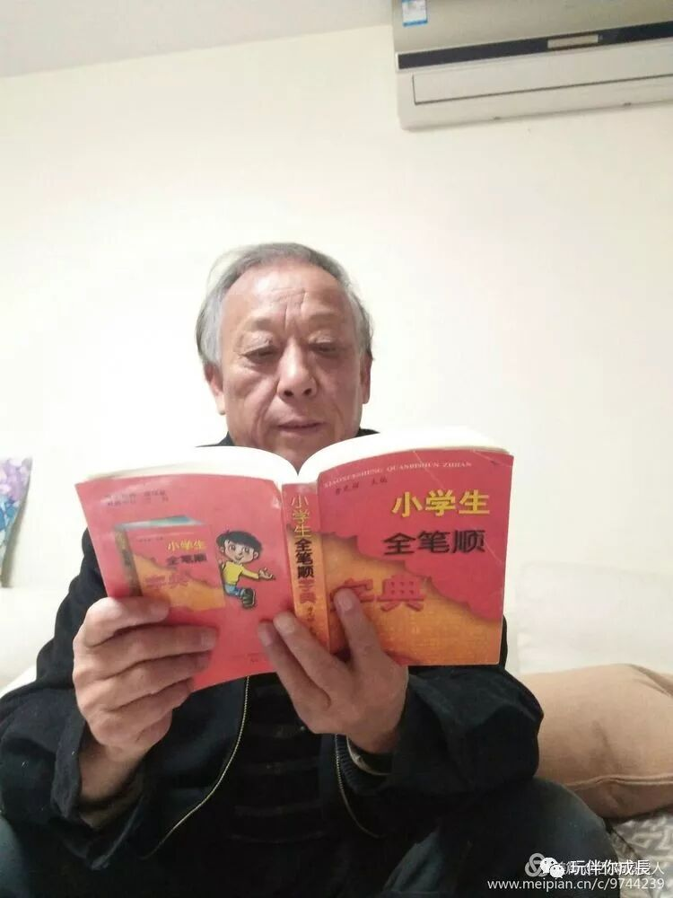
同砚激发开脑洞，古稀蒙啟写诗文。这事儿就特别老爸：他兴趣广泛，有特好奇的心；办事认真，有爱吃苦的力。这些年，他为各种爱好留下了无数纸头上的、电脑里的各种笔记。哪天有功夫，要帮他好好整理出来。
不过写对子这事儿，对他来说并不是新爱好。"童子打桐子，桐子落，童子乐"——这句老爸用我们方言广济话讲出来，刻在我幼小的脑子里，到现在还不忘。因为我们方言里"乐"和"落"发的是一样的音，再搭韵不过。如果说我们兄妹三人还能写点值得一看的文章，这大半是爸爸给我们打下的文学功底。小时候虽然家庭条件一般，但做过很多现在看来都很诗意的事：中秋节的时候，我们在屋顶平台搭个桌子，摆上妈妈准备的瓜子水果，一边赏月一边背诗；家里一面墙是黑板，春节我们办过黑板报。印象最深的是马年春节，有一版是马字成语接龙，中间可能有我写的文
章，还有弟弟画的骏马图。可惜那时候没有相机，这么珍贵的资料只能在脑海里寻觅了。当然，春节也少不了每个人要做对联，然后自己写自己贴；元宵节的时候，举着妈妈做的兔儿灯去看灯会；中元节的时候跟爸爸一起刻纸钱、写包袱，我总记得爸爸写的"孤魂野鬼""车夫挑夫"。平时都少不了背成语、歇后语什么的。这些文字中带来的文化传承，相信不是每个家庭都有的。而更遗憾的是，到了我们这一辈儿，虽然好像比爸爸们多读了一些书、多走了一些路，这些好的传统却没有被我们好好继承下来。等到我七十岁的时候，溜冰乐三个会写什么呢？——给他们搞了个每周六晚的家庭影院？哎，还不知道那时候他们能不能用中文写文章了。
除了这些文字上的乐趣，小时候家里别的也玩得不少。爸爸每次出差都带回来一些新鲜玩意儿，比如录像机、游戏机。俄罗斯方块、冒险岛啊、魂斗罗啊，我们都是跟爸爸一起打的。因为微信而重新火过一把的"打飞机"，类似我们七〇后小时候的经典游戏，那时候我们家里管他叫"打苍蝇"（广济话读作 ma ying er，是我们高中"考"其他县同学的经典词语；刚查了下，人家可能是打蜜蜂）。因为爸爸是他那一辈儿的老大，兄弟姐妹都住一起，有一阵子一二十号人就在我家排队"打苍蝇"，那叫个壮观。各种棋类活动就不说了，比较独特的还有数学麻将：规则跟一般麻将类似，拼出了几个式子就能胡，简直是学加减乘除的利器。我还记得那副牌背面是翠绿色的，很漂亮。可惜家里的那副现在好像也找不到了，玩具商也不生产这个了，网上一搜全是以色列那种。在美国的时候试图玩过一两次，规则半天都搞不清楚，果然还是有点文化差异。这个玩具的消失也是一种遗憾。

曾经听一个老人自怨自艾，说自己没什么兴趣爱好，节约到有些吝啬，是因为从小家里穷、青春年华遭遇文革等等。我跟爸爸一对照，就知道这些都不是理由。有些性格大概还是天生的多一些。其实爸爸家也是一穷二白，爷爷早逝，奶奶又是属于糊涂有糊涂福的那种。爸爸作为长子，带着下面四个弟弟两个妹妹，没少吃苦。大概是因为生在射手月的原因吧，爸爸有一颗好奇的童心，对新鲜事物肯花时间金钱去了解，待人更是慷慨大方。以前妈妈有个埋怨他的笑话：上街买东西不但不砍价，还多给别人钱，就因为看到卖东西的人可怜。
在这么差的条件下，爸爸能"混"出来，培养了三个孩子，发展还都不错。除了归功于他天生的乐观主义心态、热忱的生活态度，还要得益于"认真"两个字。（当然，培养了我们三个，很大部分要归功于妈妈，那部分就等妈妈大寿的时候再写吧。）爸爸是老三届，成绩本来很好，但生
生耽误了。到七七年恢复高考的时候，爸爸努力学习，临时入场，侥幸得中，却因为家庭和经济原因，大学梦彻底破灭。他理想中的学校是清华和华中科技大学：第一个由哥哥实现了；第二个本来要我去实现的，无奈我那时不知道，执拗地要离开湖北省，未能如他愿。后来，他一边在色织布厂担任厂长，一边上了广济县经委电大班，简称电大。他年纪最大，跟一帮小他很多的同学们一起学习。记得那时候家里经常很多人，有时候是讨论工作，有时候是学习。现在老家还留着不少爸爸那时学习的笔记。我那时爱玩的游戏是在爸爸身上腿上玩滑滑梯，听大人说话，也跟他的一些同学成了忘年交。爸爸以前学的是俄语，读电大的时候要学英语，他就跟哥哥一起学。记忆里"童子打桐子，桐子落，童子乐"的吟诵，就是跟英语混在一起的。关于这一段历史，爸爸自己的文章里有更详尽的记述（见本书《开学了·之四 五处校址》）。

因为认真和热情，爸爸在色织布厂的工作有声有色。后来年纪大了退居二线，再到退休，而我们三个又都不在身边，热闹的生活冷寂下来，有一段时间爸爸大概也是失落的。后来他就有一些爱好，并以十二分认真的态度去学。他学过一段时间周易，也是做了各种笔记，还自己花钱请瞎子给人看命，来印证自己算得对不对（这种做法是不是好可爱？）。那时候我在美国，他还要过我一个室友的生辰八字去算过，我还一直保留着他的批语。可惜这位短暂的室友如今也不知在何处，无法印证爸爸算得对不对了。

再后来，也不免俗地炒起了股，甚至有一段时间"迷恋"各种彩票，也是各种密密麻麻的笔记记得到处都是，我家还有若干。比如这个：
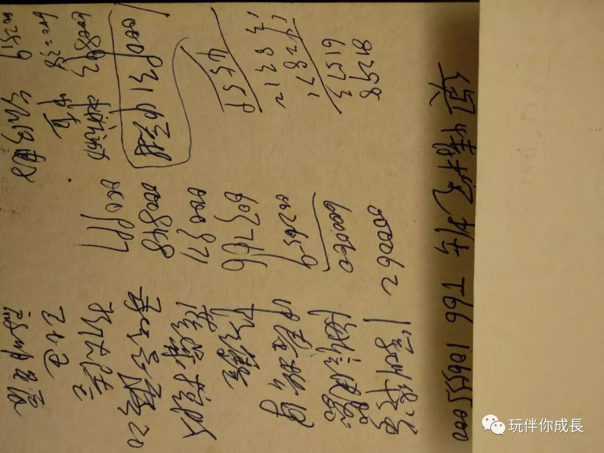
在我们老家，我们算很早接触电脑以及网络的人家。因为拼音不好，爸爸很快学习了五笔字型，而不是像别的同龄人依赖手写。这下子，他的笔头工作很多转到指头。QQ空间、微信公众号、美篇，他都能紧跟潮流，发布了不少文章，什么动图、漫画效果，也没少玩。要不是太认真——很多时候写一篇文章要反复查阅资料——估计还能更多。现在走到哪里，都不能少了他的一个大电脑包：笔记本电脑、相机、充电器、平板电脑、手机，又多又重。有一阵子，他简直就是我们整个家庭终端最多的人，没少被我妈埋怨。
退休了之后，爸妈因为我们兄妹三个的原因，基本在外面漂着了。给我们带孩子之余，也游了不少山水。因为我们工作的原因，大部分时候都是爸妈自己去玩。爸爸是有名的路痴，走在我们老家的商场里都能迷路，但有一个爱钻研的好习惯，攻略做得足足的，把计划都做好；出发到外面
，就发挥妈妈强大的方位感，配合得天衣无缝。他们兴趣盎然，胆子又大，即使在美国带娃的时候，日子也一点都不枯燥，挖掘出不少我们都没注意的地方。爸爸曾经写过一篇在纽约参加万圣节的文章，妙趣横生，有趣极了（见本书第二辑）。去年我跟爸妈、嫂子带着四个孩子一起去西雅图参加夏令营，白天送完孩子去上学就各处去玩，每天跟打仗似的：看过飞机展，坐过小艇海钓，爬了雪山，看了瀑布，住了豪宅。不过因为爸爸太认真，玩过之后还要反复查地图找历史资料，当时没来得及写游记。回国之后又投入到各种新鲜事物之中，那次的游记到现在也没出稿，不知什么时候能摆上他老人家的日程。

有时候妈妈笑着跟爸爸说，研究股票那么认真，也没看赚几个钱。其实，大部分的爱好，爸爸都没玩出个什么很高水准。可是那有什么关系呢？大部分人都是普普通通，哪有那么多的成就。玩的过程就是人生。做人嘛，最要紧就是开心。玩得开心，自得其乐就好了。更何况，这乐观爱玩
的天性、坚韧认真的态度，通过 DNA，也通过润物细无声的日常熏陶传给了我们，这才是我们最宝贵的财富。
老爸，生日快乐！祝您跟妈妈一起，活到老，学到老，玩到老，心态永年轻！
（本文写于二〇一七年十一月，老爸七十岁生日前夕，原载微信公众号"玩伴你成长"）
老屋·接漏
我家老屋位于老武穴街的西郊，周边较大点的区域叫做西菜园，这名字似乎没被沿用；较小的区域因为地势稍高而被称为墩儿上，由于年纪大的人相继离世，如今知道这名字的人已寥寥无几。
从老屋向东步行数分钟就到了尽人皆知的上庙。老屋门口外是一条武穴至田家镇的马路，路南边有一畦菜地和陈姓、何姓（和我家不同宗）人的聚居地；西边除了我伯父们的两间茅屋和一间瓦屋之外就全是菜园，再往西一二里地就是农村了；老屋的西北边有张姓乐姓周姓一二十户人家，而老屋后面就是中共广济县委的大院。
一九七七年，中共广济县委大院扩建，老屋被拆迁。
我于民国三十六年出生于老屋，至它被拆，整整在老屋里生活了三十年。
老屋不在了，却一直装着我儿时的欢乐、年少的理想；留着兄弟姐妹们嬉戏打闹的欢声和笑语，饥寒交迫的癫狂和呻吟……
老屋不在了，却一直忘不了祖父教诲的身影、祖母疼爱的深情；更忘不了母亲拖儿带女的含辛茹苦、父亲癌魔缠身的痛苦呻吟……
（一）接漏
刚从北京回来就遇到了入夏以来最闷热的一天。
我独自一人在家也没什么顾忌，光着膀子只穿一条短裤衩，敞开了所有门窗，或坐或躺在二楼客厅的竹床上，让头上的风扇开到极速拼命地旋转着。尽可能少地移动身体，不然只要超出风扇的势力范围，立即便会汗流如注。
好不容易熬过午夜，狂风突起，雷电交加，大有"山雨欲来风满楼"之势。
"劈，啪啪……"一声惊心动魄的雷声过后，天就像被撕开了一个口子，瓢泼似的大雨倾盆而下，大风立即将雨推进客厅里。
"劈，啪啪……"我刚从竹床上起身正准备去关紧窗户，一声惊雷劈断了电路，屋里顿时一片漆黑……
借着闪电的光辉，急忙关紧了二楼的窗户，又摸索着上到三楼、四楼，下到一楼，检查一扇扇窗户，逐个插好插紧插销，免使大雨刮进屋内。
当我重新躺在竹床上的时候，墙上的挂钟正好敲响了两下……
迷迷糊糊中我被父亲喊醒："大（念dai）的，大的（父母亲对我的称呼），快起来，下雨了，快起来接漏！"
我条件反射般地坐了起来，揉了揉眼睛。只见母亲床边破桌上自制的煤油灯发出暗淡的黄光，被风吹得一闪一闪的；母亲靠坐在东边的山墙下（她的床是东西向的），怀里紧紧地抱着吃奶的小妹；大妹坐在床头，头靠在母亲的肩上，惊悸地瞪着大眼；父亲站在床边，正将棉被卷向母亲那一头，围盖在她们三人的身上。而此时又有几滴雨滴在母亲床西头的棉絮
上（在我被叫醒前已经滴了一些雨），父亲将棉絮往中间卷了卷。我连忙端起地上的脚盆儿（用于晚上接小便的木制小盆）放在棕床上，一会儿盆子里便发出滴滴滴的雨击声。与此同时，父亲已经将二弟、三弟、四弟一个个叫了起来（我们兄弟四人的床是紧靠着母亲床的西头南北向架着的），卷起了床上的破被破絮，将它们放在不漏雨的地方。然后大家分头行动，到堂屋和灶下（煮饭的地方）去找脸盆、脚盆（木制的洗澡盆）、坛儿（腌菜用的）、钵儿（较大的陶制碗具），然后对号入座：滴雨多的地方就放上脚盆，滴雨少的地方就放上钵儿，甚至一个碗……
"劈，啪啪……"一声惊雷劈断了我的梦，赶走了我的睡意，也打开了我回忆的闸门……
雨夜接漏的事是常常发生的。不过，今夜的雨再大我也绝不担心——接漏的事，是发生在三十年前我们家那间老屋里的……
老屋是民国三十六年修的，那一年我正好出生在那里。
武穴街原来很小很小，上庙是最热闹的地方。
从上庙往西南走约三百米的地方是田武路（一条往西通向田镇的马路）的起点，沿着马路往西约两百米的地方叫做西菜园。在田武路南侧有四五户人家，那是陈姓人家的聚居地；斜对面路的北侧也有四户人家，那是我们何氏的聚居地。我家老屋在东边的头一间，西边的三间是三位伯父的家。
由于我们这个地段的地势高于上庙，所以也被称为"礅儿上"。老屋往北约二百米的地方就是中共广济县委的机关大院。不论路南还是路北，
再往西都是清一色的菜园，间或有几个小池塘，稍远一点便有或大或小的村庄和麦地、稻田。
武穴街上的人要到田镇或者西边的村庄去，田镇和西边村庄上的人要到武穴街来，都要经过田武路，都要从我们老屋前经过。
老屋（或曰西菜园礅儿上）是武穴街西边的门户。小时候听老人说，在老屋西边不远的地方，东洋人还在那儿修过炮台。
老屋是典型的农村砖木结构的连二的房子，座北朝南，长约三丈，宽一丈八。西边是堂屋，宽约一丈；东边被隔成两间，各开一门与堂屋相连，是睡觉的地方，称为"房"。南头的叫前房，北头的叫后房。大门位于堂屋偏东的地方，两侧一人高的地方各开一小窗，高不过三尺，宽不过二尺五，窗框和窗棂都是木头的，窗门也是木头的，两扇对开。后门开在紧靠着后房的地方，前后门也是木制两开的。前后房分别在南墙和北墙中间一人高的地方开有一扇同堂屋一样的窗户。
在堂屋中间离北墙约八尺的地方，用竹棒和芦席编了一个照壁，将堂屋一分为二：前面才是真正意义上的堂屋，后面是灶下，就是做饭的地方。照壁的东侧留有一门，以便使堂屋和后房、后门及灶下相通。
在灶下，靠北墙用砖头垒了一个灶，灶尾靠西墙，灶门朝东，有两个灶口的土灶。
走出后门，是个围圈，我们管它叫后壁圈。围圈是用竹棒、木荆树枝编垒的。木荆树枝落地生根，生命力极强，所以围圈长年四季是绿油油的。圈内有三四棵苦楝树、一棵桑树，小时养蚕玩的桑叶就是从这棵树上采
摘的。圈内也是堆放杂物和柴禾的地方，有空的地方就见缝插针地种上扁豆、丝瓜，让它们的藤条爬到树上、围圈上。一到春夏，围圈上爬满了各色各样的花儿，有紫的、白的、黄的，有大的、小的……
一到傍晚，站在枝条上的知了们和躲在杂物堆里的蟋蟀们各展歌喉，演奏着经久不息的二重唱。
围圈是小精灵们的天堂，也是我儿时的乐园。
老屋西墙外至堂伯父家房子中间是一块空地。父亲在老屋西北角离西墙三四尺的地方埋了一口大缸，缸沿上平行地放上两块木板，在缸的南、北和西面用砖头垒了一个半人多高、五尺见方的围圈，四角各竖一根一人高的竹桩，将它们连接牢固后，盖上用竹棒和芦席编成的顶盖。这就是一个面向西山墙的简陋的厕所，我们管它叫"茅厕（音maosi）"，后壁圈有门同茅厕相通，出大门转过西墙走几步就是茅厕了。
我们家是种菜的，所以茅厕不但是我们全家人方便的地方，更重要的，它还是我们家为生产队收集和储藏肥料的地方。
老屋的门口很宽，祖父沿着马路边开了一块菜地。他不敢种菜，却精心侍弄了一种叫园西的药用小草。小草救治了很多麻疹患儿，也为祖父换来了酒资。
我们一家老小在老屋里吃喝拉撒了几十年，有无穷的欢乐，也有不尽的苦难。
最使我不能忘怀的是老屋的冬夜，下雨的冬夜，连雨的冬夜……
为了减少热量的消耗，为了抵御冷寒，天断黑不久，全家人便陆续上床，钻进被子里。
祖父和祖母睡在前房，他们两人共同享用一个篝。篝是一种陶制的带有提手的、近于球形的取暖容器，用时将窑杂（烧炭后的细小余渣）装填于篝内，上面覆盖火种，窑杂就会不发明火而缓慢燃烧。白天，取暖者提篝于手，或靠在身上，或坐着将篝置于地上，然后踏脚于篝上，可使身体不同部位获得温暖，睡觉时则可以带进被子内。
这样的篝，老屋里只有两个。我们家买不起窑杂，就用棉子壳、谷壳、麦穗壳等作替代，更多的是就地取材，直接从土灶里扒出未烧尽的细柴禾填入篝内，或事先将它们扒出来，闭熄存留备用。这些材料不同于窑杂，用时不停地冒烟，往往呛得人打不开眼睛。有时还会发出明火。有一次大妹用时明火烧痛了她的手，篝掉在地上摔破了，吓得大哭，生怕母亲回来挨打。过了一二十天，母亲才买了一个新的。
好几次祖母床上的篝失去了平衡，喊我去"救火"，结果棉絮被烧了几个洞。
后房可就热闹了。在不足十五平米的空间里横竖紧挨着架了两张床。高兴的时候，我们弟兄四人在床上嬉戏、打闹、翻跟斗，妹妹们也爬过来凑热闹。
睡下了就难熬了。为了睡得暖些，四个人脱下的棉袄棉裤，单的、夹的，一大堆都堆在被子上；你的手臂横在我的胸口上，我的腿压在你的肚子上。小时又很怕鬼，总是把头埋在被子里，常常被压得、闭得喘不过气来。
我的体质很差，常常难以入睡。傍晚喝的是照得见人的稀粥，拉了几次尿后，肚子就呱呱叫了。好不容易进入梦乡，动不动就被冻醒——也不知是老二还是老三，睡梦中脚一蹬、手一挥，被子便被掀开，有时候连同棉裤棉袄一起都被掀翻到地下去了。
这种事每夜都会发生的，多的时候会有三次、四次、无数次……
下雨天就更苦了。
漏雨就像灾难一样不可避免地降临。
老屋盖的是老式布瓦。这种瓦呈弓形，要盖两层，底层瓦弓面朝下，上层的瓦弓面朝天，盖在两排底瓦的中间，它们都是一块压一块由前后屋檐盖往屋顶的。只要哪儿的瓦发生破损、移位，哪儿就会漏雨；如果有一块或几块瓦掉落了，那就要大漏了。
刮大风，猫或老鼠在屋面上活动，顽皮孩子往屋上扔石子，都可能使瓦片移位或破损；天长日久瓦片自然老化也会变薄直至破损。为了避免漏雨就得定期、不定期地对屋面进行维护，俗称"检瓦"。只要检瓦得时得当，漏雨虽然不可避免，但绝不会酿成"灾难"。
老屋漏雨之所以成为灾难，却另有缘故。
用来承载瓦面的是桁条和桷子。桁条是一根根平行的、横着固定在山墙上的树干，桷子是一条条垂直钉在桁条上的木条，底瓦就盖在两排桷子的中间。桷子要求很高：形状要平直，长度同屋檐至屋顶的距离相等，尤其要耐腐蚀，所以要用上好的杉树加工而成。
老屋的桷子却是用芦材棒代替的！为了达到一定的宽度，将几根芦材棒扎在一起就当成一根桷子。
从六十年代初期开始，"桷子"承受不了瓦面的压力，芦材棒常常掉到地上。初时一小段，一根、两根；后来，一段短扎，一段长扎……于是漏雨的频率步步升高，力度愈来愈强。检瓦成了家常便饭，漏了就检，检了还漏，漏了再检……
寻常人家检瓦请泥瓦匠，我们家请不起，都是父亲自己干。买不起杉树，父亲用杨柳树干加工成"桷子"，渐次替换掉落的芦材棒。杨柳树干弯弯曲曲，厚薄不一，长短不一，实在不是做桷子的料！换了总比不换好——不换，屋里就不是漏雨，而是下雨了！
我怕冬夜，更怕下雨的冬夜！
每逢雨后天晴，父亲都要上屋检瓦。我们兄弟就帮他扶梯，接破瓦下来，递好瓦上去。父亲常常累得两腿发软、双眼发黑，有一次下梯时摔了下来，在床上足足躺了三天。
恐怕很少有人比我们父子更能理解"屋漏更遭连夜雨"这句俗语了！
连雨的冬夜，免去了白天检瓦的辛劳和困苦，却给我们带来了更深更大的辛劳和困苦！我们父子几人不得不不停地接漏，尽最大的努力让祖父祖母、母亲和妹妹们能够勉强睡睡。
雨下大了，下长了，有一些本不会漏雨的瓦也会滴下雨来——那些瓦只是有一点点"沙眼"，雨的撞击力会使沙眼扩大。我们得找东西去接新漏！
雨下大了，下长了，坛坛钵钵们甚至脚盆都会被不断地接满，我们不得不重复地将接满了的雨泼到屋外再接！一夜的折腾，父子们个个弄得又冷又饿，筋疲力尽！
终于有一天，父亲不再接漏了。他想有一间不漏的屋，没能实现。
此后三年，接漏的任务就由我和弟弟们一力承担了。
公元一九七七年，广济县委机关大院扩建，老屋的位置正好是规划的机关大院的大门，老屋被拆迁了。
从此，接漏只在我的梦里。
老屋·园西
下午没有做饭，为的是去街上宵夜——吃一碗兰州拉面。
夏日的太阳迟迟不肯落山，待有点夜的意思，已经快八点了。
于是，我和妻子启程去拉面馆。拉面馆在离我们家不到一公里远的永宁大道中段。那儿是老武穴街的上庙地段，二十世纪六十年代以前是我们武穴街最有名也最热闹的地方，如今被一条大道切断开了，门口蹲着两个大石狮的庙宇也早已被那场史无前例的运动"革命"了。可现在这儿的夜市仍不失为我们武穴城最热闹的地方：大排档、小排档一排又一排，面食馆、小吃摊比比皆是。"拉面馆"就坐落在永宁大道南侧与步行街交叉处，那儿露天排放着十多张案板，灶台前大师傅们正挥汗如雨地摆弄着面条，不时发出劈劈啪啪的响声。
我瞪着眼睛审视一张又一张案板，走过一家又一家。"就这家吧？"妻子指着有一块"正宗兰州拉面"招牌的小排档。我没睬她。她又指一家，我仍没睬。如是数次，她急了："你到底要吃什么呀？不是说好了吃兰州拉面吗？"
终于，我拉着她，在最尽头的"小郑拉面"桌子边坐了下来。
也就四五分钟的样子，两碗热气腾腾的拉面摆在我俩的面前。妻子望了望隔壁几家，小声地问我："你怎么非要到这一家？我看不出比他们的好。"我指着案板东头："你看，那儿有一大盆园西呢！"
"喂，老板，给我加一点园西！""什么，你要什么？""园西"，我指了指案板东头。老板娘拿起一个瓶子："要醋？""不是，不是。"她又拿起另一个瓶子："要酱油？""要园西！"我坚持说。正当老板娘不知所措的时候，妻子也急了，她站起来指着那一大盆园西说："就是香菜！"说完，还低声挖苦我："土包子！"
老板娘连忙往我俩碗里夹了两箸。"我不喜欢吃这个东西，辟死人！"妻子边说边将她碗中的园西夹给我。我将园西往面汤里按了按，三下五去二就吃完了。扒了几口面，我索性端起碗到案板去夹园西。要不是那老板娘望了我一眼，只怕那一大盆就被我夹光了。
"你怎么这么喜欢吃香菜？你哪里是来吃拉面！"
"是呀，我对园西有一种特别的感情。讲给你听听？"
那是四十年前的事了。我们家是种蔬菜的，是武穴镇蔬菜大队第八生产队的社员。我们世居的老屋，就是现在中共武穴市委大院的大门和围墙的位置。门口是一条武穴通往田家镇的公路（现在这条路在武穴市区内的一段就是永宁大道）。路南是一畦菜地。我们家在路北，老祖父偷偷地将门口路边的空地开垦成一块不规则的菜地，面积不过二十几个平米。不便栽菜，就在上面种了园西，栽了一些鱼腥草之类的草药。老人家天天小心地呵护它们：松土、除草、浇水，用夜壶的尿做肥（那时代，就是用了自家毛坑的大粪也算是偷集体的）。它们也偷偷地成长，一片绿油油的，那长势绝不比路南的逊色。
老祖父嗜酒如命！
那几年正是"三年自然灾害"前后，一家老小十一口没一天能填饱肚皮，父亲哪有钱给他买酒？
园西，正是这园西救了他的命！
祖父的义兄是当时闻名的老中医，人称张七爷，祖父可能是从他那儿学来的，知道园西能治小儿麻疹。那年代缺医少药，也不兴种痘，不少人也没钱上医院；还有一些医生有意照顾祖父，自己不给治，把病人介绍到我们家。
说起来这园西治麻疹也真灵验：用两三棵园西，洗干净，放一小勺红糖，煎好了让患儿服后安静地休息，要紧的是不要见风，第二天麻疹便乖乖地出来了，再休息一两天也就万事大吉了。
患儿的家长来我们家，祖父（有时祖母或其他人，我也一样）就给他扯几棵园西，详细地给他们讲解治疗方法，反复强调禁风、用红糖而不可用白糖，并且十二分自信地说：包你一喝就好。那园西就按棵计价：五分钱或一角钱一棵。有了一个患者上门，他二两酒就到嘴了。
他就靠"经营"那块巴掌大的地，隔三差五地满足他的酒瘾，而且在武穴街是独家经营！生产队只种蔬菜，不屑于种这种小玩意儿，他们也没种子。其他的人一是没地可种，二是没人敢种。
老人家笃信孔孟之道。这小小园西不但"救了他自己的命"——满足了他的酒瘾，也医治了不少患儿。每当患儿的父母、家人千恩万谢地感谢他的时候，他那兴奋之色比他好几天没有酒喝、突然有人给他送酒还要高兴！他常对我说：人活在世上，要多做好事，多做善事，不可欺人，不可
欺心！举头三尺有神明！他给了人家园西，并不是都收钱的。记得有一次一个老头来"弄"园西，不但没收一分钱，还把他自己仅有的一两红糖送给了那老头！（那年代红糖很不好买。）有一次他不在家，我帮他"卖"了两毛钱。当我高高兴兴地把钱交给他时，他问我是谁家伢儿病了，我说是胡家老嬷。不提防他举起拐棍劈头盖脑地向我打来，边打边说："你这小畜生，人家一个孤儿，你忍心要别人的钱！"我说："你好几天没喝酒了呀。"他老人家却说："不喝酒就死得了人！"
园西，满足了祖父的酒瘾，也满足了他救人的心！
"仁山叔是好人呵！""龙水爹救了多少伢儿呵！"（祖父名仁山，号龙水。）很多人这样称赞祖父。
"何家那老头卖菜赚钱，这是走资本主义！""何龙水种自留地，破坏集体经济！"有人要整他。
有一天，两个虎背熊腰的小伙子扛着锄头，气势汹汹地跑到我家，不问三七二十一，连根带土地扒光了园西，临走留下一句话："再也不许种这个鬼东西，再种，就把你个老鬼送到派出所去！"
老人家来不及阻止他们，刚说了一句"我的园西！"，一口气没接上，就晕过去了。
一年以后，老人家带着他没做完的园西梦，悄然到他本不该那么早去的地方去了。那是公元一九六五年。
自那以后，我就再也没见到过园西。
二十多年后，我出差到西安，才重新看到了园西！大街小巷，只要是餐馆、小吃摊，没一家没有这久违的东西！我看到它特别亲切。看到它，就又看到了我的老屋，看到了祖父精心侍弄的"自留地"，慈祥的祖父就站在我的面前。
就是这一次，我才知道它原来不叫园西，而是叫香菜！现代科学使它失去了药用价值，却成了人们调味的小菜！
于是，出差期间，我每餐必吃，每馆必吃！
闲来无事，近日查字典，偶得：芫荽（yan2sui1），别名香菜，为伞形科芫荽属植物，一年生或二年生草本，以全草与成熟果实入药，可治小儿麻疹。
在此之前，我一直把"芫荽"误作"园西"，祖父就是这么教我的。
在我有生之年，怕是永远不会把园西称为香菜了，也不会将它写为芫荽。
园西刻在我的心坎上。
老屋·打麻
六月，是打麻的季节。
我家是菜农。五十年代初的时候，虽然只有几岁，却清清楚楚地记得，我们家有几块地。远处的几块在"四方塘"的西边，而四方塘紧靠田武路的北边。四方塘四四方方，长宽不过几十米，面积虽然不大，却是我家和附近有田地的十几家人的衣食父母——大家都靠这口塘的水给田地浇水、泼粪。夏天的时候，常常有数个、甚至十数个小孩在塘里洗冷水澡（游泳）。后几年我和弟弟们就经常在塘里玩。遇上天旱，塘要干了，虽然急坏了大人，却也乐坏了一班孩子和喜欢抓鱼的人。大家都赤膊着，甚至光着身子下塘抓鱼。塘里抓鱼的人，岸上拿鱼的人，四周围观的人不下数十个甚至百多个，大家都弄得满身是水、满脸是泥，闹渣渣、乱轰轰。那种热火朝天的场面，今天的孩子们在网上不知道见过没见过？
由于那几块地离家"远"，我去得不是很多，但是隔三差五地跟着祖父去那儿玩，有时也和祖母一道到地里扯草、摘茄子、割韭菜……
其实那几块地并不远，离我们家也就两百米的样子，位置就在今天永宁商场的内面。
近的一块地就在我们家对面，仅仅隔着田武路（武穴至田镇的公路，今称永宁大道）。那时的路很窄，大概不到现在公路的三分之一宽，所以打开大门就能看到地里的作物，走几步就可以去地里玩玩。
也不知什么原因，这块地主要种的是苎麻，也许是小农自给自足的意思——大部分地里种的是蔬菜，记得一块小田种的是水稻，苎麻算是经济作物吧？
的确，苎麻能卖好价钱，而且一年收获三次，叫做头麻、二麻、三麻。收获有点复杂，这可能是种在家门口的主要原因吧？
夏天的时候，是头麻收获的季节。苎麻是半灌木植物，长得比我还高，先要用镰刀把它们割回家，然后要打麻（刮麻），刮下的麻晒干后才可以出售，或用它搓绳子家用。麻皮晒干后也可搓绳，剩下的麻秆就做柴火了。
割麻、晒麻人人会做，打麻似乎是技术性很强的活儿。
麻的茎由三部分组成：内层是半木质的麻秆，中层是麻，最外层是麻皮。割回的麻，先得将外两层从麻秆上剥下来，然后放在水里浸泡，浸泡后才把麻和麻皮分割开。
打麻时，用一个铁制的专用工具戴在手上，将浸湿的麻从麻皮上刮下来。一般人做不下这个活儿。我们家只有祖母会打麻，她一个人没办法完成，所以就请了一个龚阿姨来帮忙。记得龚阿姨长长的，很漂亮，很温和，似乎和我们家有什么亲戚关系。她家住在刘八角，我家在墩儿上（西菜园），离我们家不是很远。每次打麻都得在我们家干几天，早上来，下午在我们家吃了饭才回家，而且一年要来帮三次忙。所以我和龚阿姨特熟，她很喜欢我。尤其是，她每次来帮忙都带着她的儿子文斌一起来。文斌好像比我小一岁，但他的个子比我高，长长的、瘦瘦的，长着一双大眼睛，
显得特机灵。来得多了，我们成了好朋友。大人们忙着，我们就一起玩：去麻地里捉知了、捕蝴蝶；去砖堆墙角抓蛐蛐；去房间里躲猛儿（捉迷藏）。当然，有时也打架。记得有一次他打我，我哭起来，他妈妈急忙丢下活儿，追着他要打他呢！
长大了，后来，他在自来水厂工作。大家各自忙着，见面就不多了。
人老了，喜欢回忆往事，总想找个机会去看看他，聊聊儿时的事。
也许，他有时候也会想起我吧？
老屋·珠粑（老屋之六）
人越老，家乡情越浓。
自二零零三年提前退休后借居北京，一晃十六七个年头了。
总是想回家，却很少回家。
本月五日，逼近年关，因急事不得不只身坐上回家乡的火车。虽然已网购小年那天的回京车票，来去匆忙，心里还是乐滋滋的。
大兄弟情深，不"准"我在外面吃饭，一日三餐，弟媳妇都要打两三次电话，督促催促我去他们家。
尽管如此，我还是以种种借口偷偷地去汤圆摊吃了四次汤圆。
他们禁不住问我为什么非去吃那家汤圆，要吃家里一样做呀。我告诉他们，我本爱甜食，但是深层意思是吃"回忆"，吃"家乡"。
他们一时语塞。
这家汤圆摊是整个武穴街（武穴市政府的所在地）唯一的一家。
汤圆摊位于中百仓储（一家武汉市的超市连锁点）对面的一条人行小巷。巷子右侧的"美食街"北头，几个平米的地方就是汤圆摊。摊位的南边是美食街的墙屏，紧靠墙屏是一副担子。担子的一头是正在烧着柴火的缸灶（武穴方言，灶具），上面放着一个正在煮着汤圆的锣罐（武穴方言，可加热的铁容器）。另一头是一个用来放置碗筷的木制柜子。西边的圆盘里装有制作好的生汤圆。一个矮小的四方木桌可供四个人坐着享用汤圆。

摊主老钟比我年长两岁，是一个七十五岁的垂暮老头。他负责制作生汤圆和煮汤圆，他的儿媳妇帮他打下手，负责招待客人。
我递给老钟一支烟，边吃边和他聊天。
他家是做汤圆的世家。七十多年前，他的祖父就跟人学做汤圆；十五年后，他的父亲接过汤圆担做了三十八年；父亲将这行当交给他以后，如今整整做了十八年。
他告诉我，从前武穴街还有另外三家做汤圆的，如今就剩他在做了。
老钟说的另外三家，其中姓刘的那家离我家不过百十米之遥，算得上是邻居。
正是对刘家汤圆的怀念，让我在短短的十二天里背着弟弟和弟媳妇去老钟的汤圆摊吃了四次。
刘
家的汤圆是我儿时留下的终身难以磨灭的记忆。
六十年前，刘家——可以肯定钟家和其它几家的汤圆都和刘家一样——他们做的汤圆并不叫汤圆，而是叫珠粑。
三十二年前武穴市前称广济县。
广济话处于西南官话、北方官话、江淮官话和赣方言的交界处，所以经过两千多年，形成了由江西省瑞昌市码头镇、九江县城子镇部分区域以及本域东部以外的区域组成的独特的广济方言。
广济方言将圆球形的、圆饼形的食物称之为粑，如米粑、糍粑、高粱粑，甚至将牛粪做的、用于燃烧的圆饼形物称之为牛屎粑。
汤圆外形白而圆，煮熟了有光泽，故名珠粑。
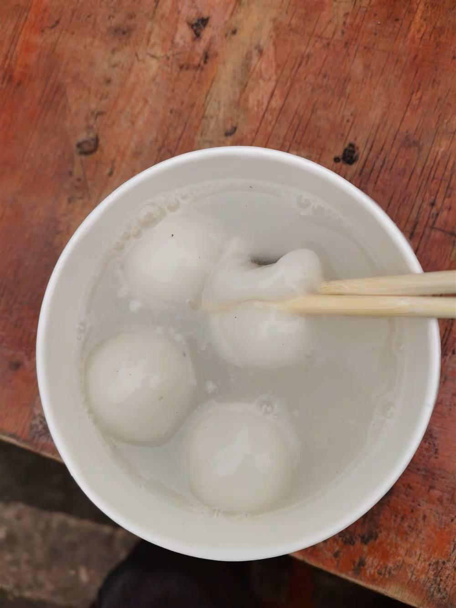
珠粑就是汤圆，汤圆就是珠粑。
可
是，往昔的珠粑和如今的汤圆却有种种不同。
就经销方式而言，如果把如今的老钟汤圆叫做坐商，那么往昔的刘家珠粑则是行商。
记得刘家卖珠粑也是个老头。
一大早，刘家老头挑着珠粑担，一晃一晃地经过我家后面，转而来到我家门口前的田武路边停下来。那位置就是现在正在拆除的市委大院的大门口——市委大院大门往西，文印部就是我家老屋。


稍微喘口气，刘老便拿起一竹板敲起来，边敲边喊："珠粑啰，现煮的热珠粑！"以此招来食客。
没有人给刘老打下手。食客稀稀拉拉地来容易对付，若是一下子来了五六个人可就忙坏他了：盛珠粑、收铜钱、洗碗筷、添柴火，忙得不亦乐乎。
食客少的时候，他又拿起竹板敲起来："现成的热珠粑哟，又甜又香！"
时间等长了没人来了，他便收拾好珠粑担，挑起来沿着田武路往东去上庙口人多的地方，或更远一点人多的地方，待到带出来的生珠粑卖完了，便挑起担子回家。
比起刘家，老钟的汤圆摊则轻松很多，也方便很多。
老钟的家离汤圆摊很近。除了出摊要将一应物料挑到汤圆摊、收摊时将剩下的东西挑回去外，其余时间他都在摊位，中间很多间歇时间还可以坐着休息。
其实老钟还可以更轻松一些：一辆三轮车可以代替他将汤圆担挑来挑去，而且他的下手或其它家人都能替他骑三轮车，却大多不能帮他挑那副沉甸甸的担子。
和我常去吃汤圆一样，老钟之所以坚持挑汤圆担子，就是一种怀旧，一种传承——因为那副担子是他父祖留下来的。

我仔细地观察了老钟的汤圆担子，它和我记忆中刘家的珠粑担子几乎一模一样。
但是扁担另一头的木柜里放的东西却大不一样。
在摊位上，老钟的木柜子上就放了十来个一次性塑料碗，而刘家木柜子放的东西可多啦！
准备的足够数量的生珠粑、几个瓷碗几双竹筷、用于往锣罐里添加的清洁水、用于洗碗筷的中水，还有足够烧的劈柴。
所谓劈柴，是将干的树干劈成专用于烧火的长片状的木料，只有郊外的农民挑来街上出售。老钟却不用花这笔钱。他告诉我：没花一分钱，一次就从附近的超市里拖回一千多斤木制包装箱，又方便又好烧。
人老了，难得关住记忆的阀门。
每次坐在老钟的汤圆摊位的小凳子上，吃着吃着，就想起了刘老头和他的珠粑担。
一年三百六十五天，除了下雨降雪，抑或刘老头有事，大多时间，老刘的竹板声、吆喝声都会闯入我的耳朵。偏偏他出来的第一站就停在我家老屋的大门口。
几乎每一次，我都会从屋里跑出来，看老刘，看珠粑担子，看那烧得吧吧响的劈柴发出的火焰，看那锣罐里煮得蹦蹦跳的又圆又白的珠粑，看那些吃得津津有味的食客……
看着看着，口水不由自主地流出来了（写着写着，眼泪也不由自主地流出来了）。这时候，父亲会从屋里面喊我："大（dai）的（广济方言，父母亲对长子的称呼），快回来！"没见我回屋，母亲会从屋里出来，一边拉我回屋，一边悄悄地耳语："等过月半的时候，我和你父给你们做。"
中国的语言博大精深。母亲说的过月半做的就是珠粑（包括如今老钟的汤圆），只不过到了月半的时候，就叫元宵了。
吃不上刘家的珠粑，就等着月半吃元宵了。
六十年前，那些用来制作元宵的食糖、桂花、芝麻、猪油甚至糯米，都不是寻常百姓家必备的食材，而对于我家来说则是奢侈品了。
尽管家里很穷，某些年份母亲还是兑现了她对我的承诺："等到月半时，我和你父给你们做。"
终于盼到了这一天。
全家老少上上下下九口人，欢欢喜喜、热热闹闹、忙忙碌碌一整天。伴着月半夜的圆月，又圆又白、热气腾腾的元宵上桌啦！
刹那间，早已张网待渔的五双筷子齐刷刷地夹起了一个个元宵，而退居二线的祖父母、父母亲的脸上也齐刷刷地露出了会心的微笑。他们几乎同时向我和弟妹们发出警告："伢儿们，慢点慢点，别烫着嘴啦！"
风卷残云后腾出嘴来的弟妹们叽叽喳喳起来："刘老头天天在我们屋门口卖的珠粑和元宵是一样吗？""是一样的。平时卖叫珠粑，月半这几天叫元宵。"父亲告诉我们。
听了父亲的话，弟妹们手舞足蹈起来："哈哈，我们也吃珠粑啦！气死你个刘老头！"
K1454次列车朝着北京一路飞驰，我的思路又飞回到老钟的汤圆摊。
前几天我曾问过老钟：你家汤圆从前不叫汤圆吧？老钟不无感慨地说："是呀，从我祖父起一直叫珠粑呀。不是有句话叫与时俱进吗？武穴街还有几个人记得珠粑？等我上了崔家山（崔家山为广济县公墓，上崔家山意为去世），这行当也就完了！"
是呵！方言珠粑行将消失，卖珠粑的行当亦将失传！
列车在飞驰，时代在前进，传承不可丢！
呼吁家乡的有识之士，为叫卖珠粑（或曰珠粑担）这一行当申请个非物质文化遗产，或比照武穴岳家拳替老钟申请个传承人！
二〇二〇年元月十八日（农历小年）于K1453次列车
记忆中的武穴河街
——"欢乐的老三届"群主题聊天纪实（二〇一七年七月十六日）
2017年7月16日，"欢乐的老三届"群举行了一场主题为"记忆中的河街"的别开生面的群聊。同学们激情满怀，纷纷用书法、散文、吟诗作对、互聊等多种形式回忆武穴河街的往事，抚今追昔，抒发了对河街的不了的情怀。
八点整，群聊主持人西菜园老人宣布今晚群聊话题。
我们今天的话题是：记忆中的河街。
我们这一代人见证了河街的繁荣与消亡，有年少时的欢快的记忆，也有晚年时的无奈的惆怅。今天群聊记忆中的河街，让我们穿越时空，回到五十多年前吧！
主持人话音刚落，同学们群情激昂，纷纷发言。有吟诗的，有作对的，有发散文的，有谈感想的；有追忆的，有抚今的。大河同学即席和兰天同学的《梦回河街》，诗云：兰天的《梦回河街》真是神奇，又把我引回到少年时代——八户塘、石板桥、青石路、轮船码头、百年老屋，历历在目。诱发我的诗兴，和兰天《梦回河街》诗一首。
梦回河街
兰天
八户塘里日戏水，石板桥上夜逍遥。
将军巍巍励我志，扬子浩浩寄胸怀。
百年乡愁何处找？十里江滩一盆栽。
请欣赏天苍地茫的《梦回河街》。
梦回河街
天苍地茫
一街十八巷，石径百余年。
背倚扬子堤，握手将军山。
一塘映日月，一桥连地天。
窗外君乘巨轮达洋海，
室内我读唐诗宋词汉文章。
高家巷、港咀上、女儿街……
河街的码头处处轮船巡弋、林立樯帆，
星罗棋布着旅馆客栈、
鼓板茶楼、商铺澡堂、盐仓，
日迎三省七县八方客，
暮送鄂赣皖苏上海商。
电灯、马灯、汽油灯交相辉映，
岁岁年年、日夜兼程着不累的河街！
走过百余年，陪着东流的长江……
河街，您"忍辱负重"，忍痛割爱，
万般不舍地一步三回头，
从我们的身边和视线中离开。
一别十五年，您走得如此干净：
没瓢起一滴江水，
没带走一粒尘埃！
仅将那方八户塘、那座石板桥，
深藏在我们脚下！
每当我徜徉在现代气派的公园里，
情不自禁地想起你当年的模样……
君若问起我的最爱，
我定脱口而出：
我还是最爱着你——
百年不老但已远去的，
我梦中的河街！
现居南通的冬豆同学，无限激情地回忆家乡：
"我的家乡——武穴，在湖北、安徽、江西三省交界的地方，是山清水秀、人杰地灵、鱼米之乡！"这是我在外向别人介绍我引以自豪的家乡的话语，一点也不夸张！李庭中老友在老河街的回忆中已经把家乡描述得很详细也很精彩！感谢他带给我们美好的回忆！
我记忆中的武穴街是以长江防洪大堤划分为坝内坝外两大区块，坝外坝内均以下庙和正街的闸口为中心。坝外的东头有新街、港咀上、轮渡码头；坝外的西头有船码头、河街、龙王庙。我家住新街，朱秋娥家住港咀上，她们进出也走新街。新街有一个武穴街上唯一的澡堂，很热闹！澡堂对面有一民办小学，我一、二年级是在该小学上的，记得有一个陆校长和家住新街口的朱永祖老师，后来到实验小学上的，田小雅老师是我的班主任！
靠近新街口有一个大食堂，一九五八年大跃进吃食堂（吃饭不要钱），在排队打饭时，我赤脚不小心踩上一个碎瓶子玻璃，锋利的玻璃把脚板割破了一个大口子。我嫂子背着我，鲜血一直流到坝内的镇卫生院，至今还隐隐作痛哩！
出了新街口就是下庙，武穴最热闹的地段。下庙的庙确实很大很高（有二层楼高），庙内还有很多大菩萨！门口有两个大石狮子，后来成为食品公司，专门做大鱼出口生意的，我妈经常去那儿买回鱼杂炒酸菜，放上点辣的和豆豉（武穴叫豆食），至今想起来就要流口水！还有一次他们打捞起来一头黑灰色的大江豚（武穴叫江猪、江冲儿），比一头水牛还长！也是切成大块出口啦！我们买东西基本都是在下庙完成，洗衣服在八户塘，洗菜在长江，吃用水都是从长江挑水。长江水给我们带来无尽的乐趣，同时也带来水灾！
坝外的人家每年发大水都要搬家，搬到坝内各中小学去住。到洪水退后，在房子里抓鱼捞虾也是我们孩时的一大乐趣！记得有一次与我弟在长江钓鱼，钓起来一条灰白色、像蛇一样的东西，吓得连鱼竿都扔了！到南通后才看到那不是蛇，是鳗鱼。
1960年有一天下午，我放学回家，肚子本就饿了。我妈给我粮本和米袋，让我去下关粮站买米。我极不情愿地一手拿粮本一手拿米袋，翻过大坝，走到粮站才发现不知什么时候把粮本丢啦！不得了啦！全家人的口粮啊！急忙返回原路仔细寻找，没找到！那时粮本丢了要过三个月才能补发哩！也就意味着我全家人要饿饭三个月啊！太吓人了！后来多亏我有一表叔在粮站工作，一周后就补发了新粮本啦！不用饿饭了！好好开心啊！
儿时最开心的是：夏天的夜晚，吃好饭洗好澡，搬个竹床在外面乘凉睡觉，数着满天繁星，辨认着北斗星、牛郎织女星、银河；看着流星下雨，传说流星落到哪里，哪里就要发大火！后来造船厂发了大火，有人就说看到流星落在造船厂了！哈……也不知真假！看着弯弯的月亮，想象着大树下嫦娥抱着玉兔在干啥。有时也看着六月天下大冰雹，还捡回来弄干净了含在嘴里当冰棒吃哩！啊！这份童趣，现在的孩子们可难以享受到啊！
儿时发生最惊险的两件事，现在回想起来还很害怕。一件是在长江学游泳。那天下午我去江边挑水，看到有人在江里游泳，于是我也心血来潮，从打捞队借了一个黑色的大轮胎当救生圈，从轮渡码头下水，划呀划，不知不觉划到江中间去了，小鱼把我的双脚啄得痒痒的。此时，不远处有一大客轮向我驶来，并不停地在鸣笛！我就拼命想往岸上游，但越游越往江中流。岸边打捞队的人看到后，连忙放一小划艇，抢在大轮没撞上我之前，把我救出来了！（那时我还不会游泳，至今梦里还依稀梦到此情此景，时而惊出一身冷汗！）
第二件事：星期天在家没事干，几个街坊邻居好友一起坐轮渡到将军山上去摘松树球（一角钱一张船票，一天能摘一担），采摘回家给煤球炉子点火用。爬到近十几米高的松树上，一不小心踩断了一根树杈，掉下来差点摔死！（我的腰可能就在那时损伤了，到二十五、六岁时就发腰疼。）
啊！家乡的回忆太美了！家乡的山美！水美！人更美！这么多的美给我们带来了无穷的快乐的回忆！我爱我的家乡！
思维敏捷的、客居随州的蔡大不甘落后，又是吟诗又抒情，忙得不亦乐乎！
忆河街一景——武穴港
蔡大
江申江亚也不差。
江汉江德冒黑烟，
江平江安似龟爬。
不知有多少武穴人听到或记得这个顺口溜。可是后来这些江字头的轮船，都被改成东方红号。我们这些老同学，哪个不曾坐过江轮，上汉口，下九江，各奔东西。这些甜蜜的记忆，几十年中时常想起。
我小时候一大爱好是河边看船。走进河街，来到江边，看下水船到龙王庙鸣笛，要弯到三八闸调头逆水停靠武穴港；上水船直接进港。曾几何时，有一份港务局的工作，那便是人上人。俱往矣，三十年河东，四十年河西。曾誉为小汉口的武穴港，如凋零的花朵，日渐衰败。港口繁荣，武
穴昌盛；港口没落，武穴势微。河街渐渐逝去，随着我们这一代人渐行渐远。只有巍巍将军山，静静扬子江。
河街怀旧
信步河街走，两眼皆迷茫。
旧貌已不再，新宠曰滨江。
蹉跎岁月久，难寻武穴港。
往事越经年，记忆回味长。
曾经汛期至，满目水汪洋。
江猪中流现，鮰鱼躲岸旁。
河豚好美味，渔夫下板网。
急流天一色，不见八户塘。
倘若可穿越，愿做少儿郎。
幼时曾在河街"洋人屋"居住过的刘凯国同学，即时写出两篇回忆文章。
河街的记忆之一：上水山
一九五四年是我儿时开始清楚的记忆。老街人都知道，每年汛期到来河街必淹，河街人就必要上水山。最清楚的记忆：我从新河坝跟在大人后面，趟着脚脖子深的水穿过新河坝——这只是大水要来的开始。我家住在洋人屋（后来的武装部），地势比较高，一般水灾淹不了。我记得一楼大厅里遍地蚯蚓和水蛇，动物们为避灾都往高处跑，大人则忙于搬东西。整个河街人流如潮，要赶在洪水上来之前、闸口未封，将自家有用的东西搬到堤内。这就是河街"做上水山"我最早的记忆，一直延续到至今。
河街记忆之二：水产公司
五十年代河街的繁华，除了码头就算水产公司了。出了正街闸，过了豆干铺就是下庙，门口两个狮子张牙舞爪，就是水产公司所在地。武穴靠长江，旧社会水产就很繁荣，长江水产资源丰富，普通淡水鱼都能长到几十斤，远销各大城市。解放后公私合营，就有了水产公司。最稀罕的就是中华鲟和白鱀豚，大的有好几百斤，就像卖猪肉一样卖。由于过度捕捞，这些珍稀动物已经灭绝，鱼也不多了。水产公司到六十年代后就萧条关闭。
受主持人特邀的嘉宾——诗人黄峰先生，诗兴大发，接二连三地即兴作诗。
风雨园中树，高低自擎天。
浅释：武中读书的情景记忆犹新。我们像树苗一样在风雨中成长。几十年中，虽然树木有高低，但立业成家，抚育子孙，各自撑起了头上的一块天。
八户塘
樯桅帆落新河口，石板桥斜古水腰。
天晓无风铺碧镜，夜沉有韵品湘箫。
龙舟五月端阳节，绿女红男喜弄潮。
八户塘位于旧时西官坝（江堤）外。西通新河口，东临女儿街，长约两里，中有石板路（桥），连接上河街。两岸居家多有凌水吊楼之建筑，是赛龙舟、游赏之地。
雏燕跃飞齐比翼，群蛙赛唱试争雄。
半尝世纪春秋史，各树人生劳苦功。
网上晚情虽缺酒，更期来日醉相逢。
群聊进行中，主持人插话：同学们，群友们，今天是一个值得纪念的日子。五十一年前，毛主席最后一次畅游长江，时年七十三岁，游程三十里，游时一小时零五分。河街背靠八户塘，面朝长江，是河街男儿天然的游泳场。我们就请吴有才同学回忆回忆他游泳的往事吧。
八户塘是个天然游泳池。河街人也特别喜欢水，夏天一到傍晚，大人小孩——有的只有两三岁，被家人抱着——来到八户塘，嬉水打闹。渐渐地时间长了，不用教也会游泳了。稍大一点，十几岁就敢到长江去游了。当大船过后，涌起的排浪忽高忽低，很刺激，我们叫"赶浪"。一九六六年七月十六日，毛主席在武汉畅游长江，武穴于八月一日组织了一次渡江活动，规模比以往几次大，还有仪仗队：最前面语录牌由三人拖带，后面是彩旗队，最后是徒手游泳队。游了不到一半，三人中有一人游不动退出，最后由立国和我二人拖带完成任务。这也算是河街人对这次活动的一点贡献吧。
河街妹长珠的先生田园听风写楹联，道出了夫妻俩对老河街的深情厚意。
才
倾江涛阅尽街兴街废，八户塘水载来民俗民情。
凭良港，埠借港兴，繁埠迎行商坐贾，遍历辉煌。
紧挨扬子水，门泊东吴千里舟。
八户塘，后坝前街，坝脚洗衣坝上晾衣。
矮楼枕水，梦里桨声恍惚中。
八户塘龙舟竞渡，仙姑庙凤辇徐行。
鱼卸滩头，清晨酒醉与船歌。
老河街有座教堂，胡塗仙记忆犹新。
老河街人都应该记得，那里有一处特殊的建筑——教堂。这里有我童年的记忆，也是我与河街的不解情缘。在我上小学前，教堂曾经给实小老师当过宿舍，我随母亲在此短暂住过。每天老师们上班走了，偌大的教堂只我一人逛来逛去（现如今没有谁家这么放心将学龄前儿童一个人锁在家中）。记得教堂的玻璃有红、黄、蓝几种，且是有花纹的；后面有个小院子，紧靠八户塘，院里栽满了花，有一种叫十姊妹花很是好看。教堂的围墙有一段是镂空砌成的，经常有隔壁一小男孩扒着砖花空处向里张望——
他羡慕我一个人在院里可以看这么漂亮的花，我羡慕他可以在外自由自在地玩。现在想来，也如同一只飞翔在外的小鸟与笼中的小鸟对峙着吧！
听了同学们的诗，看了同学们的文章，元深有感触地说：蔡大、天苍地茫、开国、吴有才、卢春林、诗艾、毛栗等老同学，难得芳邻互唤，高朋满座。诸位文、词、诗、联，争辉斗彩；情、思、景、事，璧合珠联。长街小巷、客轮樯帆，客栈、茶楼、盐仓；长河落日、大堤秋月，浪卷柳林、水浸河街。画卷历历，多少壮丽沧桑！记忆中的老河街跃然纸上，真不愧为老三届。我再描述无异画蛇添足。谢各位了！愿老同学们聊得开心，事事顺心！
河街姐妹思故乡，情绪万千。
秋娥曰：江边生，江边长，忆河街，想下关。夜夜无眠，今又无眠！
长珠云：纵有千缕情，难谱思乡曲；吃尽万般苦，立做河街人！
群聊中，大家对河街精神展开了热议。我们忆河街，对河街一往情深。百年河街何处找？十里江滩一盆栽。河街永远只存在于我们的记忆中，但河街的精神是永恒的。"开放包容，吃苦坚强；敬商重贾，广纳贤才；奋力争先，共创辉煌。"这些河街精神已融入我们的血液，激励着人们创业不怠，奋斗不息。
我们怀念河街！我们热爱家乡！
早在五、六天前，接到群主关于准备进行"记忆中的河街"群聊话题时，毛栗同学兴奋异常，几天没睡好觉，加班加点写出了一篇长篇回忆河
街的文章，八点未到就在群里发布了。他的文章中谈及河街三件宝，说到第三件他忘了，大河同学在群聊中予以补充。就让我们以毛栗同学的文章《回忆老河街》作为结束语。（附大河的补充。）
回忆老河街
毛栗
同学们都知道，武穴是吴头楚尾、鄂东门户，老河街则是门户的门户。武穴俗称"小汉口"，老河街是源头。据资料，老河街同武穴已有千年历史。过去历史不一考究，略知近代一二。现响应群主命题，把记忆的街况先细细一说，与各位分享。但不能保证准确，毕竟是聊天，重在参与，错误之处多多包涵。
老河街依长江北岸，东起下关，西至上关，以石板桥（河街人称石板路）为界，分上河街和下河街。我在上河街（上关）盐仓出生，后住56号，与老同学吴有才为邻。他虽是帅哥，但我们都叫他"老丑"小名。
河街下关有船厂，造船修船；有长江打捞队，专业打捞江底沉船。最热闹的是下庙、新街——陈腊花（冬豆）好像住这里。下庙有一个高门大祠堂，门口一对雄壮狮子，当时是渔业食品公司，这儿每天很多水产鱼类交易。下庙还有豆腐坊，做豆干又白又嫩；有茶馆唱戏说书；有澡塘沐浴；有小摊贩炸珠粑儿、油果的；有煤场供全县用煤；永宁中学在这儿建校，我初中在此读的书。这里还有综绳社制的棚床是有名的，用二十几年都不塌陷。还有餐馆、菜市场等。江对面江西瑞昌县码头与武穴轮渡也在下庙上岸。下庙是集教育、商贸、服务、餐饮、物流一体的集市。
从下庙往上，就是大型货仓，搬运公司、码头工人都集中于此。有竹器社——章水泉工艺竹器名扬海内外。有公安局，负责全县治安，有它河街安宁。这里镜头焦点就是楚门第一的武穴轮船码头。武穴港是长江十大深水港之一，可停万吨巨轮。从武汉到九江、上海的汉申班大轮、汉九班小轮必停港口，武穴港承鄂皖赣三省七县通衢。武穴人出远门基本都是这儿出发的。记得一九七〇年七月十四日晚八点，我和蔡中先、韩月花还有一批武汉知青招工后，乘东方红8号离开武穴的，至今四十七年啦，真是弹指一挥间。
客人从船上下码头，可一直沿栖贤路经闸口进入后坝街、居仁街。这两条街和河街都有清一色的长条青石路，行人多年行走，已是如青竹般光滑。轮船码头的港务局是仿汉口码头的西洋式建筑，很有特色。从港务局向上，是紧挨着的六号大仓库，都存粮食的。近邻的是东方红旅社，前身是教堂，河街人称天主堂。小时我进去还看过教堂里彩色玻璃窗门而好奇。
经行人多年行走，路面光滑如青竹，雨后可照人。如果打着武穴油布伞，穿上龙坪木屐走起来，如同现今女士高跟鞋叩叩有声。街的两边是大门板商铺，鲁迅笔下的街景处处可见。如果保持至今，定是旅游圣地，可比浙江乌镇、湖南凤凰城比美。
这一段还有几家私人客栈。再往西就是石板路口，这里是居民集住地，马头墙徽式建筑大都在这一带。记得郑美珍、大河在此住过。石板路以青石砌成而闻名，全桥呈S型，九曲回廊。记得初中有次探险游戏，老师在指令上叫经S桥到海军码头，我一下就找到了。石板桥有两处拱形桥洞
连通八户塘，桥两侧有垒成半圆形石墩护桥。这儿是八户塘游泳跳水的好地方，每年夏天游泳的像下饺子般跳进塘中。这儿是天然的泳场，容纳千人游泳也不在话下。游泳比赛、龙舟赛、武装泅渡训练、横渡长江列队拉练，八户塘都是首选。八户塘是武穴最大的塘，有人说是武穴的眼睛。这儿是天然浴场，晴天妇女浣衣，坝内坝外络绎不绝，棒槌声声入耳，妇女边洗衣边家长里短地聊天。大坝绿茵草地又是很好的赛场，洗完就地晾晒，确实方便。
我家前门面对将军山，后门就是八户塘，淘米、洗菜、洗衣最方便。八户塘鱼多，在塘里摸鱼捞虾、踩脚鱼很有乐趣。塘里鱼是公养的，不允许钓，总是偷偷地钓。家里缺菜了，去塘里一会就钓回一碗鱼。我曾经还在长江钓过一条九斤的大鲤鱼哩，上关的人都知道。
石板桥北边翻过大坝就是城内，坝内就是实验小学。当时河街人称"蚌壳鼓"（鹅卵石）学校，因校舍全部是鹅卵石贴面的。我小学就是这里读的。胡凯鸣妈妈徐叔云老师就是这所学校教我们年级的老师，我的班主任是黄银容老师，她们关系很好。记得凯鸣也是这儿念书的，她扎着对小辫，很漂亮。我因贪玩，小学毕业没考上初中，凯鸣考上了。有一次看到她扎着小辫、身穿白衬衣蓝长裤在台上跳舞，真羡慕极了。
石板桥南桥头住着一户刘姓人家，男人双目失明，但他有绝活，会修钟表。广济有句话说，广济有三宝：一宝是拐子会过河，二宝是瞎子修钟表，三宝我不记得了。河街人杰地灵，前两宝都在河街，瞎子修钟我经常观看过。拐子叫富龙，双脚只有膝盖以上，就住在我们上关，很熟悉他。身体壮实，喜喝酒，他在打捞队是潜水员，水下可呆半个多小时，有险处总是他先下水。
从石板路往上就是生活资料公司，这里曾有骡马厩，由南下复退军官冯氏驯骡马。生资公司往上就是老盐仓（我出生地），地址上修建的百货仓库，承担蕲黄广百货调拨。再往西就是新盐业公司，也是承担本县和周边各县的食盐调拨。盐业公司江边修了两条长滑坡，便于货轮停靠。因在我家旁，记得常有大货船卸盐。那时没有机械，搬运工人全部双肩扛，一包食盐有近二百来斤。工人手持货签（记数的），肩扛盐包，汗流浃背，吃力地爬坡上岸，送进仓库，真是辛苦。盐业公司旁是石油公司，也是石油调拨，但没有盐业公司繁忙。
从石油公司往上就是横坝儿，连着大堤，翻过大堤就是我们广济高中了，是我每天上学的必经之路。以此往西就是大家熟悉的武装部。这里是我们学生曾经在文革中的伤心之地——为了维护所谓的革命路线，我们在这儿绝食抗议孙祥玉（政委），高唱"抬头望见北斗星"，饿了一天的肚子哩！记得母亲喊我回去吃饭也决不回家，现在想起来真是幼稚好笑。但武装部的建筑历史是值得后人纪念的。这里是饶汉祥旧居，建于1923年。饶汉祥是武穴人，曾任黎元洪鄂军都督府秘书长。旧居为欧式两层建筑，坐北朝南，砖木水泥结构，长17.2米、宽15米、高13.6米（资料介绍），屋顶属歇山顶与攒顶结合，顶铺红机瓦，砖砌墙，木质楼板。抗战时日本司令部就设在该旧居，侵华日军在鄂东地区的投降仪式在旧居进行。旧居见证了日军侵华罪行，有重要历史意义。
饶汉祥旧居西边是一个气象水文观察站，紧挨的是龙王庙，老河街西边尽头了。龙王庙的基脚是用大青石砌的高台，东边接路，有条小路沿气象围栏通向庙宇。南、西、北边高台离地面估计有十多米高。龙王庙用大块青石砖筑围墙，院内有枇杷树、柚子树、竹林。庙体白色，庙里没看到
龙王塑像，只有观音菩萨。求子敬香的信男信女，多为妇女香客，庙里香火不断，只有一位老尼看守。文革冲击后停了，文革结束后看到修复了，又有了香火。今年清明回乡，看到又打围了，可能又要重新修建，规模也大了，旅游部门可能要做宗教旅游文章。我们期待龙王庙的新生。
老河街从武穴版图上永远消失了。老河街像一位长者，顾全大局，为防洪百年大计牺牲了。她是英雄。石板桥像苍生的百年老人，沉睡到大地的怀抱。八户塘连通长江，她像条美人鱼，也永远离开我们，她游进滔滔长江，奔向了大海。
老河街的历史却永远在心中抹不掉。生于斯长于斯的故地没了，难免有些伤感。但我们不能停留于怀旧中不可自拔，一切向前看，回忆是为了吸取正能量。时代在进步，历史在发展，一个新天地将展现在我们面前。如今在老河街沃土上新建的美丽的滨江公园里，每天父老乡亲们欢歌笑语、载歌载舞，一派国泰民安的景象，岂不令人欣慰和祝福吗？
附：大河补充——毛栗讲河街三件宝，只记得两件，我给予了补充完善。
河街有个顺口溜：
瞎子整钟表，
拐子过河咚咚呛，
热天没得蚊子咬。
这瞎子姓陈，住石板路口，与程菊梅斜对面，他儿子陈贞祥后当了钟厂副厂长。拐子过河毛栗讲得很清。"热天没蚊子咬"，真是河街一绝：住在河街不用蚊帐，没有一个蚊子。这是因为每到太阳落山，江风吹来，清爽宜人，比坝里要低5度以上；同时每年涨水，也给河街进行了清洗，蚊虫没有孳生之地。住在河街，身上不长痱子；即使长了，只要到长江江水里浸泡两次，痱子就没了，比用药、擦花露水还灵。住在河街，观长江百舸争流，看江珠时隐时现，清秀的将军山尽收眼底，美不胜收，确实是个休闲的好地方。
群聊自始至终群情踊跃，个个争先，有说不完的话，表不尽的情。毛栗、西菜园老人、长珠、雪莲、胡塗仙、元、开国、卢妈、锦玲、天苍地茫、楚江浪人争相发了红包。
广济桥
国庆前夕，应朋友之邀来杭州小住。昨日下榻余杭区铁流商务酒店。
上午和老伴在酒店门口乘坐公交车去塘栖古镇游览。
在人民路口下车后，路人告诉我们，沿下车的这条马路直走，一会儿就可到达古镇。
走不几步，眼前一亮，发现路边一块路牌上竟写着"广济路"三个大字。顿时觉得又好奇又兴奋——那心情，就像前不久在英国旅游，突然在街上发现一家餐馆门上挂着一块中文招牌一样，格外亲切。

我不由自主地"审视"起这条路来了。
马路四车道，笔直。来时因没注意，不知起点（或终点）于何处，路两旁挂了很多红色的旗帜。
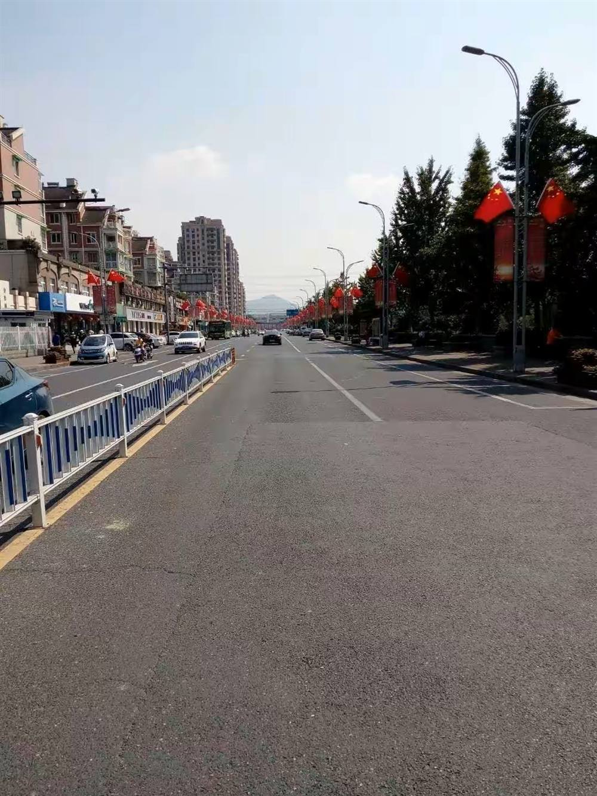
要去的一头已经不长了，隐隐约约似乎到尽头了。

我放慢了脚步，有意张望路边的建筑，企图发现和"广济"沾边的物事。
还真的被我发现了！

很高很小的四个字："广济公寓"。

不是我老眼未花，这几个字是不容易看见的。

醒目的公交站站名。

张扬的广济大药房。
不知不觉间，公路到了尽头，古镇到了。二三十米远的地方是一座石桥，从尽头处到石桥就是一段步行街，两边则是有些古色的店铺。
步行街其实就是广济路的终点（或起点）的一小段。

塘栖古镇界碑——通车的广济路止于此。
"'广济路'连着桥，这桥只怕也会叫'广济桥'吧？"我无心赏景，招呼老伴寻找"广济桥"三个字。
四只眼搜遍了桥边所有能写字刻字的地方，终无所获。
携老伴沿着桥南一路搜索桥栏、桥面，终于在桥北头发现了一块石牌，心情无比激动，左拍右摄，连拍了好几张。

大运河
广济桥
中华人民共和国国务院


一时心情大悦，多视角欣赏大桥的雄姿。

石板面。

桥栏。

桥面上的八卦图。

桥栏横截面。

远处的七孔桥。
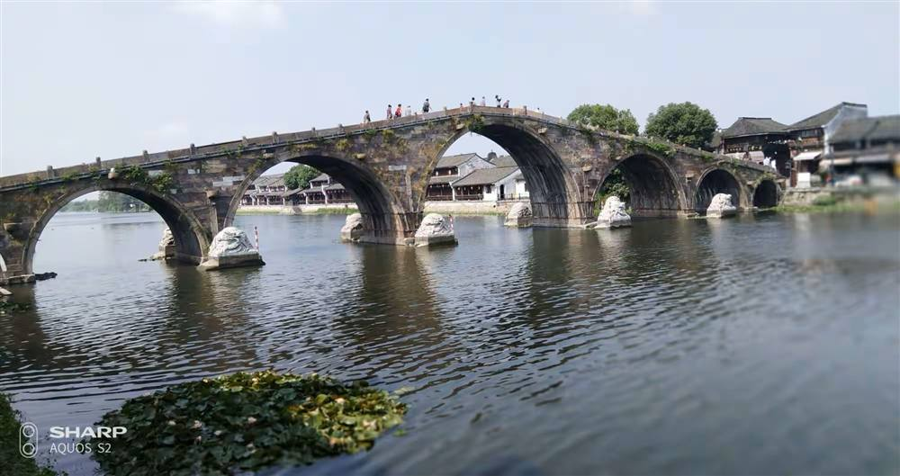

坡度颇大的桥面。

雄伟！古朴！
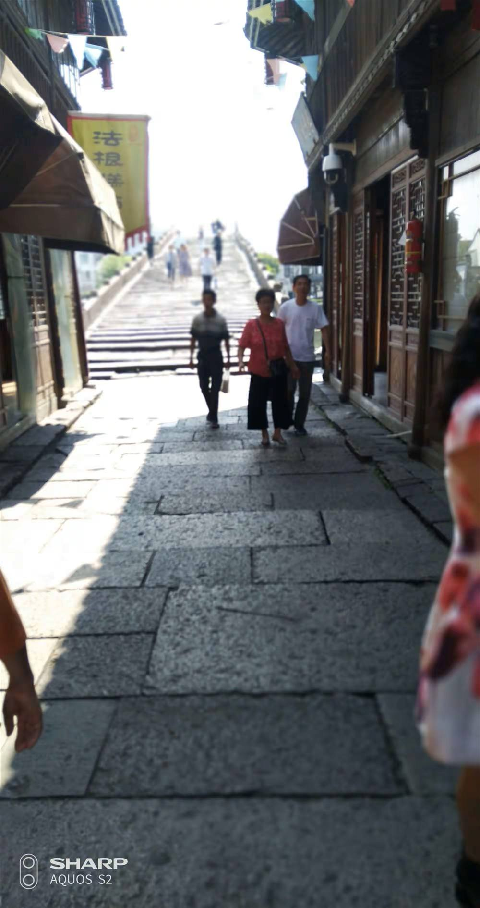
和古街相连。
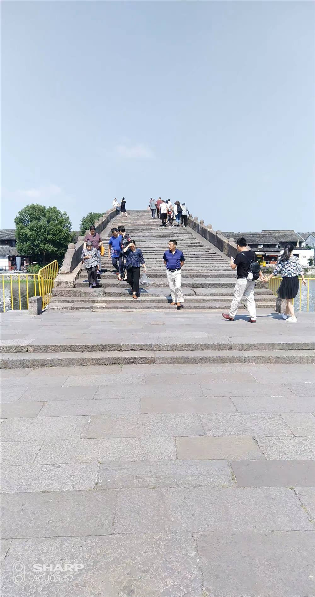
上上下下的游人。

再看看！

多看不厌。
找个林荫处，翻开互联网，度娘告诉我：
广济桥始建于唐朝，距今近千年。全长78.7米，面宽5.2米，矢高7.75米，中孔净跨15.6米。位于杭州市余杭塘栖镇西北，南北向横跨于京杭大运河上，如长虹卧波，是古运河上仅存的一座七孔石拱桥，也是大运河上保存至今规模最大的薄墩联拱石桥。
运河水清澈，灵秀！
风景这边独好！


运河两岸鳞次栉比的民居古色古香，老街左右琳琅满目的特产好看好吃。


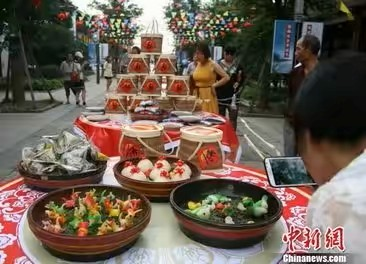


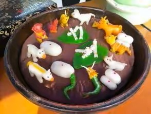
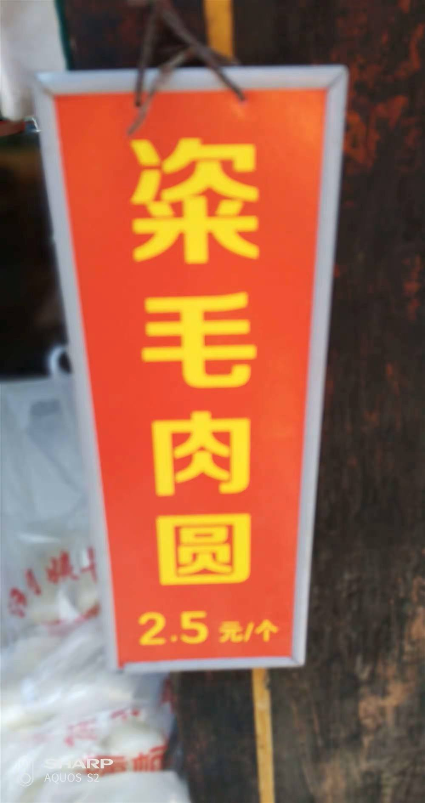

好景看不尽，我的心一直还放在"广济"上，我要去探寻更多的"广济"。
在步行街，家家户户都有一块广济路门牌。

越看越亲切。

有一条街道名为广济西路。
莫非还有广济东路？

发现广济路社区，让我浮想联翩！
这广济二字如此受用，该不会出现广济县、广济市吧？这古镇游人爆棚，不日扩张，直接就将广济社区升格为广济县？亦或别的什么地方撤县建市，直呼广济市？
三十一年前的一幕突现我的眼前。
在我四十周岁生日的前几天的十月二十三日，广济县城红旗招展、锣鼓喧天、鞭炮齐鸣、众志成"市"——发生了一件振奋人心的大喜事：广济县升格为武穴市。
撤县建市的确让广济县民们欢腾喜悦。三十年来，武穴市也取得了突飞猛进的发展，而"广济"二字也逐渐淡出了市民们的生活。然而时间的累积，让一些老县民们发思古怀旧之念；可持续发展的思考，更让一些广济精英们查典翻经，痛悔失去"广济"，疾呼重新改回。
要想将武穴市改成广济市，恐有蜀道之难！
写到这里，我又想起前头度娘没说完的话。
也就是在广济县更改为武穴市以后的不久，我国交通运输迅猛发展，此时的广济桥由于年老力衰，却成为制约京杭大运河航运发展的一大瓶颈。交通主管部门视其为碍航桥、危桥，决定现场拆除或迁移它河，广济桥命悬一线。在广大群众、文化精英和诸多各级领导的奋力护救下，经过数年的拆保之争，最终政府花巨资巨力，在离桥数里之外开挖一条长几公里的四级航道绕过广济桥，以分流过往船只，从而广济桥幸免于难。非但如此，国家还拨巨款加固维修，且最终对广济桥实行封航，从而使广济桥卸却重负、旧貌新颜。
企望广济精英们奋力呼号，广络同仁，精准谋划，切实施为——蜀道虽难，说不定如保广济桥一样如愿以偿。
吾亦有改武穴市为广济市之心愿久矣！
二〇一八年国庆前夕
北京武穴商会赞
二〇一九年十二月二十一日午夜
一年一度新年到。北京武穴商会2020年新春年会暨第二届北京·武穴发展论坛今日在北京宴隆重召开。

北京宴六楼大厅，二百余名北京武穴商会会员、特邀嘉宾、在京同乡济济一堂。乡音袅袅，红带飘飘，会场热烈欢快。
下午三时，会议隆重开幕。
武穴市委书记李新桥，清华大学武穴籍教授何茂春，国家发改委宏观经济管理专家委员会秘书长易昌良，北京武穴商会常务副会长张璋相继发言，共话武穴发展前景，同谋促进发展良策。

武穴市委书记李新桥。
下午六时，北京武穴商会会长吴永先，在京兄弟商会会长，武穴市领导相继致辞，预祝武穴在京乡亲新春愉快，万事胜意。

北京武穴商会会长吴永先。
嗣后，别开生面的文艺演出和美酒潺潺的新春宴会交错进行。
在会长吴永先的陪同下，市委书记李新桥一桌一席地向武穴乡亲敬酒。乡亲们频频举杯，互祝新春。

国际艺术家音乐比赛评委、著名军旅歌唱家、亚洲第一女中音刘子琪即席演唱，将新春年会推至高潮。
年会结束后，北京武穴商会赠送每位与会乡亲一盒包装得红红火火的武穴佛手山药。寓意深刻：它定将让我们的年夜饭添上浓浓的家乡味，预示我们的日子过得红红火火！
北京武穴商会，在京乡亲的贴心人！

七律（新韵）一首以记之：
北京武穴商会二〇二〇年新春年会
会长永先招众贤。
共话武穴图进展，
同谋各界助家园。
乡音袅袅全堂溢，
美酒潺潺满场酣。
厚重乡情千里外，
赠添佛手过新年。
开学了·之一 三张桌子
赋闲多年，除了睡懒觉以外，每天大部分时间都是在桌子边度过的。
三张桌子：麻将桌、电脑桌、饭桌。
打麻将是最容易打发光阴的，因而坐麻将桌就几乎成了"天天读"。
前几年，在一起打麻将都是要好的朋友、同学、同事，常常要事先预约或临时相邀，"天天读"时有缺课的时候。随着科技的突飞猛进，麻将也被卷入改革的浪潮，机械化、自动化取代了平常的桌子和人工搓洗，于是以麻将机为载体的新式麻将馆像雨后春笋般地发展起来（老式的麻将馆很少光顾）。在我家东南西北方圆一二十米的范围内总计有五六家之多，由于竞争激烈，我这个大闲人就成了他们争夺的对象。这家邀那家请，有时候三缺一，他们或哀求，或硬拉，想缺课也不成。
晚饭后，电脑桌一坐，又一个"天天读"开始了。
儿子怕我脑子生锈，赶不上与时俱进的时代步伐，早在上世纪末就给买回了一台电脑。虽说不识英文，但是经过认真钻研，刻苦练习，一般的操作技术很快就掌握了。从此之后，电脑桌是每天必坐的。起初只看看新闻，收发儿女们的email，偶尔也上一下QQ，不久就迷上了诸如"连连看""Mad Caps"之类的小游戏，像坐麻将桌一样，常常一坐就是几个小时，不到深更半夜是绝不会关机的。
显然，坐饭桌是不可一日或缺的。
日复一日的赋闲课程表就基本上是：太阳晒到屁股后起床，废除早餐，数数石板，上饭桌（中饭），上麻将桌，上饭桌（晚饭），上电脑桌，上床。
随着科技的进步和改革的外延，上述的课程表有时被简化，那就是麻将桌与饭桌连在一起，中途不用打道回府，直接从麻将桌移到饭桌，又从饭桌移到麻将桌，甚或饭桌就是麻将桌。
曾有杂志宣称打麻将有利于身心：说两只手十个指头都在不断运动，脑子也在不停地运转，因而这项体育活动最适合它的人群就是老年人和闲人。
事物都有两面性，物极必反。间或玩一玩也许能印证该杂志的推论，像我这样的"天天读"，除了打发时光以外，与身心健康实在是有百害而无一利。
像打麻将一样，一晚上几个小时的小游戏常常弄得头昏眼花，腰酸背痛，有时还饿得饥肠辘辘，伤脾伤胃。
赋闲期间，儿女们也一个个长起了翅膀远走高飞了，剩下两个闲人，这饭桌上的食物就简单不过了。兼之麻将桌和电脑桌的诱惑，用在饭桌上的时间就少得可怜了。
为了改变这种生活方式，也曾努力试图找一份工作，可人家都嫌年岁大了，不予录用；为了取代麻将，也曾练习书法，可是由于资质愚钝，总也练不出兴趣来。
倒是到儿子那儿去小住，既可以帮他们做做家务，饭桌上同儿媳一起吃吃喝喝、唠唠嗑嗑，又尽享了天伦之乐。虽然避免了麻将桌的伤害，却又少了麻将桌的社会交流。饭桌上的时间有限，一整天闲着无事，又增加了坐电脑桌的时间，住不了多久便打道回府，重新坐到麻将桌上了。
儿媳曾建议：去上老年大学，用课桌取代麻将桌。可这一生上的学不少，实在打不起这个精神。
前不久有人建议去学开车，想不到这建议老妻和儿女媳妇一齐赞同，于是四月十一日去汽校报了名。
今天，晴空万里，暮春的太阳有似酷暑的骄阳。我拢了拢头发，刮了刮胡子，穿了件雪白的衬衣，带着报名时发的书和笔记本，兴冲冲地到汽校去。
汽校开学了！
年届花甲的我，又上学了！
起码，这两个月内，课桌将取代麻将桌，也许从此不再坐麻将桌了。起码，麻将桌不再会是"天天读"了！
二〇〇六年四月二十二日
开学了·之二 两辆汽车
汽校开学了！
离上课的时间还差十分钟，我径自走上三楼，走进教室。
教室大门朝东，背面西。
首先映入眼帘的是西墙和南墙上贴满了一张张五颜六色的图画，一眼就看出是汽车零部件的分解图和道路交通规则的图标符号。南面墙下还放着一排汽车零部件实物。北面墙上挂着一块黑板，黑板下面邻门的一端一张桌子上放着一台17寸彩色电视机，它肯定是用于电化教学的；离黑板不远的中轴线上放着一张黄色的条桌，桌子上放着一盒粉笔、一个黑板擦——当然这就是讲台了。讲台的后面横四排竖七排间隔地放着像讲台一样的课桌（可供二人坐）和条凳，一眼望去，能看到张张课桌上的灰尘，想必是十天半月没有人来上过课了。
我用墙角放置的拖把将前排桌子和凳子抹了抹，选了一个正位坐了下来，放好笔记本和圆珠笔，静候老师来上课。
坐了一会儿，我下意识地看了看手表，八点钟已过。
"怎么不见一个人来？是我弄错了上课时间？"
正当我作种种设想的时候，一位同学来到教室，叫我去二楼校长办公室。
校长问了我的姓名，写了一张比巴掌还小的条子，上面有我的姓名，另外还有"孙师傅"三个字，叫我去找孙师傅。
不上课？不是说今天八点钟上课的嘛？
几经周折，在刊江大道的入口处右侧人行道上，我的十几位同学们（他们看上去年纪和我儿子相上下）正分坐在两条长凳子上（一块长木头两头各钉一块小板头），却没看到"老师"模样的人。
"在这里上课？"我问他们。
他们告诉我，孙师傅带着一位同学去学开车了，一会儿转来再换一个去。
五分钟不到，一辆破旧的东风—40从东边缓缓开来，停在对面马路旁，一个同学迅速走向汽车，另一个同学从汽车下来向我们走来。
我连忙走向汽车，拿出校长写的条子交给副驾驶座上的孙师傅。
孙师傅约莫四十岁，精瘦精瘦，黑黑的，两只眼睛却大而有神。接过我的条子，只说了声"到对面等吧，你排在最后"，就手把手地教那位刚上车的同学发动汽车，一径东去了。
十几个同学坐的坐，站的站，转的转，只几分钟就换一个去坐汽车。
轮到我的时候，已经十点多钟了。
平日里坐汽车无法用次数来计算了，可正襟危坐在驾驶室正座上，手扶方向盘，脚踩离合器和油门在大道上行驶，这还是平生第一次。
孙师傅左手扶着方向盘，右脚放在脚刹上（一根连杆连着两个脚刹），口里发出"踩离合器""换档""加油""眼睛看前方""走"的口令，汽车居然就"走了"。
汽车从刊江大道入口处驶向商园转弯，沿明珠大道前进到迅达药业公司转头，又回到出发地。
虽然是第一次驾车，却没有慌张和害怕，只是像木偶一样稀里糊涂地度过了几分钟——其实，驾驶这辆汽车的是坐在副座上的孙师傅。
按照"上学"的经验，我以为第一天甚或较长的时间是要在教室里上课的，最起码要向学员讲授汽车的构造、原理和安全驾驶知识。第一天就上车开车，可能是让学员有一个对汽车的感性认识吧？明天肯定还是要上课的。
殊不知第二天像第一天一样，只换了条行车线路。
第三天上午八时左右，换了一辆东风—47车，孙师傅将我们拉到八号路练习"调头"。
此后，东风—40就是练习行驶，东风—47车就是练习"倒车""调头"和"移库"。日复一日，我们从东风—40换到东风—47，又从东风—47换到东风—40。
我们顶着烈日在东风—40车厢里颠簸，每隔几分钟的停车、起步（换人开车）几乎都会被颠得前仰后翻（初学开车掌握不准），遇有"情况"，人会被颠到车厢底板上或撞到车厢上，不是擦破皮就是挫伤骨。
我们冒着大雨，在东风—47车里练习倒车、调头、进库、出库，有时淋得像只落汤鸡，有时累得气喘似头牛。
练着练着，先是孙师傅坐在副驾上口手并动，后来只坐不动，再后来孙师傅不进驾驶室了。
我
们渐渐就会开了！
公路就是课堂，汽车就是教材，孙师傅是我们的"班主任"，也是唯一的老师。
这是我平生就读的一所特殊学校，直到结业也没有坐在教室里上过一堂课。
毋庸置疑，理论是指导实践的，汽校不上理论课肯定是一个重大的缺失。
没有纪律约束是汽校又一个特色：晚来早走，可来可不来，学员有充分的自由。
严格地说，汽校是一个职业或技能的培训机构。不上理论课和没有纪律约束让我想起了参加过的另一个职业培训学校。与汽校正相反，它的纪律约束是另一个极端，甚至于达到了令人啼笑皆非的程度。
三年前泰康人寿保险公司抢滩武穴，要在本地招聘若干名业务员和一名管理员（后来被取消）。一位朋友见我在家无事，力荐我去应聘管理职位。
报名后，我和十八位应聘者乘坐中巴车去黄冈参加业务培训。
二〇〇三年二月十一日下午六时多，中巴车开进中共黄冈市委党校，这儿便是培训班的所在地了。
稍事休息，晚上七时正（分秒不差），培训班开学了！
开学了·之三 四条纪律
泰康人寿保险公司黄冈中心支公司第七期业务代表培训班开学了！
公司总经理吴涛讲话以后，培训班负责人肖琼宣布为期七天的培训纪律。诸如不准迟到早退、不准缺课之类的司空见惯，倒是另有几条是我一生中第一次也许是唯一一次所领教的。在其后七天不折不扣的贯彻执行中，让我大为震惊，终生难忘。
一 习鼓掌如幼儿
鼓掌这一极其普通的礼仪，一般来说是鼓掌者由衷而发的，很少有强迫性的。然而此次培训班则制订了强制性的规矩：让你鼓掌时不鼓掌，则被视为违规违纪。
令人难以置信的是，培训班的第一节课就是教习鼓掌、练习鼓掌。
教室很大，横六排纵十排整整齐齐摆放着长一米、宽零点六米的长条桌，中间一条宽敞的过道将之一分为二。每张课桌配有两把高臂靠椅，足足可以坐下百十号人。
学员七十余人，来自黄州、武穴、蕲春和浠水。有一半是年轻人，百分之四十是中年人，像我这样五十多岁的也有七八个。
上课音乐声一响，三位老师鱼贯走入教室。一位是高高胖胖的年轻小伙子——培训班负责人肖琼，另两位年轻漂亮的大姑娘，一位是被称为主持人的叫蔡红琼，另一位被称为班主任的叫董秀红。
经主持人稍作调整，原本乱哄哄落座的三县一市的学员，便以男女间坐的形式整整齐齐地被分为两组。
紧接着由蔡红琼讲授鼓掌的技艺。
乍一听令人啼笑皆非，岂知这鼓掌还真有其技。
蔡老师十分认真地传授技艺：两手掌对持，微弯，虎口交叉，屁股端坐在椅子的三分之一处，腰板挺直，双手前伸距胸口约三十公分，鼓掌时双手拉开约四十公分，以便有足够的力道。
于是，大家按照要领练习，反复练习。肖琼和董秀红各带一组进行两组比赛练习。练着练着，果不其然，掌声变得整齐划一，响声倍增。
习完鼓法，再授掌法。
掌法完全是幼儿园的套路："你拍一，我拍二……"即先拍一下，次拍两下，再拍三下，四拍两下。
于是，大家按照要领练习，反复练习，两组竞赛练习。
这情景让我想起电视上的幼儿节目，不禁哑然失笑。蔡老师俨然是一位优秀的少儿节目主持人，下面坐着的七十余位大人与幼儿无异！
练着练着，前后左右，男的女的、老的少的都在窃窃私语："这不是和幼儿园上课一样？""我们都成娃娃啦？"
拍着拍着，有人不耐烦了，也许是拍累了，掌声渐渐小了，也不怎么整齐划一了。蔡老师当即警告说："要抓紧练，好好练，这鼓掌还在后头呢，等着瞧吧！"
此话不假。整整七天时间，从第一节课讲授鼓掌开始到培训班结束时的"擂台大比武"止，这掌声就没有停止过。
每日晨练都有一些类似于幼儿园的小游戏，如老鹰抓小鸡、捉迷藏之类，无不贯穿鼓掌于始终。
每节课上课都有一分钟的音乐，学员必须伴随音乐不停地鼓掌。讲师上课堂，以掌声欢迎之；教授退课堂，以掌声欢送之；讲师讲到精彩处，以掌声为之喝彩；学员回答问题时，以掌声为之鼓励。
总之，为领导拍，为讲师拍，为学员拍，为你拍，为他拍，为自己拍。
你拍，我拍，大家拍。
粗略估计，平均一天拍掌二十分钟，加上第一节鼓掌课，累计拍掌近三小时，比我一生拍掌之总和还不知道多出多少倍，创一生鼓掌之吉尼斯！
七天中，因为鼓掌不力或忘记鼓掌而被训挨批者不计其数。
二 椅子罚站桌子上
二月十八日上午第二节课的音乐响起，我和其他学员一起涌向教室。只见偌大的教室里有七八张高臂靠椅高高地站在桌子上，心里直纳闷：这是什么意思？一阵掌声后，蔡讲师开腔了："昨天晚上公布的纪律大家没忘记吧？"大家你望我，我看你，谁也想不起来哪条纪律与椅子站在桌子上相关。"昨晚宣布过，下课后要把椅子整齐地放在桌子底下。刚才下课有几位学员忘记了，现在请这几位学员站起来。"蔡讲师语气和蔼地说。
几位学员应声而起。啊，要罚站了！课间休息了十分钟，椅子被罚站了十分钟，它的主人也会被罚站十分钟吧？
蔡讲师扫视全场后又发话了："还有学员没有站起来！"
课堂里鸦雀无声，有人东张西望，有人左顾右盼。原来站在桌子上的椅子比站起来的人多出一个。
见还没有人站起来，蔡讲师迈着碎步走到一张桌子边："这个位置上节课是谁坐的？"她语气严厉地问。
这时，有几位学员不约而同地将目光移向后排的XUP，XUP刷地站了起来。他是武穴人，四十多岁，自由职业者，平日里就放荡不羁。后来他告诉我，坐在前排离讲台太近，感到很不自在，所以第二节课就坐到最后一排了。
"好啦，现在请站起来的学员到教室后头，男的站桩，女的做下蹲运动，时间十分钟。"蔡红琼轻描淡写地说。
肖琼和董秀红从讲台走向教室后头，分别指导和监督被罚者站桩和下蹲。
折腾了一阵之后，蔡讲师才开始讲课。
我偷偷转头一望，只见个个被罚者都面带愠色，十分不情愿地做着规定的动作。
还没等我转回头来，班主任发话了，一条新的纪律应运而生：
"请大家目视讲台，认真听蔡讲师授课，谁要回头望后面，谁就到后头去站桩！"
三 满席食客皆哑巴
除了学习纪律以外，吃饭也有特殊的规矩和纪律——这样的吃饭规矩，是我有生以来头一遭领教。
我们七十余位学员被随机分成八席，每席十人，公推出正副席长两名。就餐前，要在操场列队集合，各席席长分别向讲师报告应到实到人数，然后步伐整齐地开进餐厅。就座后，只能由正副席长去盛饭。待八席全部盛完摆好后，又分别从第一席至第八席向值班讲师报告应到实到人数，报告时全体起立，讲师感到满意后，即下达全体坐下开始吃饭的命令。饭毕还要到餐厅外列队离开，直到住宿地才能解散队伍，自由活动。
培训班将泱泱中华的古训"吃不言"贯彻得彻头彻尾，发挥得淋漓尽致。
不少人因为说了一两句话就被罚停止吃饭，站立数分钟。因此八张桌子上的七八十人全部变成了哑巴。
中国是礼仪之邦，在饭桌上尤有许多礼节。尤其是我们来自三县一市，原来都不认识，更要讲礼。由于有吃饭不许说话的规定，使我们遭遇了很多尴尬。如"请""多吃点""这个菜好吃，你夹不够，要不要我给你夹点？"，已吃完的对没吃完的说声"你慢吃，我吃好了"等客气话，就只能用哑语来沟通了。可我们不是真正的哑巴，往往弄出很多啼笑皆非的事。如有人吃了一碗还想吃点，自己又不准去盛饭，必须劳驾席长盛饭，又不能说话。一个小姑娘要一个老头子席长给她盛饭，而连"麻烦"二字都不能说，她就只好半饥半饱了。
一九七一年我曾在"一打三反"学习班当"教员"。学员都是准专政对象，除了没有武警站岗外全封闭学习，就连我们"教员"一天二十四小时也不准迈出大门一步，纪律严苛非罚站可比。有一次，一个学员因为呼口号错了三个字，当即遭到严厉批判，被从重从严从快判处了十五年徒刑，打入了监牢。可是吃饭时仍同常人，学员教员混在一起，可以高声谈笑，亦可互致礼节。
"严格是应该的，但是应该有个度。吃饭不许说话有侮辱人格之嫌。"休息时，我抱着诚恳的态度给肖琼经理提出意见。
"没办法，这就是我们的纪律。不合理的要求是磨炼。"肖琼回答我。
不合理的要求是磨炼——这话让我无言以对。
四 株连似保甲
培训班纪律严明，组织严密。上课时有班长、组长；吃饭时有席长、副席长；睡觉时有室长；晨练时有队长……
无论在什么场合，只要有人违反了纪律，都会株连到他们所在组织的其他成员，有时甚至会株连到全体学员。
有一次上课时不知道是谁的手机响了，因为违反了上课时不准开手机的规定，蔡讲师不分三七二十一，就让发出手机响声周围的那个小组学员全体到教室后罚站十分钟，男站桩，女下蹲。其中一位白发老先生压根儿也没使用过手机，也不得不当一回受罚的"顽童"，乖乖地到教室后头站了十分钟桩。
二月十九日晚餐时，七个席都快吃完了，第三席全体食客还垂涎欲滴地站在那儿，原因是该席一位小姑娘在未下达吃饭命令时偷偷吃了一口饭。
二月十八日午餐时，按照吃饭的步骤完成上半部分后，大家正在默默地吃着，突然听到"全体起立，站立两分钟"的命令。学员们人人发呆，个个茫然，不知所犯何罪。第二天才知道，一席有个学员因为席长给他盛了第二碗饭，说了"谢谢"二字，被值日讲师听到了。
人是地球上最高级的动物。
忍受力和适应力使清规戒律渐成空文。
初时，百分之九十九的学员不能认同培训班的种种律条，与之相抵触的言行时有发生。开学第二天，就有两位武穴学员因不堪约束而自动退训。受他们影响，不少学员都准备卷铺盖走人。随着时间的推移，学员们逐渐适应了这种环境，违纪和受罚的现象逐日递减，最后几天几乎没有发生类似的现象。
领悟力和理解力使遵守规则变成自觉行为。
初时，大多数学员对保险业务缺乏基本认识，不懂得它的困难和艰辛。随着学习的深入，大家逐渐懂得了要善待顾客的道理，这才有了"习鼓掌如幼儿"；逐渐懂得了要随时面对顾客的冷遇、嘲弄甚至侮辱，这才有了"椅子罚站桌子上"；逐渐懂得了如何应对顾客的"不合理要求"，这才有了"满席食客皆哑巴"；逐渐懂得了团队精神的重要性，这才有了"株连似保甲"。
培训班唯一没有戒律的课程是晨练，像我这样上了年纪的人给予充分自由。而我却和年轻人一样，每天坚持"千米长跑""百米冲刺"，尽管天天累得气喘吁吁、脚酸腿软。
自觉性才是人的本性，清规戒律只不过是道具而已。
几乎全封闭半军事化的七天学习，使我回想起二十年前在电大的学习——那是一种完全依靠自觉性的学习。学校没围墙，校长只挂名，"班主任"只管收钱发书的琐事，诸如"不准迟到早退，不准无故旷课"之类司空见惯的纪律亦不存在。
为了圆我的"大学"梦，克服了重重困难，暂搁下钟情的事业，于一九八三年八月参加了电大工业企业管理的专业学习。
一学就是三年。
开学了·之四 五处校址
广济县经委电大班开学了！
一九八三年六月十日在广济县人民政府四楼会议室举行了"经委电大班"开学典礼。
典礼的具体细节大都淡忘了，但是时任广济县经济委员会副主任、电大班的开创者和负责人廖希文同志的讲话却记忆犹新。
从这一天起，我们全体同学都尊称廖希文同志为"校长"。
典礼上，廖校长详细介绍了经委电大班的创建过程，其中种种困难和艰辛让我们十分感动。他预示了今后的学习中还会遇到许许多多的困难，勉励大家要十分珍惜这来之不易的学习机会，克服意想不到的困难，争做合格的毕业生。
当时有四五十位同学，都是经委系统的干部、职工及少数子弟。年龄参差不齐，我是其中最大的一个，年届不惑；最小的还是花季少女，如邮电局的胡文美。让我特别高兴的是，我的初中高中同班同学广济药厂的易大征又和我同班了，还有小学同班同学长江工具厂的宁曙光也在电大班。
不少同学是克服了诸如工作、家庭、经济等多方面的困难来参加学习的。
我时任广济县色织布厂党支部书记，是工厂的一把手。
由于时运不济，一九六六年夏季一只脚快要跨进大学之门的时候，一场史无前例的运动挥舞起罪恶的大刀拦腰砍断了大学之门，使我留下了终生的遗憾。
一九七七年恢复高考，我临时入场，竟侥幸得中，却因为家庭和经济原因，使我的大学梦彻底破灭了。
得知县经委要办一个电大班，学习工业经济管理专业，我欣喜若狂——这恐怕是圆我的大学梦的最后一次机会。我下定决心，绝不放过这次机会！
我死皮赖脸，一而再、再而三地乞求武穴镇委书记和镇长，答应在学习期间关注厂里的重大工作、毕业后继续在工厂任职的条件后，高高兴兴地上学了。
廖校长没有危言耸听，学习中遇到的困难是巨大的。
电大初创时期尽管办学条件极差，可对学生的要求却是极其严格的：任何没有修满中央电大规定学分的学生是拿不到毕业证的。而考试的一应程序都是由黄冈电大派员来全程监控完成的，考场的严苛较今之高考有过之而无不及！监考官只要发现有两人交头接耳，或偷看别人试卷，当场在两人试卷上画上两个大鸡蛋，然后没收试卷，赶人出考场。
只有下死了决心，在极其高度自觉的基础上刻苦攻读的部分同学才坚持到了最后。一九八六年秋参加毕业典礼的人，只有当初入学的十之五六（少数毕业生因故未到）。

电大班毕业典礼合影（一九八六年）。

电大班在江西瑞昌将军山上的合影。前排左一为小儿子，二排左一为女儿。
单是微积分和线性代数两门数学课，就让几个没有受过正规高中教育的同学望而生畏，不得不中途退学。
为了这两门数学课，电大班专门请了毕业于湖北大学数学系的伍延兴老师来给同学们复习高中的课程（对于很多同学来说，实际是初学）和讲授时下的课程。伍延兴老师原来是我高中时的同学，比我还低两届。他为人和善，敬业有加，循循善诱地教学，不厌其烦地解答。他还和同学们交心谈心，及时地解决电大班遇到的问题。三年的电大生活，我们是师生，是同学，还是好朋友。
电大的教学主要是通过电视和广播来完成的，那个年代电视机很少，同学们必须集中在电大班看电视、听广播，而两门数学课非得集中上课不可。
电大班实际上是一个虚拟的学校：没有校园，没有教室！
为了找教室，廖校长、伍老师还有不少同学都伤透了脑筋，他们跑遍了武穴街的大街小巷，求助了无数的机关单位！
开学之初，工农兵旅社五楼的会议室就成了我们的教室（也可以说是学校）。第二年夏天，位于长江边的工农兵旅社眼见成为泽国的时候，"学校"不得不暂时迁往县文化宫的一间活动室。改革开放后的文化宫已经开始讲经济效益了，电大班出不起租金，广济钟厂新做的礼堂便成了我们一间临时的教室。那个礼堂不是封闭的，工人们的活动影响我们的学习，我们的学习也影响工人们的工作情绪。不久，"学校"又搬到搬运站去了。像工农兵旅社一样，汛期来临的时候，我们就受到洪水的威胁。
就这样，我们像一个没有住房的穷光蛋一样，为了活命不得不四处搬迁。
钟厂的小礼堂临时作为我们毕业论文的答辩会场，倒是像模像样的。
那几年电力供应很不正常，我们就读的"教室"常常停电。一些工厂能自己发电，所以，我所在的广济色织布厂的会议室也不时成为我们的临时教室（会议室里有一台当时少见的进口电视机）。
我的家也常常成为部分同学的教室。
因为我在读电大，岳父将别人送给他的一台12英寸的黑白电视机转送给我。当"教室"和工厂都没电的时候，一些同学就来我家看电视。记得那台电视机是岳父工厂的工人自己组装的，质量特差，常常跑台，有时候看得见却听不见，有时候听得见却又看不见。
自学是当时最主要的学习方式。有几个同学如李泰润、王小红、桂建前、金家德、陈国华、李子彦就经常来我家学习。我的家和县委大院只有一墙之隔，有人图方便，在围圈上打了一个洞。女同学鲁欣畅就住在广济县委大院内，她也经常钻过来。我们一起复习，一起做作业，一起讨论。因为我是六六届高中毕业生，学完了所有的高中课程，所以，在我的家里，我就成了他们数学课的辅导老师。那时候，我的女儿刚刚读小学，小儿子刚刚读学前班，王小红、桂建前几个同学常常逗她们玩，教她们认字，指导她们做练习，也成了她们的辅导老师。从此，我和几位同学（我比他们大十多岁）成了忘年交，几位同学和我的儿女们也成了忘年交。
为了学习的需要，电大班先后请了县民政局退休干部老柯和养路段退休干部老程来当我们的班主任。两位老人家负责一些杂务，如收点费用，购买学习必需的用物，购书并分发给同学们，电大班有要紧的事就由他们通知大家。时间长了，两位老人像长辈一样关心同学们，同学们也很喜欢他们，都亲热地叫他们"柯老""程老"。严格地说，他们和同学们不是师生关系，但是却胜过师生关系。
电大班虽然没有校园，没有教室，没有作息时间，没有严格的学习制度和纪律，但是，所有决心拿到毕业证的同学都是高度自觉的，十分刻苦的。
记得有一道会计学习题，我足足花了两天的时间，满满地做完了一本练习本。厚厚的一本《微积分》课本，从第一页到最后一页，所有的练习题一题不漏地做了一遍又一遍。
唐广同学，原来是木螺钉厂一个车间的会计，入学时只有初中程度。他硬是用汉语拼音的方法背熟了报考研究生需要考试的英语课程；电大毕业后，凭着顽强的毅力，考入了江西大学研究生院，获得了博士学位，成了国家的栋梁。
经委电大班不愧为人才的摇篮。
一九八六年毕业后，不少同学担任了科局的领导和企业负责人。李子彦同学成了一名南方知名大学的讲师，程平同学是我省知名网站荆楚网的负责人。
张耀文同学毕业前夕被任命为广济县黄家山化肥厂厂长，为了服从组织，他不得不中断了即将完成的学业。尽管如此，同学们直到现在仍然认为他是我们的好班长。
十年后，即一九九六年，武穴电大庆祝建校十五周年，电大班被归宗认祖，正式成为武穴电大一九八六届经济专业班。
我和十几位同学被邀请回"母校"参加庆祝活动。
我们终于有了校园。
作于"经委电大班"毕业二十周年之际
开学了·之五 一条半人命
开学了！
公元一九六六年深秋的一天，本已停学停课的广济高中又开学了！
这是古今中外人类教育史上绝无仅有的一次开学！从这一天起，在长达两年零几个月的时间里，它不分学期，不分学年；不设寒暑假，不设星期天；不分年级，不分班级；不订作息时间，不订课表。
领导这次开学的不是学校当局，而先是由广济县委派来的工作组及其联络员，后是由广济县革命委员会派来的中国最先进的阶级——工人阶级组成的宣传队——史称工宣队。
在长达一千个日日夜夜中，学校无分尊卑，教师不上课，学生不念书，大家做着同一件事——革命。
为此，这次开学被冠以那个时代的疯狂——"复课闹革命"。
广济高中——这个三年前刚从武穴中学分离出来新组建的广济县唯一的一所高级中学，正当展翅高飞的时候不幸遭遇厄运，被迫停课停学。而伴随着公元一九六八年十二月三十一日这次开学的结束，这所多灾多难的学校也结束了年轻的生命。而我，一个时运不济的高中生，从它成立的第一天起就陪伴它度过了它的短暂而漫长的一生。
一所风华正茂的广济县唯一的高级中学，由于遭受厄运而仅仅存活了五年零六个月，无奈而又悲哀。
而我——一个品学兼优的高中生，几乎用了两倍的时间——五年零六个月，才拿到一纸毕业文凭，无奈而又悲哀。
更加悲哀的是，我的两个同班同学，两个品行端方的农家子弟，在"复课闹革命"中却惨遭毒打，一个死于非命，一个重伤致残。
时隔四十年，校长的一次训话，依然历历在目。
夏天的某一天，骄阳似火，烈日炎炎，我们六三年级三个班一百四五十位毕业生被召到学校的操场上。慈祥而又高大的伍仪琛校长给我们训话。
"同学们，你们一生中最最重要的时刻到来啦！不久，你们就要高考了！高考，是一个人穿皮鞋和穿草鞋的分水岭。希望你们要牢牢地抓住这个机会，克服一切困难，努力复习，大家要争分夺秒，只争朝夕！否则，一失足就要成千古恨啦！"
为了将来能够穿皮鞋，体重不到一百斤的学习委员宋才胜同学常常冒着酷暑，忍受着蚊叮虫咬学习到深更半夜；为了不一失足而成千古恨，家境贫寒的团支部书记胡治周同学每逢星期六下午下课后都要步行七十多里路回到梅川的乡下，而星期天下午又从乡下步行赶回学校上晚自习——为的是从家里拿一竹筒酱到学校，而这一竹筒酱则是他一周的下饭菜。
那时候，我是六三〇二班的班长，共青团员，党组织的培养对象，学习成绩名列全班前三名，父辈们又有一穷二白的光荣历史（被一流大学录取的不可或缺的条件），所以在我的梦里常常会出现穿着破衣烂衫走进北京的清华大学、然后又穿着油光锃亮的皮鞋从武汉的华中工业大学回到家乡的情景。
即使是成绩平平的同学也有被录取的希望，因为那时流传着一种说法：像桔子成熟有"大年""小年"一样，一九六六年大学的高录取率即将降临到我们这一届幸运儿的身上。
是年的五月十六日，中共中央向全党全军全国人民发出了"五一六"通知，一场轰轰烈烈的史无前例的无产阶级文化大革命运动掀开了序幕。不久，中共广济县委派出的工作组进驻学校领导运动。随着运动的深入，学校的正常教学活动日渐混乱。紧接着，中华人民共和国国务院发出了推迟高考的通知，这一推竟被整整推迟了十二个年头！
秋天开始的时候，失去高考机会的一百多位毕业生被工作组悉数分配到乡下教书。于是我在广济县四望公社铁石小学的一间简陋的教师宿舍里做了数不清的恶梦：我撞得头破血流，怎么也撞不开清华大学的铁门……华中工业大学将我从学校里赶了出来……
四望是个封闭的山区。当我卷起铺盖加入到"革命大串联"洪流中的时候，不少同学已经转战南北了。当我挤站在从上海开往北京的列车上的时候，从列车的广播里发出了停止串联的通知。
几乎所有的同学又被召回了学校。从北京，从上海；从延安，从井冈山；从林家大湾，从韶山；从广济的各个角落……
空前绝后的"复课闹革命"开始了！
在广高校园内，我们贴大字报，我们呼口号，热情地讴歌"伟大的导师，伟大的领袖，伟大的统帅，伟大的舵手"；我们刻钢板，我们发传单，愤怒地斥责"修正主义的反动路线"；我们开大会，我们上讲台，严厉地批判"资产阶级反动学术权威"。
从一九六六年秋天的"大鸣、大放、大字报、大辩论"开始，进而把斗争的矛头指向"一小撮走资本主义道路的当权派"。运动如火如荼地向前发展，几个月后的一九六七年一月二十六日，革命造反派就全面夺取了广济县的党政大权（史称"一二六夺权"）。这一过程的发展变化，同时也标志着另一过程的发展变化：运动由最初只在文化教育战线开展到各条战线全面开展，由最初的学生运动到除了解放军以外的各个阶层的全国性的运动。我们，单纯得不能再单纯的学生，也从校园走进了社会……
由于学生是运动的开路先锋，所以被伟大领袖和全国人民冠以最高尚的称号"革命小将"。有了这顶红色的帽子，我们更加热血沸腾，更加感到肩上责任的重大：我们是毛主席的红卫兵，保卫毛主席，捍卫毛主席的革命路线是我们的神圣天职。我们的口号是："谁反对毛主席，谁就是我们的敌人！""谁反对毛主席的革命路线，我们就要和谁斗！"
上海"一月革命"的风暴席卷了中国大地，它使从中央到地方的各级党委、各级政府陷入了瘫痪，从而使人民解放军被迫介入了运动，同时也使学生和群众形成了更加严重的两派对立。
在广高校园，"捍卫毛泽东思想红色造反第三司令部"（简称红三司，同一观点的几个学生组织的统称）和"捍卫毛泽东思想野战军司令部"（简称野战军）对峙；在广济城乡，"捍卫毛泽东思想革命造反派联合总部"（简称工交总部）和"毛泽东思想红色革命造反联合总部"（简称红色总部）反目。从此，"红三司"和"工交总部"联合，简称"工交"；"野战军"和"红色总部"联合，简称"红色"。在广济大地上，上演了一幕又一幕"工交"和"红色"两派对立的"文攻武卫"的文革戏。
一九六七年夏季，全国上下掀起了一股揪斗军内一小撮走资本主义道路当权派的浪潮。在北京，揪斗谭政霖——谭政霖成了军内一小撮走资派的代名词；在武汉，揪"武老谭"；在黄冈，揪"黄老谭"；在广济，揪"广老谭"。"工交"指责"红色"的"一二六夺权"是假夺权、真保皇，进而指责广济县人民武装部支持"红色"是支持保皇派，是反对伟大领袖毛主席的无产阶级革命路线，是刘少奇反革命修正主义路线在广济县的代言人。
"红三司"的革命小将成了揪斗"广老谭"的急先锋。
"五五表态"事件开启了群众组织和人民武装部公开对抗的先河，也是在广济全县发生的第一次严重的武斗事件。
一九六七年五月四日，我和一百多位红三司同学一起，怀着誓死捍卫毛主席革命路线的坚强决心，在广高校园庄严列队，雄赳赳、气昂昂地来到广济县人民武装部。我们严正地指责人武部在"三支两军"工作中犯了严重的方向性路线性错误，强烈要求人武部明确表态：彻底否定"一二六夺权"，支持工交总部。我们在人武部席地而坐，绝食以示决心。中午，我们推开了战士送来的大米饭；下午，我们婉拒了群众送来的饼干。这期间，红三司的同学不断地加入到绝食的队伍中……为了保卫毛主席，捍卫毛主席的革命路线，我们在人武部饥肠辘辘地渡过了一个不眠之夜。
第二天——一九六七年五月五日上午，在人武部的"表态"使我们大为不满的情况下，红三司总部决定举行游行示威。
为了配合这次行动，武穴的大街小巷铺天盖地地贴着大大小小的标语："广济县人武部犯了方向性路线性错误！""誓死捍卫毛主席革命路线
！""谁反对毛主席，我们就打倒谁！""五五表态是广老谭射向造反派的一支毒箭！"……
我们从人武部出发，昂首挺胸地行进在武穴的大街上。我们举起拳头，高呼口号：揪出广老谭，打倒孙祥玉（时任广济县人民武装部政委）！沿途，红三司的学生不断地加入游行的队伍，工交的群众在街头助威，老人和小孩在路旁观看……
当游行的队伍行进到广济县农业机械修造厂的时候，一件意想不到的事发生了！
从机械厂对面的住宅里（时称四十八间）冲出一个黑黑的短壮的中年男子，手持擀面杖，猛地朝着队伍中的一名学生当头一棒，被打的学生当即头破血流，昏死在地上。游行的队伍顿时大乱。我挤上前一看，吓得发呆：倒在地上的竟是我班的学习委员宋才胜同学！
宋才胜同学被大家七手八脚地抬到医院，旋即又转到九江医院进行了开颅手术。他在九江昏迷了一个多月，失忆半年多后才逐渐恢复记忆。虽然保住了性命，却改变了他一生的命运。凭他的资质，本该有一个辉煌的人生。
令人更加心酸的是，那位出手打人的人是一位复员军人、南下干部、政府工作人员。他也许是出于对解放军的深厚感情而痛下杀手，也许是为了"捍卫毛主席的革命路线"而不顾一切。而他自己在随后愈演愈烈的武斗中，竟无辜丧身于枪口之下，英年早逝！可悲的是，他至死也没有弄明白，正是他全身心投入的那场"伟大的史无前例的"运动才是他命丧黄泉的祸根！而被他打的人和枪杀他的人都和他一样，是这场运动的牺牲品！
"工交"和"红色"的两派对立日渐白热化，武斗也逐渐升级。发生在六月四日的"六四"事件和发生在七月十三日的"七一三"事件，还只是大刀长矛的冷兵器厮杀，而发生在半个月后的八月二日至六日的"八二——六"事件，机枪和步枪则成了这次交战的主要武器。
"八二——六"以后，工交被红色赶出了县境。因为红三司是工交的骨干和先锋，尽管我没有参加武装斗争，也不得不离开武穴，过了一段逃亡的生活。也正是由于没有参加武装斗争，不久，当红色认为已经牢牢控制了广济局势的时候，我便从外地偷偷地溜回武穴，过了一段足不出户的蜗居生活。
像我一样，自从运动发展到两派大规模武斗以后，红三司的大部分同学不是逃亡在外，就是蜗居在家，不再抛头露面了。
然而，两派群众的相互对立已经到了水火不相容的地步，即使不再参加派性活动，偶尔狭路相逢也会剑拔弩张，你推我搡，甚至发生流血伤亡。
在我蜗居在家的时期，听到了一个令人痛彻心腑的噩耗：我们班的胡治周同学被"红色"活活打死了！
由于当时是"红色"掌权时期，消息闭塞，直至武斗全面结束以后，我才知道胡治周被打的梗概。
自从武斗发生以后，胡治周就回到了梅川乡下的家中，耕田种地，帮助料理家务。某一天，在他去余川乡下探望亲戚的路上，同几个"红色"人狭路相逢，那几个人怀疑胡是工交的密探。胡的争辩使他们恼羞成怒，
一顿暴打，竟至气绝身亡。那几个人就地刨了一个土坑，草草掩埋了胡的尸体后扬长而去。等到"工交"人发现的时候，尸体已高度腐烂，发出阵阵恶臭……
一个人性颠倒的时代！
除了我们班的宋才胜、胡治周以外，两派学生死于非命和重伤致残的总计有十几个之多！
"大乱必致大治"，这个泱泱中华的治国方略被这场"史无前例"的运动应用得淋漓尽致，也被应验得活灵活现。
"八二——六"事件以后，接连不断地发生了大大小小的抢枪武斗事件数十起，整个社会被搅得一塌糊涂，乱得不能再乱。可是，仅仅一年后，不但被两度赶出境外的工交群众全数返回家乡，而且用于两派武斗的数千支枪支、数十万发子弹也尽数收归武库。工厂复工，农人复耕，学校复课……
一九六八年九月，广济县革命委员会组建的"工人毛泽东思想宣传队"（简称工宣队）进驻广高，在家闲居的同学又一次被召回学校。
在广高校园，当全班同学再一次相会的时候，大家都激动得热泪盈眶，互庆劫后余生；当"红三司"和"野战军"面面相对的时候，大家都不约而同地伸出了和解的双手，几乎异口同声地说："一场梦！一场梦！"当谈到胡治周、宋才胜的时候，大家都低下了头……
此后，我们有幸接受了中国乃至全世界教育史上最先进的教育——工人阶级的再教育！
三个月后，工人阶级中止了对我们的再教育。或许他们认为我们是一堆不可雕也的朽木，更适宜于去接受另一种再教育——贫下中农的再教育；或许他们认为我们是一群大有作为的国家栋梁，应该尽快地去农村施展自己的才干，因为"农村是一个广阔的天地，在那里可以大有作为"。
一九六八年十二月三十一日，我们卷起铺盖，依依不舍地离开了学校。
再见了，广高！
再见了，母校！
一九六九年元月一日，在武穴镇蔬菜大队第八生产队的菜地上，父亲教我整地、修沟、锄草……
二〇〇六年九月六日
小猛子
二〇一六年十月二十日
国庆期间回老家，惊闻周可立病逝，感触良久。
上世纪八十年代初，我被调武穴市色织布厂工作。我为党支部书记，可立为支部委员、漂染车间主任。他是我的得力助手和坚定的支持者。记得我刚上任不久，最为棘手的一项工作就是第一次给部门职工加工资。那时工厂有四五百人，加工资的名额只有几十名。做好这次加工资的工作，关乎到全厂职工的情绪，关乎到全厂的生产和经营。那时仍然是计划经济为主，职工工资是由上级主管部门和市县计划部门掌控。这次调整工资是几十年来国家首次赋予企业的权利，因此难度相当大。我和周可立、张元洪等几位同志组成的调整工资领导小组，绞尽脑汁、日以继夜地工作：大会、小会、谈心、座谈，奋斗了几十个日夜，终于公正、公平、公开地完成了这项工作，受到了轻工系统、武穴镇政府乃至全县经委系统的好评，堪为全县的楷模。
在那几十天的时间内，我们时常忘记吃饭、忘记睡觉，并且带头放弃这次加工资的机会。可立同志身兼两职，既要组织车间生产又要参加调资，每天工作十几个小时，却自始至终保持着高涨的工作热情，从不叫苦叫累。这次调资工作得以圆满完成，可立做了大量的工作，功不可没。诚然，通过这次调资，可立也受到了锻炼，工作方法大有改进，工作能力得到很大的提高。
调资的时候，可立这个篮球场上的猛将还是一个二十几岁的毛头小伙子。他心直口快，性情刚烈，工作热情但方法简单。经过他自己不懈地努力和我的刻意帮助，通过大大小小的类似于调资的工作摔打，一步步成熟起来。不数年，被上级相中，调他到另一家工厂当一把手。我打心底里为他高兴，也窃窃自喜——按照当时很俗的说法，他算是我一手一脚培养起来的干部，也算是色织布厂为外界输送的第一个有用之才。
我和可立共事近十年，他是我最好的搭档、最好的同事、最好的朋友之一。
一九八一年四月二十三日，我和周可立、曹延森、张寿清等人出差上海。为住旅馆一事，我曾写了一篇小说，名为"乐永光"。说是小说，一是里面的人物用了化名，二是有些情节稍有虚构。
其实"乐永光"就是一个真实的故事。这是我写的第一篇小说，也是我至今的唯一一篇小说。小说的主人公"小猛子"就是周可立。
"乐永光"就作为我对可立同志的怀念吧！
乐永光
老一
一九八一年五月一日
四月二十三日，我们一行三人取道杭州去萧山联系业务。
下午五时二十分，匆匆挤出火车站，按照列车广播员指引的方向寻找旅馆服务站（新注一）。走不多远，便见背着背包的、拎着提包的、肩上
驮着行李的人们排着一条长蛇阵（新注二）。"小猛子（新注三），快去排队，那儿肯定是服务站！"没等大老曹（新注四）说完，我已从小猛子肩上取下了背包，而小猛子也真快，一个箭步便窜到了"蛇尾"去了。
果然不差。我和大老曹顺着蛇尾走到蛇头，那儿正是服务站窗口。紧闭着的窗口上方写着几个大字："七点钟开始开票"（新注五）。"找个地方歇会儿吧？"大老曹对我说。于是我们把背包、提包、雨伞堆在服务站门口右侧人行道的一角。大老曹一屁股坐在背包上，闷闷地抽着烟，我顺手在旁边一位叫卖的老头儿那儿买来一份杭州交通图，埋头看了起来。
七点钟窗口准时开启了。于是蛇头不断换上后面的人，而蛇尾在不断地加长。渐渐地，小猛子排到前头了。可是这会儿不知怎么搞的，蛇头忽然乱了起来，窗口处围了一大堆"看热闹"的人。只见小猛子满头大汗，猛地挤进了看热闹的人缝中。人头攒动处，不断有人从人堆里挤出来，又有人挤进去。约摸过了十多分钟，小猛子终于从人堆里挤了出来，脸上的汗比原先的还多。"这下好了"，我暗自高兴。"哎，真倒霉，我刚挤到窗口，就不开票了。"小猛子像一个泄了气的皮球，气喘吁吁地说。
"快九点了，小何，你看怎么办？"满脸倦色的大老曹愁眉苦脸地问我，似乎是在向我求救。"我们自己去找吧，说不定能找到！"我把大提包丢到肩上，提着雨伞，小猛子背着背包，手里拎着脱下来的毛衣，走在前面；大老曹肩上背着背包，左手提着小提包，右手拄着晴雨伞（暂作拐杖用），一颠一颠地跟着。靠着地图的指引和"路在口里"的古训，我们在革命大街找到了"越琴旅社"，脚未入门，迎面黑板上高悬着"住宿客满"四个大字，只好抽身别往。于是乎，我们在前进路"城根饭店"、胜利街"举动招待所"、文明巷"狸猫旅馆"吃了一个又一个"住宿客满"的闭门羹。
"算了吧，我们到车站去蹲一夜！"累得上气不接下气的大老曹提议。"坐车到远离市中心的地方也许能找到？"我出了这个主意。小猛子第一个赞成，不由分说地钻进了停在我们身旁的52路电车。
从终点站下车，拐过一个小巷，还是小猛子眼尖：只见他在一间房子的门口停了下来，我抬头一看，那门旁挂着的"将官招待所"的金字招牌在路灯下闪闪发光呢！我们怀着试试看的心理走进了"将官招待所"。
看上去这房子不大，进门是一间堂屋，正对着门口是营业服务台，服务台背靠堂屋的墙壁。墙壁上贴着大红标语"想旅客之所想，急旅客之所急"和"大力开展五讲四美活动"。服务台端坐着一位服务员，看上去和我们小猛子差不多，二十七八的样子，头发梳得整齐油光，穿着洁白的工作服，五官端正，显得年轻漂亮，旁边站着一位胖胖的中年女服务员。
我把背包放在堂屋右壁摆的长条靠椅上，从口袋里拿出眼镜盒，取出介绍信，连忙递给那位男服务员。小伙子看了看，很有礼貌地说："对不起，没有位子了。"这一次我们打算赖了："同志，我们是从湖北来的，火车上坐了一整天，这么晚了，给我们想想办法吧！你看，我们那位老同志累得不行了！"我指了指坐在凳子上喘气的大老曹。
"实在没办法，不信问我们主任。"小伙子一边说，一边把脸转向站在服务台边那胖胖的女服务员。
"对不起得很，实在没位置！"胖主任很有歉意地说，转身离开了服务台。
"主任同志……"我正待开口。"咦，那位同志盒子上怎么有我的名字？"小伙子突然发问。我望了望大老曹，他坐在凳子上，刚点燃了一支香烟；望望小猛子，他正在观看左壁上贴的杭州旅馆分布图。他们的手上、身上并不见什么盒子，似乎也没听懂小伙子说了些什么。于是我下意识地看了一眼手中的眼镜盒，没见什么字，又稍稍翻过边，也没看见什么字。重新又把目光转向大老曹，他正在猛劲地抽着烟。"呵！一定是这样！"我从上衣口袋里抽出"永光"牌香烟，试着问了问："师傅，你叫永光？"顺手抽了一支递过去。"对，对，不用客气，不用客气！"永光点燃了香烟，自言自语地说。
"这是我们湖北的特产，得了国家金质奖呢！永光师傅，请帮我们想想办法吧！我们实在累得不行了！"大老曹连忙凑过去。
"好吧，我去和主任商量商量。"说完话，永光便从堂屋左壁走廊进内去了。
不一会儿，永光来到服务台，对我说："我刚才和主任商量过，给你们想个办法，睡地铺行不行？"大老曹得救似的、不迭连声地说："行！行！谢谢您，谢谢您！"
堂屋左壁开了一个小门，门头上写着"女子部"三个大字。永光将我们引进房间。这房间比堂屋大三四倍，里面一排排摆着四排躺椅（原来是个女子浴池），竟像轮船五等舱一样躺满了男男女女。胖主任搂了一抱草席和地毯，身后跟着一个女服务员，抱着两床被子，忙不迭地在两排躺椅的过道中间铺席子、放地毯。永光也凑上去帮着忙，不一会儿便安置停当。永光最后离开房间，走时殷勤地说：凑合凑合吧，明天我给你们想办法！
大老曹端着一个杯子出了房间，四五分钟后又端着空杯子回到房间，嘴里喃喃地说："开水也没点儿！"说着从背包里拿出一包胃痛粉，合着唾液艰难地咽了下去。衣服不敢脱，倒下头睡了。我钻进小猛子被子里，他正打着呼噜呢！
第二天清晨，永光兴冲冲地来到我们房间，高兴地说："走吧，我给你们换间小房子！""谢谢！谢谢！"我们三人不约而同地说，连忙收拾起行李，跟着永光。
出女子部，穿过走廊，向左拐，永光把我们引进一间小房子。那房子不大，刚刚摆下四床钢丝床，两两相对，中间不过是一个小过道而已。可比起昨天晚上，这儿简直是天堂了！我们从心底里感激这位永光师傅。
我急忙抽出一支永光牌香烟递给他。大老曹不迭连声地说："真得谢谢您，谢谢您！永光师父，您贵姓？""免贵姓乐。""呵，你叫乐永光？""不，不，我叫乐为民，永光是我的小名。"乐永光连忙打断大老曹的话，边说边坐到钢丝床上。
"老师傅，能不能把永光牌香烟盒子送一个给我？我这个人有一个爱好，喜欢收集各地香烟盒子，尤其是名牌，就像有人喜欢集邮一样！"
听了永光的话，我的手就伸进了上衣口袋……"等等，我这儿有。"大老曹连忙转过身，从钢丝床上的背包里抽出一包永光牌香烟递给永光。
"这怎么行，我只要一个盒子就行啦！"
"没关系，我们带了几条呢！作个纪念吧！"我说。
"那就谢谢啦。这房子就算你们包了，把东西放在一个床上，要是出去，把门锁上，万无一失！"说着，他招招手走了。
不一会儿，永光又折了回来，手里提着开水瓶："要喝水，这里有。你们来这里一趟不容易，杭州是有名的风景区，可要多住几天啦！"
"谢谢，我们办完事准备去西湖玩一玩！"大老曹一边说，一边接过开水瓶。
"明天我休息，你们去西湖，我可以当向导！"
"不要客气，我们办完事，自己去！"我说。
"那好，晚上见！"乐永光走出房门，轻轻地把门带上。
"这人真好，不得他，我们今天又要睡地铺。"
"真是车到山前必有路呵。"
我们三人议论了一会儿，感慨了一番。
傍晚，我们从萧山回旅馆，刚一进门，乐永光就跟了进来。"你们回来啦。哎呀！明天我休息，开票子的换了另一个服务员，你们明天能不能住这间房子，还得由他呢！"乐永光显得无可奈何地说。
"我们没有走，怎么房子又要重新登记？！"小猛子有点生气。
"哎，我们这儿是这个规矩呀！"乐永光喃喃地说，一边说，一只脚已经跨出了门。
大老曹呆呆地坐在床上，半晌，似有所悟地说："小何，你还是去找乐永光，叫他帮我们说说吧！"
我在服务台找到了乐永光，请他到我们房间来一下。他似乎碍面子，不过跟着我到了房间。
"乐师父，帮帮忙吧，我们只住明天一个晚上，后天早上就走！"大老曹迫不及待地开了腔。
"真的，明天得由那个服务员，我作不了主呀。""你不能帮我们说说吗？"小猛子插了一句。
"这个……"乐永光沉吟了半晌，试着说："你们看这样行不行：那位服务员的妹子准备五一节结婚，只有几天时间了，他这几天正忙着给他妹子搞烟（新注六）。是不是把你们的永光香烟卖两条给他，我给你们说个情，兴许他会答应的！"
"行，反正我们也要赶回去过五一节。我这里还有两条多呢！"大老曹一边说，一边从背包里取出两条香烟递给乐永光。乐永光递给我两张十元的钞票，我连忙找给他八元钱。
"好，我这就去找他。"乐永光拿着香烟一溜烟地走了。
第二天傍晚，我和小猛子一道信步街头，观赏这闻名中外的古城夜景。当我俩从大光明剧院旁边一条巷子经过时，只见一大堆人围在那儿。我们也挤了进去，想看看这里各种各样的风土人情。人堆核心处，只见一名警察右手抓着一名小青年，左手捏着两包"永光"牌香烟。
"你知道吗？贩买贩卖是违法的！"警察威严地质问。
"知道，可这烟不是贩来的！"小青年低垂着头。
"谁卖给你的？"
"是我姐夫给我的。"
"你姐夫在哪儿工作？"
"在……"小青年支支吾吾，偷眼望着警察。
"说呀！""快说呀！"人堆里发出了怒吼！
"在……在，在将官招待所……"
"哦？"我和小猛子一齐哦了一声。
当我们和乐永光挥手告别时，只见胖主任领着两名人民警察向旅馆走来。
顿时，乐永光脸上像纸一样白……
新注一：在那个时代，外出住旅馆不是直接找旅馆，而是先要去找旅馆服务站，在服务站登记后，再去由它分配的旅馆住店。
新注二：那时还没有安轮子可在地上拖的行李箱。
新注三：周可立，三人中的年轻者，时任武穴市色织布厂党支部委员，漂染车间主任。
新注四：曹延生，武穴镇官员，时年五十岁左右，当时在色织布厂蹲点，十多年前作古。
新注五：服务站不是全天候服务。
新注六：〔原稿缺失，待补〕
回兰天
兰兄，近日甚忙，迟复为歉！
汝言虽过，吾仍视之如金玉。
诚如兄之言，人应尊师重教。
在我们的主题聊天中若能出现尊师重教一幕，当然更好！
经你提示，我也感到没有尊师重教一幕是个缺憾，为没出现这一幕而无比惋惜。
下面，我将分四个层面回复，解析你的提示和批评。若存冒犯处，请见谅。
首先，说说我自己。
我在三十日晚上的主题聊天中，第四个也是最后一个发表了名为《欢乐老三届欢乐在家乡》的美篇。
诚如你所言，文中没有片言只语提及"尊师重教"，这是一个缺憾，我为这一缺憾而惋惜。
看了你的提示和批评，我仔细回想了一遍，甚至幻想了一遭：有多个场景、多种可能若能成实，则兄之愿望定已显现。
就说我写的《欢乐老三届欢乐在家乡》吧。想必兰兄也瞟了一眼吧？我那文内的第二段《探高堂我群风正，访庭院吾辈谊融》，如能发生我下
面举出的事件，则我会这样写：《探高堂我群敬老，访徐老（或宁老或龙先）吾辈尊师》，而"访庭院吾辈谊融"将和其它内容合并另写一段。
下面试举应出未出的事件。
一、我们夫妇五月一日晚抵达武汉，第二天就按原计划前去探访李庭中、刘映华的妈妈蔡老夫人（这属敬老）和张常荣、胡凯鸣的妈妈徐老先生（这属尊师）。
次日一早，我们夫妇带着从武穴购买的两件礼品（勿论贵贱，礼轻仁义重），乘公交车先到了李庭中家。看过蔡老妈妈后（十几分钟吧），我就和李庭中商量：马上开车，我们两对夫妻去看徐老师。庭中欣然应允且作开车准备。临要成行，庭中打电话给张常荣，两人说了几分钟后，庭中告诉我，说常荣叫我们别去。我不敢相信，随即拨通了常荣电话。回答我：表示感谢，但因家里混乱不堪，请我们别去。既如此，我们四人只得作罢。
第二天，郭凤华将武穴带来的礼品带在身上，在太子轩酒店递给常荣，请他转告我们对徐老师的敬重之意。
请你试想：若常荣欣然应允，我们四人去了他家，则我的文章内必然会出现精彩的尊师重教场面。我的《欢乐老三届欢乐在家乡》中的第二段标题，将会是《探高堂我群敬老，访徐老吾辈尊师》了。
我文在三十日夜排在主题聊天之四，自然就有尊师话题了。若如是，兄之言则成多余矣。
二、我于一九六零年进入武中，至一九六八年广高毕业，受过许多老师教导。有的无日不铭记心中，有的都记不起相貌甚至忘了姓名（这不属不尊师之列吧？）。
你文中所说的宁老师，毫不讳言，在一年前的几十年里，我从未见过她，也从未想起过她！罪过罪过！
自从去年李庭中在武汉宴请部分同学和老师以后，我的记忆里才有了宁老师。
在你和同学们的尊师热潮启发下，我才浅浅地记起：宁老师是一位女老师，是水老师爱人，在我十三四岁时带过我至多一学期的班主任。其它没什么特别的记忆。罪过罪过！
此后我仍然没见过她，也不知道她的近况，不知道她家住何处，更没有人告诉我她的电话号码亦或微信之类。
诚然，我这次在武汉住了八九天。实话实说，因为我不知道宁老师就住在武汉，所以我没有提议几次同学聚会邀请宁老师。
话说转来，从二号起，同学们聚会的热闹场面都在《欢乐老三届》群里现场直播过，或稍后的"新闻联播"过，你一定看到过吧？
我相信，如果二三四五六这几天，有同学——包括现场聚会的同学，也包括老兄你——如果有人告诉我宁老师的电话或住址，提示我去邀请宁老师参加聚会，我也许会去邀请的。退一步说，若我当时考虑邀她不甚合适，我一定会带着郭凤华去她家登门拜访的。且不说尊师重教，我也怕落个不尊师重教的恶名！
不管怎么说，错过良机。如果那些知道宁老师的通讯方法和家庭住址的同学，看了那么多现场直播后，在二三四五六这几天告诉我——可以想像，一定会出现一幕甚至两幕尊师重教的火热场面。
我的《欢乐老三届欢乐在家乡》的第二段标题，将会是《探高堂我群敬老，访（或邀）宁老吾辈尊师》了！
兰兄，若如此，你上文的话就是多余的了！
说说龙培民老师。
在我念初三的时候，教物理的龙培民老师是我的班主任。
事隔五十五年，龙老师手执教鞭轻松自如地掌控课堂的场景仍然历历在目。中考之前的某一天，他"偷偷"地将我和其它六位同学——好像也包括你吧，兰兄！——叫到偏僻处说：我们班能考取高中的，也就指望你们七位了，希望你们不要辜负我的期望！事隔五十五年，这情景依然如昨天！不幸的是，高考放榜，真的就是寥寥这七个人！至于我嘛，除了天生聪明外，断断是不能忘记恩师的培养和教导的！
闲着也是闲着，不妨毛遂自荐，给你讲讲尊师重教的一个个真情实意的场面！
文化大革命进行到批斗牛鬼蛇神阶段……
龙老师作为牛鬼蛇神被揪了出来。一些学生批他、斗他，甚至殴打他；一些学生看见他如路人，避之而犹不及。
龙老师那时有两个儿子。他预感到他将没办法照管这两个孩子的时候，毅然将他们送到了我的家里，寄养由我的祖母照顾。且不说要冒"和牛鬼蛇神穿一条裤子"之议。你知道吗，兰兄，那时我父母亲靠在生产队务农，要养活多少人吗？除了他们自己外，还有祖父祖母、我和四个弟弟两个妹妹！你知道我家有几张"床"吗？一共三张，用砖头码起来当凳子的"床"！
那时我的小妹才四岁，落脚宝才一岁多！
又加两个本该上幼儿园的龙涛、龙潭！
患难见真情。此后，我和龙老师由师生变成了朋友，但是，我仍然尊他为师。
一九八零年至一九九三年，我在武穴市色织布厂当了十三年的一把手。
那年代，老师也开始"理论联系实际"了。这期间，龙老师由于在武汉纺织学院工作，就把他的"实际"联系到了我这家织布厂了。
我"借"手中大权，给他提供一切无条件的方便。他本人之外，还带领七八上十个教授、学者，多次短暂或一月半月地到我厂"理论联系实际"。他和他的同事们给我们工人上课教理论，他和他的同事们下车间、搞实践，指导工人们攻克技术难关。
我给他们住旅馆、上餐厅、游公园、发"补贴"，年关岁末派他的学生（厂里的工人）给他们送鱼送肉。他们可谓其乐融融，饱享"尊师"之福。
他因此获得了师生之乐，获得了我厂数百上千人的尊重，获得了同事的羡慕，获得了学院的表扬和器重。
我厂工人也获得了理论的提升和技术的长进。
也许吧，我也获得了尊师重教的好名声。
呜呼，龙先呀龙先，您为何早早地弃我而去？您若活到现在，一定会给我群的"尊师重教"浓墨重彩地添加几笔！
我幻想：太子轩、吉庆街、俭朴寨、汤逊湖，都会出现您的身影！因为除了我之外，逛街游湖中还有您关爱的学生，聚餐宴会时还有学生敬重您！
您若活到现在，我的《欢乐老三届欢乐在家乡》第二段标题，将会改成《探高堂我群敬老，访龙先吾辈尊师》。
不，不必改啦，我将专门写一篇美篇，题目是《我们和龙老师在一起》！
第二，说说群友们。
三十日晚上，《我爱我群》主题聊天：超能博士第一个发表了动画美文《方圆有度老三届》，冬豆第二个发表了相册美文《我爱我群》，蔡大第三个发表了美篇《三届夜话》。缺憾的是，他们和我一样（所幸我不是第一个发表，否则有导引之嫌），无一例外的没有只言片语提及"尊师重教"四个字。笔在他们手中，兰兄试想，我能左右他们不发表"尊师重教"的内容和形式吗？我该负因为他们不发表"尊师重教"而产生的缺憾的责任吗？
第二天下午，你给我发来提示和批评，并指示我当晚在主题聊天时作说明（检讨）。
实话实说，我没打算晚上作说明（检讨），也没立即回你的话。因为主题聊天还只进行一半，我抱有侥幸心理：今晚还要聊呢，这么多同学，又是自由发言，一定会有像兰兄这样注重尊师重教的群友发表尊师重教的作品和言论。
当晚主题聊天轰轰烈烈、热热闹闹，真是琴棋书画、诗词歌赋、散文记叙、打油顺溜，事先准备好的、临场即兴的，一篇又一篇。很遗憾，竟然像三十日晚上一样，没有只言片语提及"尊师重教"。
我侥幸失算了！然而，试问兰兄：笔在他们手中，我能左右二三十个群友不发表"尊师重教"的内容和形式吗？我能为他们不发表"尊师重教"而形成的缺憾负责吗？
第三，说说兰兄你。
看到上面你的提示和批评，联想以前你的言谈，我觉得你是一位尊师重教的践行者、倡导者，或曰先知先觉者，实乃我之楷模。
这次主题聊天，从四月二十八日发出通知到五月三十日开展，足足准备了三十二天。
我原以为兰兄会写一篇准备充足的高质量的文章，当然会写什么内容和形式我不得而知。如果写了，也许会触及"尊师重教"。果真如此，我群不"尊师重教"的缺憾则得以弥补。
三十日晚上，兰兄发现一晚上没有"尊师重教"的内容，深感缺憾。作为《欢乐老三届》群的一名老群员、主题聊天的参与者，于第二天向我发出肺腑之言，是可以理解的，难能可贵的。虽然言辞过激，但拳拳同学之情、朋友之谊彰显极致，我心领神会。
然而，你在批评我之后，凭你的能耐，甚或聊天进行时的间隙，弄出一篇或诗或文的尊师重教的帖子，群中一发，抛砖引玉，还不引来群员呼应？一段尊师重教的群聊，足可弥补我群之缺憾，抵消我之欠缺。
然而你只顾提醒我，却忘了你自己。你的确是一位尊师重教的践行者和倡导者呵！
第四，说说主题聊天的内容。
此次聊天主题为"我爱我群"，毋庸置疑，当以"我群"为主。所以我在四月二十八日发出的通知中列出了五条内容，前四条该以"我群"为主。
但是，我也为大家留有充分的余地，其中第五条为"你认为的应该抒发的方面"。
兰兄，试想：群里还有像你一样的尊师重教的践行者、倡导者，他们完全有可能写出或发出这方面内容的作品或帖子，或一篇或多篇。凭你我之经验，只要有人发，就会群起而应的。你说是吗？
综上所述，相信兰兄不会把群聊活动中没有尊师重教的缺憾，一股脑儿都扣在我的头上吧？
附四月二十八日的通知
通知
应大河等同学建议，决定稍后择时举行《我爱我群》主题聊天。
请每位同学根据个人特长准备至少一篇作品，多篇更好。标题、体裁自定。参考内容如下：
一、总结群的特色
二、回忆群中趣事
三、歌颂群中好人好事
四、缅怀逝去的群友
五、你认为的应该抒发的方面
届时请每位同学踊跃参加，早早准备。
准备时间：二十天左右。
二〇一八年四月二十八日
题外的话
我也曾是一名教师。
一九六六年，我在广济县四望公社铁石小学执教过。
在三年级的讲台上站了一个多月。
时间虽短，也被几十个学生喊了一个多月"何老师"。
上世纪八十年代至九十年代初，我曾被湖北省二轻系统聘请为兼职教员，给武穴市轻工系统的基层领导和财会人员讲过《企业管理》课；
还
受聘于武穴市电视大学，给学生们讲过政治经济学。
事隔几十年，我只记得铁石小学的一位校长和一位老师，那些叽叽喳喳的小娃娃，我一个也记不得了。
听过我的《企业管理》的学员中，后来不乏佼佼者。至今有人看见我，会说：你曾当过我的老师，你讲的课我听得津津有味，受益不浅，我还应当叫你何老师。也有人碰面形同路人，头都不点一下。
兰兄，尊师重教是社会美德，我们应该践行，应当倡导——我们的孙儿孙女不都还是学生吗？
这个我懂。
教师也是一种职业。
有人尊敬老师，无可厚非；有人形同路人，也正常不过。你能用"一日为师，终身为父"的俗话去套他吗？
一个人被医生从鬼门关抢回来，一次两次磕头谢恩，天天去磕，现实吗？
医生也是一种职业！
在那个没班上就没饭吃的时代，我曾经收了几百人入厂，包括原有的工人，超过千人；包括他们供养的家属，数近几千。毫不夸张地说，没有我日日夜夜拼死拼活地工作，像我那样的、无丝毫外助的小集体单位，恐怕早就倒闭或缩小裁人了。我能要求那些曾经受过恩惠的工人，人人个个都还记得我吗？
厂长也是一种职业。你不当了，换个人，说不定做得更好！
还有，你得有个时空观。两队像我孙子一样大的孩子们在比赛踢足球，突然教练要把一个路都走不稳的老头子换下甲队的一名队员，孩子们乐意吗？
一群互相熟得不再熟的学生们，天天在一起聊天聊了几百天，你硬要拉进一个他们大部分人都不熟悉的、比他们大一二十岁的老师和他们一起聊，会有共同话题吗？
要想对一个高龄的、又不喜欢热闹场面的老师表示尊重，你就不用请他赴宴，直接登门拜访就是了。设若他又不喜欢见客，你就只有通过现代技术，和他通话或微信了。对了，你这次把我和武穴中学六三〇一班的同学和班主任宁老师组合在一起，建一个名为《师生同为乐》的聊天群，我欢喜得不得了：大家都熟呵，忘记了的事聊着聊着就记起来了。
要我说，我们现在最好的尊师重教的方式，就是尽我们所能，教育我们的孙子辈尊敬老师、热爱学习。
兰兄，凡事不可太钻牛角尖。须知我们都年过古稀，来日不多呵！
让我们以欢乐为目的，尽量消除隔阂，团结一心，扭成一股绳，共同努力经营好《欢乐老三届》吧！
二〇一八年六月十六日
附：兰天二〇一八年五月三十一日给我的信
恕我直说，你主持三届群的群事活动中，没有一句为老师歌功颂德的话，所有聚会中，均无老师身影。老师记得你（比如还健在的宁老师），
而你不记起老师（比如你的武汉之行）。这是你的不足，也是老三届群中最大的缺憾！作为当年同窗的我，望你今晚能在群聊中予以说明（或检讨）。这不是出丑，而是你用行动更完善了你的人格，更高尚了你的人品！你认为呢？
回正柱兄
——说说我的退休生活
算起来，退休已经十五个年头了。
由于上班期间没想到为自己留点退路，所以退休了，什么关系都没了。更由于自己骨子里就是一个保守的人，所以尽管退休时还只有五十几岁，可我就真的成了一个完完全全的退休老头了。
唯一的工作就是协助老婆做家务，照看外孙（女）和孙子了。
弄孙之余，不乏丰富多彩的休闲生活。
守着电视机，不间断地观看谍战电视连续剧。
好多年了，不看古装剧、生活剧、外国影视，独对谍战剧（有时也看打仗的）情有独钟。
有时候，能将一部电视剧连续不断地看完，从傍晚看到清晨，第二天再从傍晚看到清晨。
各个电视台的谍战剧被我一个个攻克。
有一个时期，不再看了。不是不喜欢，是怕又看上瘾了，身体吃不消了。
抱着电脑看新闻。
国际国内的新闻一直是很关心的。
另外还有一个原因：为了推迟老年痴呆的到来，给自己找了一个活动内容——炒股。投入了几万元钱到股市，不求赚钱，但求动脑。
多少年来，早上九点以前开电脑，下午三点钟以后关机，期间至少要在电脑前坐四个小时。除了节假日，几乎天天如此。
每天还得至少花一两个小时看新闻，查动向（包括国家的和各上市公司的政治的经济的、公开的和小道的消息）。
中国的股市不是正常的股市，虽然初心不是为了赚钱，可是钻研了那么多年（包括炒股知识）竟然没有入门（脑子也不开窍），遂失去兴趣，不再炒了。
不炒股了，电脑也几乎休息了。
新闻当然少不了要看，只在电视机上或手机上看。
手机不离手，玩微信，做群聊。
自从有了智能手机，竟然先于两个儿子玩起了微信。
几年前女儿送我一个苹果2，到现在国产智能手机也换了几个了。
两年前，我组建了一个名为"欢乐老三届"的聊天群，由近三十个绝大多数家住老武穴街的老三届同学组成。
毫不夸张地说，如果有人组织评比，比如说《全国最好的聊天群》，我为群主的这个群完全可以名列前茅。
聊天本是休闲，可是为了经营好这个群，我竟然投入了几乎全部的心血。
一年多来，我竟然有了一种莫名的感觉：经营这个群竟如我从前经营武穴市色织布厂一样，难度之大，甚于前者，成就之感，亦如前者。
几个月来，突感精力交瘁，经营这个为了休闲的群似乎难以为继，遂生退意。
不看（少看）电视剧了，不玩电脑了，准备不做群主了，如何打发弄孙（孩子渐大，事儿少多了）之外的闲余？
脑子里逐渐有了明晰的意向：
学写字，学写诗。
其实，写字早就开始了。
记得二十多年前，我在你家玩的时候发现你有一手好字，说拜你为师，哪有时间呵！羡慕而已。
刚退休几年，曾经写过几摞废报纸，毫无进展，遂被电视剧和炒股排挤了。
自从有了微信聊天以后，写字又被唤醒了。
堂弟祥正只是一个小学水平，却能写出一手好字，先前竟不太知道，微信聊天方便沟通才得以了解。我发自内心地为他骄傲，也曾商量拜他为师，弄出一段时间去他现在的居所（鄂城）住起来，边学写字边钓鱼（他家出门就一大湖），谈何容易，种种原因难以成行。
"欢乐老三届"里有我高中同学廖新海，聊着聊着才知道他的书法不错。正当聊到准备向他学字的时候，不幸他于年前驾鹤西去了。
微信聊天中，以前认识的、聊天认识的，凡书法爱好者，我都会加为好友，抓住不放，甚至登门拜访。
今年清明，我特地去了从前的同事王家振（也有几十年没交往了）家里，就是为了沾沾仙气。
去年一次旅游中认识了一个叫邵普金的人，回来后才知道他字写得好，赶忙想法加了他的微信。清明节之际也特地去登门拜访，其实，我和他仅一面之交。
今年在"广济文化交流群"里发现一个姓何的书法爱好者，就有意和他攀家门，清明节间我也找到他的住所去拜访。论年纪，论辈分，他都得叫我爹呢！
五月初偶尔认识了一个叫郭茂正的，得知他是书法爱好者，马上成了好友，现在常聊天呢！
从《广济诗词》里（我很少进出）看见你了，真是喜出望外，连忙加你为好友。这次决心缠住你不放了。
前面说过学写诗。
在"欢乐老三届"里时常有几个同学聊诗。熊家祥不但聊诗，还是个楹联高手。他们动不动诗呀联的热闹不已，我这个群主插不进言，十分难堪，遂于去年夏秋开始学习拼音和平仄（拜我孙子为师），决心学习律诗。《广济诗词》让我联想到你既是书法高手又是诗人，多高兴呵！
黄峰曾是轻纺的同事，也有二三十年没往来了。近一年来，在微信里我常常向他请教，清明之际还特地和郭凤华一起到他家去感谢他呢！
可
是比起你来，不可比呀，我们是什么关系呵！
我们都很高兴，聊起来了！
这些时我就在想，一定要克服困难，去武汉住些时。这写字也好，诗也好，光靠闭门造车，凭我的资质不行呵！
聊着聊着，原来你还会摄影！会素描！
我真的好高兴，非拜师不可！
我自知有一个缺点，其实你也知道，有时说话词不达意（越是关系好的人越容易犯）。无意间触怒了你，千万别介意呀！
论亲戚你是长辈，论年纪你是兄长，论技艺真的可为我师呵！
真有冒犯，我向你赔礼了！
二〇一八年六月十六日
海子，你一路走好！
闻新海噩耗
晚上，陶斯艾同学在群内传来群友、广济高中老同学廖新海于前日不幸仙逝的噩耗，心中突感沉重。半年多来几乎每天在网上见面，时常为他的豁达开朗所感染，为他的多才多艺而赞叹。
我立即决定于明天上午十时在《欢乐老三届》群为廖新海同学举行悼念活动，并发出通知。
通知
各位同学：
定于今天上午十时至十二时，在《欢乐老三届》群内举行《海子，你一路走好》的悼念活动。请同学们安排好时间，准时参加。
海子驾仙归。
顷刻阴阳间，
瞬时五内悲。
二〇一七年十二月二十四日深夜零时

在《欢乐老三届》群主持廖新海同学悼念活动
上午十时正，我沉痛宣布悼念活动开始。
同学们：
今天，我们以十分悲痛的心情，在互联网上，在《欢乐老三届》群里，沉重悼念我们亲爱的老同学、尊敬的好兄长、友善的新网友廖新海先生！
首先，请大家肃立，为廖新海先生默哀三分钟。
哀毕，请同学们自便。
海子驾仙归。
顷刻阴阳间，
瞬时五内悲。
新海，我们曾经同学多年，而后各奔东西数十年未曾谋面，互联网使我们重聚；新海，我们不曾相识，《欢乐老三届》群让我们结识！
在短短不到一年的时间里，我们几乎天天在群里见面！
我们互致问候，我们相互交流，我们互教互学！
您——我们的亲爱的同学、尊敬的兄长、友善的群友，给我们留下了深刻的、终生难忘的印象。
您学富五车，才华横溢！
论古今，您滔滔不绝；挥狼毫，您笔走龙蛇！
您豁达大方，笑傲人生！
《欢乐老三届》群里，天天看见您顽童般的身影，时时听到您开怀的笑声！
您是一位导师。
您给我们讲经论史，不知疲倦；您给我们解惑释疑，不厌其烦！
我们偶有小恙，您问寒问暖；我们遇到困难，您及时相助！
群里冷清了，您挑起话题；意见相左了，您出面圆场！
病榻上，医院里，您时时刻刻惦记着我们的群！
您是一位强者。
您身患重疾，却始终没向病魔低头！您以顽强的毅力与病魔抗争！
面对生死，您笑脸相对！
人生自古谁无死？
您人走了，精神永在！
新海，我们的好同学、好兄长、好网友，您永远活在我们心里！
海子，您一路走好！
下面，请大家自由发言。
同学们争先恐后发言，回忆新海音容笑貌，赞赏他多才多艺，沉痛悼念他不幸逝世。
悼念活动中，群友塘下街老人发表了美篇《廖新海书法习作选》（上下集）予以纪念。
发言至十二时正，我宣布活动结束。
同学们：
两个小时的悼念活动，充分表达了大家对新海生前的深情厚意，对海子仙逝的无限哀伤！
新海，我们大家再送您一程，愿您在天国安好！
海子，你一路走好！

廖新海生前书法作品之一。
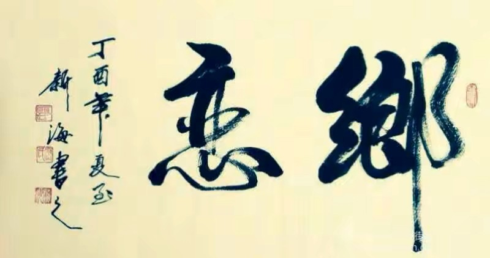
廖新海生前书法作品之一。
哥，你一路走好
二〇二一年七月二日
参与写作：何岫峰
早上，我正准备发朋友圈的时候，不经意间点开了《何家》微信群。当我看到侄儿何劲松发表的一条微信时，顿时惊得目瞪口呆，盯着这条信息足足三分钟之久……
从六月二十五日起到七月一日，连续七天，我每天在朋友圈发表一篇系列文章《一晃十年》，以庆祝孙子垚垚的十周岁生日。
当我将目光从侄儿那条微信上收转时，我当即决定：今天不发朋友圈了，剩下几篇《一晃十年》，至少得过了七天以后再续发。
侄儿那条信息是：
"请原谅我在黎明之前打扰诸位长辈及兄弟姊妹：总大爷刚刚因心脏问题过世，何氏家族痛失擎天一柱。"
"总大爷"是我的堂兄何祥胜。

身着海军衫的总大爷。
我们何家在老武穴街也算得上一个较为有名的旺族。
我们家的辈分四个字一组，从我父亲辈始是"钟祥毓秀"四辈。
上世纪八十年代以前，钟字辈一个个先后离世。他们兄弟四人留下了十五个祥字辈的男丁。从上世纪八十年代起，我们武穴西菜园墩儿上的何氏家族，有了十五个祥字辈的家庭。
如今，毓字辈子侄十七人，大都成家立业了。
现在有了三胎政策，预计秀字辈男丁超过毓字辈是大概率事件了。
祥胜是我们十五个祥字辈兄弟中最年长的一个，也是至今为止我们何家存世的最年长者。
子侄辈们当面称他为大爷。因为他们有四个大爷，所以私下里称呼他"总大爷"。
祥字辈兄弟，有称呼他大哥的，有称呼他大相的，有称呼他大牛哥的（他小时混名大牛）。
唯独我——何家第二个降生的祥字辈男丁，从儿时起一直称他为哥。
哥呵！十几天前，我们在一起聊天，你是那么的精气神十足。你思维敏捷，声音宏亮，怎么说走就走了？

上世纪七十年代前，武穴西菜园墩儿上何氏家族老屋（两间瓦屋两间茅屋）素描图。
年少时，哥是一个"伢儿头"。
他带着我和弟弟们在砖头瓦片中找蟋蟀，在灌木杂草间捉螳螂，在树干枝叶上捕蝉蛹……
他带着我和弟弟们一起躲猛儿（捉迷藏）、弹弹子、拍烟炮、打香棍，玩七月卵子代、八月卵子代……

（图片取自网络。）
他常常邀来十多个同学和朋友，在家中演戏：血战金沙滩，八大锤大闹朱仙镇，孙悟空大闹天宫……翻跟斗，打百溜（侧身翻），刀枪棍棒十八般兵器齐上阵，一玩大半天。

（图片取自网络。）
哥个子不高，却肌肉发达，孔武有力。他练气功，习武术，至今我还记得他在家里打沙袋的情形……

也许受到了京剧的熏陶，他从小有保家卫国的情结，初中毕业后参了军，成为南海舰队的海军战士。
数年后，又作主让弟弟祥刚入了伍，成为东海舰队的一名海军战士。
又数年，他亲自把大孙子送到南海舰队，接了他的班。
直到现在，哥的女儿还在南海舰队随军。
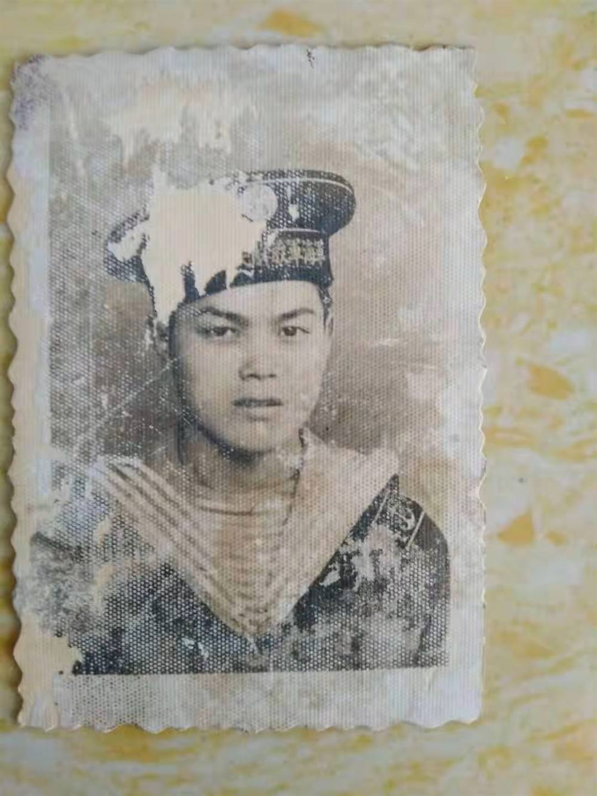

海军战士的哥。
复员后，哥曾在广济县工商局工作。
记得那时候工商局在老居仁街街上，当时是否叫工商局已经不记得了。可以肯定的是，那时候工商管理还处于雏形，工作人员很少。所以在老武穴街的大街小巷经常能碰到哥，感觉他是一个管事儿的人，心里挺羡慕。
在此期间，哥做成了一件轰动一时又令他悔恨终生的大事。他乔装打扮，打入了"投机倒把"的集团内部，转战数省，成功地抓获了犯罪分子——一个挂獭（武穴方言，意为捕獭）的农民吴兴荒。为此，他受到了表扬和嘉奖。但是哥后来觉得十分后悔：挂獭这样的事，是农民为了生活在农闲时的一种正常的副业活动，根本没有触犯任何法律法规（那时獭还不是受保护的野生动物）。哥觉得害人坐牢，悔恨终生。
哥呵！这事怪不得你，千万不要把这个包袱背到天国去！当时的社会背景就是不准农民从事与集体生产无关的一切活动：自留地种的菜、自家养的鸡生的蛋拿到街上卖，就要遭到围堵追缴，何况挂獭！
哥作为工作队员，还被单位派往农村驻队，在乡下待了不少日子。就在十几天前，我和哥在一起吃饭，他还谈起这段经历。
我记得他下乡的地方是四望公社，我们有一个姑姑家在田百海垸。
在那以前，我只知道有一个姑姑在田百海，却从来没去过，也没见过姑姑。哥告诉我姑姑家如何如何穷，告诉我农村怎么怎么落后，言谈间充满了对农民的深切同情，叹息他对改变农村落后面貌的无可奈何……
哥在大蒋大队张才垸驻队。他在农民家吃饭，初时是稀粥沾酱，不久就是米饭加鸡蛋——鸡蛋可是奢侈食品呵！他和农民们同吃同住同劳动，几个月只回家一次，很快就与农民们打成了一片。他尽其所能，倾全力帮助农民们。
哥和张才垸的农民结下了深厚的友谊。直到近年，他们还像亲戚一样互相往来，像挚友一样相互帮忙。有一次祥刚家里修房子，一大早垸里来了十多个年轻力壮的小伙子，漂漂亮亮地完工后才摸黑回家。
哥怀有浓厚的农民情结。
哥当过学徒，起五更睡半夜，吃了很多苦。
哥是一个平凡的人，可他也风光过。
他很少谈论"风光"的日子。
半个月前，端午节那天中午，我和华儿（我老伴）、哥和嫂（我称她木林姐），还有和哥嫂同住在戴家小区的同学老易，一起吃饭。
闲谈中，我们扯到了哥的最后一个工作单位——武穴市港务局。
谈到他的工作单位，哥很兴奋。七十六岁的哥，记忆力很好，思维尚健，中气十足。
我们为一个熟悉的某某人从政府部门调往港务局而扼腕叹息，我们剖析港务局衰落的种种原因，我们预判港务局的未来……
哥很健谈，谈了很多，却只字未提港务局曾经的辉煌，也没"吹嘘"他曾经的风光。
哥在港务局那段风光的日子，我却记忆犹新，历历在目。
二十世纪有段相当长的时间，水上航运统领着整个交通运输行业。
武穴港是长江沿线十大深水良港之一。从武汉至安庆长达433公里的水域，只有武穴港能停靠5000吨级的客货轮，其运力在湖北省内仅次于武汉港。
所以，武穴港务局是整个武穴最吃香的单位，哥在港务局谋得最吃香的职位。

（照片取自网络。）
停靠武穴港的，有来往于重庆、上海间的四层楼的"江"字号（文革中改称"东方红"号）大客轮，有穿梭于汉口、九江段的汉九班小客轮。
每天来自蕲黄广三县和江西瑞昌县的旅客，最多达三千人。
那时候，船票是最紧俏的票证。一票难求呵！
"江"字号客轮有像旅馆一样分一、二、三、四等等级的舱房，有统铺一样的五等舱。
三等舱以上的只有大人物能享用。一般凡夫走卒，花几个小时能排队挤出一身汗、买到一张五等舱，就磕头谢恩了。没买上五等舱的，能买到一张站票也不错了。
更多的讲究体面的人，想买一张四等舱，就得靠内部分配或走后门了。
哥是手握四等舱和少量二、三等舱船票的港务局极少数工作人员。
记得在河边港务局的办公地方，有一排小房间，哥在其中一间办公。
傍晚时分，办公的地方黑压压地挤满了来去匆匆的人，有人兴高采烈，有人垂头丧气。
我曾经无数次地挤进办公区。等你好不容易挨近哥办公的那间时，敲门却无人应答：有时是他不在班上，有时是他根本不知是谁在敲门而不应，只得满身大汗、垂头丧气了。
当然，很多次他辨出了我的声音，半打开门，拿出一张或两张四等舱船票塞到我的手上，立马"哐"的一声关上了门。
有时候，很多人提前挤进办公区，引颈以望。哥来了，便紧随其后；等到哥开了房门，却被哐啷一声关在了门外。你捶破了门，喊破了嗓子，哥自巍然不动。
这时候，那怕你是政府官员也好，你是他的亲兄弟也罢，只得垂头丧气，悻悻然钻出人群，打道回府了……
世事无常！在那个特定的时期、特定的场合，哥就是一个武穴街的风云人物！
哥是武穴西菜园墩儿上何氏家族毓字辈的总大爷、祥字辈的总大哥，是我们全族当之无愧的族长！
改革开放以后，尘封已久的家族活动重新兴盛起来。
在此之前，我只知道我们武穴西菜园墩儿上这支何氏家族，老家是广济县两路公社的（现为武穴市梅川镇吴畈村）何天佑垸，却没有一个人去过。
查家谱得知，我父亲辈上面的四个辈分是"咸庆深仁"，而庆字辈高祖从梅川落户武穴，传至祥字辈才四代人。所以，何天佑垸就是我们武穴这支家族的根，就是我们的垸。
在家族活动兴盛之风的推动下，我们武穴西菜园墩儿上何氏分支迅猛地活动起来。
哥是活动的牵头者、主持人。
哥亲自或指派兄弟，带领全家族老老少少多次回何天佑垸寻根问祖，参加祭祠活动和宗亲红白喜事。
哥带领几个弟弟和垸里叔伯，一道去花桥镇大屋何垸参加何氏大宗谱续修活动。
哥亲自或指派兄弟，去四望镇何应朝垸、刊江办事处细何垸等同宗处，参加各种宗亲活动。
所有这些活动，得到了何氏宗亲的好评，扩大了武穴何氏家族的声望。
哥呵！半个月前我们在吃饭时谈到，你和何天佑垸闹了点小矛盾，要我下次回武穴陪你去垸里和解。我刚回北京，你怎么就匆匆地走了？
树大支分。西菜园墩儿上的何氏四家老屋早已不复存在，从四家老屋分出的何氏兄弟姊妹，分居于武穴的二十多处，有的还常住在外地。
在老屋的旧础上，有几家兄弟盖了新楼，常住在那儿。还有几家兄弟的寓所，就在老屋稍北的龙潭宾馆附近。
多年来，哥常住在离老屋数里外的戴家小区。他退休后的一项重要活动，是几乎每天都要到常住在老屋新楼的祥文家里坐坐。
初时步行，后来专门买了辆旧三轮。我这次回武穴，木林姐指着停在楼下的一辆崭新的电动车告诉我：你看，那是你哥背着我刚买的！"这样也好，又方便又安全！你这个哥呀，一天不到何家（老屋处），心里就不踏实！"
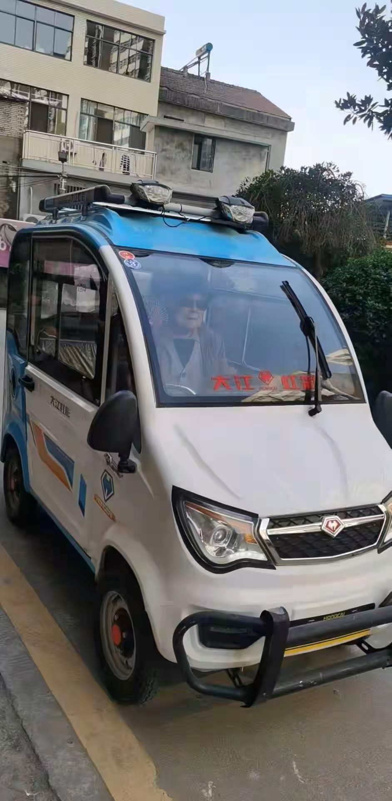
祥文楼下开了间皮鞋修理店，是一个聚会的好去处。
哥心里时刻惦念着兄弟姊妹们。皮鞋店是何氏兄弟聚会的场所，哥在那儿时不时会碰到一两个兄弟或子侄。皮鞋店是何氏家长里短的汇聚处，哥从祥文口中，可以听到其它兄弟姊妹的近况。
二十年来，我常住在北京，每年只回老家一两次。像哥一样，一到武穴，第一站就是祥文的皮鞋店。像哥一样，我的心里也时刻装着何氏兄弟姊妹们。
其实，埋藏在我心底的是：那儿是我的老屋，是我的根呵！
我生于斯长于斯三十年，哥生于斯长于斯至少六十年！
电动车满载着哥的老屋情结，来往奔驰于戴家小区和祥文的皮鞋店之间。哥呵，你匆匆忙忙地走了，昨天夜里，可曾回老屋看看？
随着年纪一年年增长，人越来越怀旧，越来越珍惜兄弟之情。
每每从北京回家，无论待的时间长短，我都会尽可能地到兄弟们家里坐坐、看看，拉拉家常；或者约个地方会会面，打个电话问问好。
祥胜是哥，凤娥是姐，这两家无论如何我都得去。
我也深深地感觉到，哥和木林姐愈来愈深沉的兄弟之情。
每当我敲开戴家小区C栋十四楼哥的房门时，总感到满面笑容的木林姐有一种喜出望外的神情……
清明节的前几天，哥都会到皮鞋店问祥文：祥荣回来了吗？还没回？不回了？
清明节过后，我于四月十三日晚上回到武穴的家。第二天一大早，就在家旁边的老汉口碰到了哥和木林姐。我告诉他们，因为有点事，所以回来晚了。哥说：回来了就好，回了就好！我还生怕你不回呢！
过两天，哥和木林姐来家里，坐了好久。临走说要接我吃饭。我老实地告诉他们：过几天华儿也回武穴，等她回了一起去吧。
哥又不断地打听华儿的消息。五月二日，华儿回来的第三天，哥如愿以偿。
吃饭的时候，哥说了件事，对我触动很大。
哥说：某年某日他得了急病，是我开车将他送到武汉的，由于去得及时，否则后果不堪设想……听了他的话，我矢口否认，连连说：没有的事，没有这事，你记错了人吧？我那会开车呵！
哥急了：我冤枉你？你当厂长时不是有辆上海轿吗？你不会开车，司机不会吗？当时你还哄我："快上车快上车，我也急着去武汉办事呢！"
我真的想不起来有这件事，默然地说：就算有这件事，有什么了不起的？
哥说：你记不记得是你的事，这件事一直在我的心底，一辈子也忘不了！
咚的一下，我的心震颤了！原来这两年哥一而再、再而三地请我和华儿吃饭，不光是浓浓的兄弟之情，还夹杂着别样的情愫？
哥是个性情中人，恩怨分明。
哥呵，你肯定预知自己的大限将至，怕不当着我的面说出这事，就会遗憾终身！
哥，你放心地走吧！我领下你这份情。
从
二〇一〇年起，我们祥字辈先后有五个兄弟离世。
哥和我谈起来，显得情绪低落。他说：我们何家莫不是要衰落了？我说不会吧？我们这辈都六七十多了，走是正常的。你看何野、何胖、何松那几个侄儿，喝起酒来哪一个不是一斤多？一代胜一代呵！
其实，我和他一样，这几年心里一直在打鼓。那离去的五位兄弟，大都刚过六十岁，基本上每隔两年走一个，且全部死于癌症，无一幸免。有时候我偷偷猜测：下一个会轮到谁？
说实在话，猜这个猜那个，我却从未猜到哥的身上。
虽然看起来他面容衰老，可是他却精气神十足：坐如钟，行如风，声音宏亮，思维敏捷。他又没有什么大的基础性疾病，为人又豁达大度，我估摸他能活到九十岁！
六月十六日下午，哥又将我和华儿叫到他家里。木林姐为我俩下了两碗她亲自包的热气腾腾的饺子，我们俩人津津有味地吃着，他们俩人津津有味地看着（他们一般不吃晚饭）……
临走时，哥坚持要将我俩送到楼下，被我俩婉拒。
我们互致再见！
谁知道，这竟是永别！呜呼，痛哉！
世事无常，祸福在天。仅仅十几天，哥竟不辞而别！
哥，你一路走好！
在天国的大门口，祥德、祥福、祥刚、祥盛、祥利，正在恭迎你！
哥，你一路走好！
关欣
二〇二三年五月二十四日上午，老伴陪我去北医三院看病。

由于事先没挂上号，儿子托人临时加号。十一点左右，朋友将我和老伴带到门诊部五楼皮肤科八诊室门口，示意我俩进去。
给我看病的是一个中年男大夫。他仔细地察看了我全身的皮肤，详尽地询问了起病时间和过往诊治过程。
"住院吧！"他以没商量的口气说。
"能治好吗？"老伴弱弱地问。
"能！给你打一种针！"他很肯定地回答老伴。
"不相信我？"估计观察到我俩脸上有问号，他略带调侃的口气反问一句，继而十分肯定地说：放心吧！保证能治好。
办好入院相关手续后，他面带笑容地告诉我们：医院床位紧张，你们在家等着，会有人打电话给你；接到电话，带着生活用品来吧！
临走时，我望了一眼他胸前挂的一个小牌子上有一个"关"字，于是告辞道：谢谢你，关大夫！
他说：好！我叫关欣！
回家的路上，老伴说：感觉这医生跟别的医生不同，给人一种别样的感觉……
名字也好记——关心！我说。
趁着在家等候的时机，回顾一下病情和治疗过程。
二月初，腰腹部一圈和手臂部皮肤突发瘙痒，出现斑疹。一周后去北京一家著名的大医院门诊，口服药丸、外涂药膏近两月，病情非但无好转，反而继续扩大瘙痒部位。后在家乡湖北省武穴市看名老中医，亦不见效。回京后继续自购北京那家医院开的口服药丸和外涂药膏治疗，终不见效。突于五月中下旬，全身布满大大小小暗红色的斑疹，奇痒难熬，以致遍体抓痕、血迹斑斑。至二十四日，连眼睛都肿得老高，全家人发慌了，于是急匆匆去了北医三院。
五月二十六日上午，入住内科一病区六楼皮肤科病房，三病室八病床。
病房宽敞明亮，旮旮旯旯一尘不染。无奈瘙痒难挨，抓痕遍体，更有邻床小男孩整日呼号，少有间歇，以致于彻夜难眠。
入院几天，每日不断的各种检查检验，吃药输液，抹药护肤，病情毫无好转。
寄希望于关欣说给打的那种针——据说有奇效，天天盼望，天天问医生什么时候打针，回答我的都是"过两天"。
病房里的医生护士都是女生。记不清是哪一天，我坐在病床上，眼望病房的走廊发呆，忽见一男"大白褂"匆匆从房门口走过。我立马下床冲出病房，一眨眼间，只见走廊的尽头，那男"大白褂"被几个学生模样的青年围着。我默默地站在圈外，只听那些青年争先恐后地叫着"关老师"，提出各种各样的学术问题。我一眼就认出了男"大白褂"就是我日日夜夜想见的关心大夫。
过了二三十分钟，等到提问的学生们散尽，关大夫抢先问候："你好呵！还记得我吗？""我是你收入住院的。"我连忙回答他。他的眼睛很毒，一眼就看出了我的焦虑和期盼，一边点头一边笑眯眯地说：记得记得，不要焦急，慢慢来，会好起来的，过两天就给你打针！旋即轻轻地拍拍我的肩膀，说了句"过几天来看你"，就匆匆地走进了医生办公室。

见过关心，心内稍安。
莫非关心是我命中贵人？
过了一两天，五月三十日开始病情逆转。剧烈的瘙痒渐次变弱，一些部位的暗红色皮肤渐次变淡，红色的斑疹渐次消退。
六月一日上午，护士长喊我到护士办公室，亲自在我的腹部皮下注射了两针听说有奇效的生物制剂——达必妥。
病房的查房制度是：每天上午九时左右，由主治医生带着管床医生一应人等到床位查询病人，进而给出治疗方案；每星期四则由科室主任或高级别的大夫领队。
令我大出意外的是，当天下午两点多钟，我躺在床上迷糊时被人拍醒。当我翻身坐起时，关心大夫领着一群美女医生站在我的床位边。管床史医生告诉我：关大夫查房来了。
见我病情好转，关大夫露出会心的笑容，建议我的管床大夫换掉外用涂抹药膏。
傍晚，我在医院内转悠一会儿，回到病房，一眼就看到我的床头柜上码着十盒新的外用药膏。
这十盒新药，是否意味着关心大夫直接干预我的治疗？
转过身，我直奔医生办公室。果不其然，史医生告诉我：新药是关大夫指示开的。
打过达必妥生物制剂后，病情继续好转中。可是好景不长，四日左右身上又开始瘙痒起来，前几天消退的斑疹处又长出了新的斑疹。随着时间的推移，瘙痒越来越剧烈，红疹越来越多。医生们安慰我：别着急，慢慢来，这病就这样，容易反复。治疗方案一如先前。
过了几天，关大夫来到我的病房，见我焦躁不安的样子，笑眯眯地说：别耽心，我来想办法，给你增加一种口服药。随后，他竟以商量的口吻跟我说：看来那个达必妥也不一定见效，价格又贵，一个疗程十六周下来得三万元钱，时间长，花钱多，我们就不继续打了，你看如何？见我沉默良久，他转换话题：那好吧，看看新加的口服药的效果再说吧！临走时像朋友一样地叮嘱我：该吃吃，该喝喝，别想那么多，办法一定会有的。
傍晚，护士给我送药时，多了两颗沙利度胺片。
服用沙利度胺片后，病情有所好转，管我的两位美女医生也松了口气。可是，十二日早晨查房时，又看见我满身的红疹和垂头丧气的样子，她们面面相觑，显得无可奈何。
下午，她俩跟在关心的后面，第二次来到我的病床。
对我病情的反复，关心显得很淡定。
当着我的面，三位大夫商量下一步的治疗方案。
我使劲地张开耳朵，全神贯注地听着他们的谈话。
他们决定：用一种新药替换沙利度胺；按照流程规定的时间，十四日给我注射第三针生物制剂达必妥。
很快，护士给我送来了四颗软胶囊，嘱咐我一会儿吞服。
药对方，一口汤。
第二天清早醒来，像往常一样，第一件事就是看看手脚和身上的皮肤有什么变化。
令我大吃一惊的是：那些可恶的红疹竟然少了许多！一些部位的皮肤竟然恢复了原色！我欣喜若狂，顾不得洗漱，翻身下床，大踏步走出病房，兴冲冲地往走廊尽头走去，被迎面而来的护士长拦住。护士长不让出病房，我向她要了一支笔、一张纸——我想告诉关心大夫：昨晚吃了环孢素，一夜之间，红疹竟吓跑了一半！我想让他第一时间知道环孢素的功效，分享我的喜悦！
很遗憾，既没见到关大夫，也没办法将字条送到他的手上！
我等着，等着关大夫来到我的病床！
第二天，关心领着管我的两个美女大夫，兴冲冲来到我的病床，开口就说：不错不错，有效果有效果！兴奋之情溢于言表。很显然，他已得知我的病情变化。
查看我的身体后，他指示史医生：换回原用的外涂药膏卤米松，继续服用环孢素。
当两位女医师问及明天要不要打生物制剂达必妥时，他果断地说：不用打了！
离开病床时，关心递给我一副只有我能理解的眼神：我说有办法吧？
病情迅速好转，难熬的瘙痒一去不复返，大片大片的红疹以肉眼能见的速度消退。
令我始料不及的是，十五日上午，管床史医生通知我：明天出院。
第二天上午，我出院了！
说来也怪，当我离开病房时竟然有些不舍之情；当我走出医院时，感觉有件想做又无法做到的事：和关欣医生打个招呼。
我出院了。谢谢你，关欣大夫！
过了些时，当我去医院门诊部皮肤科复诊时，其时病已经基本痊愈了。见到关欣大夫，更多的是想表达感激之情，却又无法表达。
我请求和他拍张照、交个朋友，他欣然一一应允。


文后的话
关欣是我见到的最好的大夫。
他坦荡荡的言谈，给病人树立信心；
他不摆医师的架式，使病人感到平等；
他商量的口吻，让你忘记自己是个病人。
他不但关心病人的痛痒，还考虑尽量减轻病人的经济负担。
他及时调整治疗方案，不但反映他刻苦的钻研精神，还表达了他为病人负责的医者之心。
让我这个起病数月的重度特应性皮炎，在短短不到一个月时间内基本痊愈，不说是个奇迹，也是一个了不起的案例。这只要从被誉为中重度特应性皮炎特效药的达必妥，一个疗程需要十六周时间，就可以看出端倪。
我推测，关欣大夫的医术是不错的。
我想，如果有无数个像关欣一样的大夫，老百姓们的看病难、看病贵、病难治的问题，将会得到很大的改善。
兰杰，我想你
十月二十四日晚八点至十点，《欢乐老三届》群为群内几位曾经插队到广济县（今武穴市）兰杰乡的知青，举办了一场《兰杰，我想你》的专题聊天会。会上，知青们动情地追忆了他们在兰杰的知青岁月，抒发了感人的知青情怀，表达了他们对第二故乡的深厚的怀念之情。
插队到兰庄。
夜半除积雪，
平明种嫩秧。
偷闲石滚举，
取乐笑声扬。
别梦五十载，
相邀探故乡。
二〇一七年十月二十四日


飞往南京
东航2812航班比原定时间晚点了二十多分钟，中午十二时零七分才徐徐起飞。我们坐的是头等舱——这也是我平生头一次坐头等舱。
头等舱是进飞机时的一个小舱，就是坐的位子比普通舱要宽松一些。我和老太太、媳妇、小孙子四人坐在第一排。也不知是不是有意安排的，我们三张票坐四个位子——一张位子没有人来坐。
头等舱从头到尾都受到优待。上午十点多，我们到机场，在头等舱的专门窗口很快办理了登机手续。一个导引带着我们很快就办完了托运手续，在两个被托运的箱子上，工作人员给它们罩上了一个塑料外罩，以示对它们的特别优待。登机还有个把小时，我们到头等舱候机室休息。候机室内有坐椅供你休息，有电脑让你上网，有非常卫生的洗手间，还有配套齐全的自助餐系统。更有甚者，一个一米见方的儿童游乐园让我们的小子美美地乐了一把。
下午一点四十几分，飞机降落南京机场。何毓嵩和一个姓卢的同事在候机室等着我们。小卢自驾车送我们去旅馆——金一村丁山店。金一村是南京本地连锁店，丁山店位于鼓楼区虎踞北路55号。
傍晚，我们一行六人逛了逛夫子庙。
二〇一一年五月二十一日
自驾车去宏村
今天，我们要自驾车去安徽黟县。
上午十时许，我们从金一村出发，沿着宁芜高速公路向安徽进发，途经马鞍山市、芜湖市、铜陵市，改走合铜黄高速驶向黟县。
中午时分下起了小雨，我们在太平湖农家乐吃过午饭，开车在太平湖遛了半个小时。太平湖风光——
小卢是本地人，我们今天的目的地就是小卢的家——黟县卢村。小卢是司机，也是向导。车子驶离太平湖就没再走合铜黄高速，走的是过去的老路，和高速比起来就是一条山间小道。此时小卢精神大振，欲在山间小道一显身手，就由她当起了司机。
小路弯弯曲曲，时而爬坡，时而下坡，窗外的景物也大不同前。一个个徽式村庄渐行渐多，渐行渐近。
下午四点刚过，车子停靠在一处树有旅游宣传牌的山坡边。
我们冒雨钻出车厢，尽情呼吸清新的空气。站在山坡前，美丽的卢村尽收眼底。转个弯，下个坡，十几分钟车子直接开进了小卢的家。
小卢的弟弟和爸爸、妈妈精心准备了一大桌饭菜为我们接风，还把他两个姐姐和姐夫叫来作陪。屋里屋外，饭前饭后，充满了原汁原味的农家气息。
卢村，也叫雉山，是黟县县北的老村庄，始建于唐末，距今已有一千多年的历史。不少几百年前的古民居至今保存完好，尤以志诚堂木雕楼为甚。该楼被誉为"木雕艺术的民间殿堂""徽州木雕第一楼"，所以卢村也是黟县旅游的重要景点。
说起旅游，却让小卢的家人们唏嘘不已。世界文化遗产、驰名中外的国家五A级旅游景点宏村，与卢村不过数里之遥，地理位置如出一辙。宏村始建于南宋，比卢村要晚得多。一样的徽式古村落，一样出过不少达官贵人、豪商巨贾，同为旅游的景点却有天壤之别：两村村民来源于旅游的收入相差数十倍乃至成百上千倍。单是每年年终由村里直接发给村民（有户口的男女老少人人一样）的钱，卢村每人40元，而宏村则有1400元之多。
是先人福荫不同？是后人保护不力？是……？
有一条，卢村保存完好的古建筑确是不如宏村。小卢家的房子就是前些年改建的新式楼房。为了增加收入，吸引更多的游客，卢村在努力。听小卢家人说，下半年，他家的房子将由村里出资改建为徽式民居。
晚上八点多，我们乘车去宏村住宿，数分钟就到了。
二〇一一年五月二十二日
木坑竹海
此次旅游主要是看古村落，所以打算在宏村住几天。宏村，就留着慢慢欣赏吧！
吃过早饭，我们开车去木坑竹海。木坑是距宏村东北五公里处的一个自然村，其四周方圆数十里山峦全都长着各种各样的竹子，"木坑竹海"由此得名。说话间就到了景点的大门。
一脚踏进山门，映入我们眼帘的就是漫山遍野的翠竹。看，风起时竟是绿波荡漾！
我们沿着一条山间小道拾级而上，穿行在竹海中。好多呵！这是我有生以来第一次见到这么多竹子。
有成年老竹，有今年的新竹，有的新竹身上的笋箨还没脱完呢！
笋箨引起了老妻极浓厚的兴趣！从前，我们穿的鞋子都是手工做的，老妻可谓做鞋的高手，我们家老老少少的鞋子都是她亲手做的，有时还替亲朋好友做呢。这笋箨，我们管它叫“药子”（方言音yo2，据考正字为箬，就是唐诗《渔歌子·西塞山前白鹭飞》中“青箬笠，绿蓑衣，斜风细雨不须归”的“箬”，后面为方便暂记为药）。这药子可是做鞋底的必不可少的材料，从前都是乡下人拿到街上来卖的。前几年，她在武穴还买了两把存放在家里，没能用上，后来带到北京来当宝贝似的又藏了几年（兴许是当作一种回忆藏着），直至去年才被来京小住的弟媳给偷偷地扔了。她知道后竟叹息不已。
看到遍地的药子，老妻动手捡了起来，本想带些回去。可是看看这张，瞧瞧那张，都不完好；有些没脱下来的又都在竹梢够不上，只好悻悻作罢。要是早来些时日，一定会大有斩获。
竹海中，发现一株成倒U字型的，欣喜地拍了下来。
石级一个挨着一个，山坡过一个又一个，约摸走了个把小时，一行人个个累得气喘吁吁、脚酸体软。
继续上？原路返回？正当大家踌躇不决的时候，一抬头，前头显现一段平坦的小道——原来我们已经走到顶了。
顺着小路走过百十步，就看见不远处的山下丛林中有一个村庄。一个小伙子告诉我们，那就是木坑村。放眼望去，那木坑村确实美丽动人，怪不得电影《降龙伏虎》在这儿取景呢！
小伙子就是木坑村的人，他盛情邀请我们到他家去做客。我们本是要去木坑村的，欣然接受了他的邀请，坐上了他的小汽车。小车子在仅仅能让它通过的山路上缓缓下行，转瞬间便到了它的家。
小伙子的家是我见过的最好最美的农家乐。木坑村本是依山势建在山洼里的，且不说小伙子的家雄踞村子的最高点，更难得的是他家门前竟有偌大的一块平地，以致于可以停车、喂马，还建了一个宽敞的凉棚。
坐在凉棚里，边喝茶边赏景，"心旷神怡"这个词儿会不由自主地浮现在你的脑海里，让你久久不想起身！
中午，我们在他家吃了一顿真正的山珍野味。土鸡是他爸当场在林间山地抓捕的；野猪、山麂由我们验明正身后开刀的——显而易见，两盘不知名的野菜绝非人工栽植的；而用来煨汤的一条两尺多长的蛇，是小伙子从笼子里抓出来的。
尤为可喜的是，这顿中饭让我们得到了一个意外的收获。就要满周岁的小孙子，出生以来身上就没断过湿疹，特别是嘴角两边常常是一大块红红的疹子，很让人闹心，抹膏药、喝中药就是不见效，三百多天几乎没好过一天！这不，还在呢！我们让小孙子美美地喝了一顿蛇汤，还给他喝水的杯子里满满地装了一杯。神呵！晚上，小子身上的、耳边的、嘴角的湿疹，统统被蛇吓跑了！
告别木坑村，小卢驾车，一路上游览了奇墅湖、梓路寺、黟县东方红水库（其实就是奇墅湖的另一头）、黟县县城、西递村外景后返回卢村。
在卢村，小卢带我们参观了古民居（一般旅游者进村要买39元的门票），观赏了"徽州木雕第一楼"——志诚堂。
二〇一一年五月二十三日
宏村和西递
二〇〇〇年，宏村和黟县另一个村子西递一起，作为我国惟二的古村落类型被列入世界遗产名录。有专家把它与意大利的威尼斯、荷兰的阿姆斯特丹相提并论，被誉为"中国画里的乡村"。从此声名大噪，成为驰名中外的旅游景区。高达104元一张的门票和蜂拥而入的游客（2010年十一黄金周接待游客76443人次），令人咋舌。
早饭后，我们爷孙五人绕着村子足足转了一个上午，边走边看，边看边欣赏，只觉得遍村皆景色，处处可写生。
宏村背枕雷岗山，西临羊栈河、濉溪河交汇处，东傍东溪和东山，可谓依山傍水而建。依山傍水是我国村庄的普遍规律，而宏村不啻是依山傍水——而是以山为屏障，以河为护卫，充分利用河水和地下水，通过浩大的人工工程，建成了防洪、防涝、防火、防卫、民用和灌溉为一体的水循环系统。而一个个人工工程又和一幢幢古朴的民居、一株株婆娑的古树以及其它的种种景物交相辉映、相互成趣，形成一处处耐人寻味的美景，实在是我国村庄的绝无仅有，不愧是"中国画里的乡村"。
村西的河流是一道天然的屏障，河上建筑的四座大桥便利行人的出入。如今，为应对日益增多的外来人流，只有一座桥开放，没有购票的游客和车辆是进不了村的。
宏村通过人工水圳把西溪河水和雷岗山地下水引入村里，又通过支圳将水引到各家各户门前，有的甚至引入庭院内；还在有洞窟沼泉的地方挖
掘池塘。位于村中央的池塘呈半月形，称之月沼；位于村南的呈大弓形，号之南湖。两池塘均与水圳相连，长年蓄积满池活水。而南湖有出水道穿过湖堤下的暗道，将水引入田园之后复又流入西溪。
宏村最美的地方当数月沼和南湖了。
月沼常年活水满池，塘面似镜。蓝天、白云倒影池中，与四周保存完好的古民居层楼叠院交相辉映。
南湖之美，尽在画中。古今赞美南湖的人不计其数，清朝浙江名人吴锡麟将其比之于杭州西湖。其实南湖不过一口池塘而已，远非西湖可比。然而南湖的确很美——它美的不只是湖光山色、古树石桥，而是在它的北面有一个美丽的宏村。美的是它是宏村的不可分割的一部分。
池塘的北岸，一幢幢错落有致的古色古香的民居，才使其有了别处的湖光山色、古树石桥不可比的美感，成为闻名中外的南湖，使之"堪比浙之西湖"。
宏村始建于南宋，成型于明永乐、万历年间，至今仍完好地保存有一百多幢明清古民居。
我们逐一参观了承志堂、三立堂、乐贤堂、树人堂等古宅和汪氏宗祠。
下午，我们开车去西递村。
西递始建于北宋皇佑年间，发展于明朝景泰中叶，鼎盛于清朝初期，至今已近九百六十余年的历史，素有"桃花源里人家"之称。二〇〇〇年和宏村一起被写入世界文化遗产名录，现为国家五A级旅游风景区。
西递坐落于黄山南麓，南距宏村十九公里。车行约半小时，大老远地就看见了高耸的西递牌坊。
西递牌坊立于村口，可说是一座标志性的建筑，所有到西递来的人，第一眼看到的就应该是它了。
据说，西递原有十三座牌坊，文革中被革去了十二座，现存的这一座当时被涂上黄泥、写上了红色的标语，才躲过一劫得以保存至今。它身上的红色标语的痕迹还在呢！
一进村，就有一位二十多岁的姑娘给我们一家当导游。姑娘是本村人，据她介绍，西递村的旅游是由她们村的旅游公司经营的，而宏村则是由外地的公司经营的，因而西递村的旅游要比宏村开发得早得多，村民的旅游收入也比宏村的要多得多。这姑娘当导游每月收入近两千元，她家里还经营农家乐，游览结束的时候特地把我们带到她家里参观了一番，希望我们下次来西递到她家里做客。
西递的古民居和宏村的大同小异。
有几处别的事物给我留下较深的印象。全国重点文物的标示特别显眼。保留下来的西递石牌。旧时的风扇。安装在室内的米机械。
二〇一一年五月二十四日
吴家台——日照四日游
二〇一四年八月二十七日
二十三日清晨五点半左右，我们乘坐的K2604次列车抵达日照站。出站后旋即打的，半小时后到达吴家台，入住异域风尚家园。
所谓"家园"，就是一家农家乐院子。主人夫妇五十岁上下，黑黑的，农民的样子，很热情地接待了我们。院子坐北朝南，占地有两百多平米。楼上楼下两层，由于客房建在南北两侧，所以大厅宽敞、空灵、亮堂。听主人介绍，共有十四间客房，标准间十三间，套房一间。我们被安排在唯一的这间套房。
标记为一号房的套房位于底层北侧东首，房门正对院子的大门。进门是一个客厅：很小，一张一平方多的长条桌，四张靠背椅，剩下的就是过道，别无它物。内有两间客房，设施虽然简陋，却不失干净整洁。一间特小，仅有小双人床一张，一台老式电视机低卧在和它面积一样大小的桌子上，剩下的空间就够两个人打转了，一间小小的卫生间。另一间稍大，一张大床旁挨着一张小床，孙子和他妈妈就住了这一间。
房间虽小，租金不菲：我们住两天就花了五百四十元，平时一天二百二十元，周末另加一百元。听说五一、十一黄金周还多呢！
吴家台约摸有四五百户人家，一半以上都是像"异域风尚家园"这样的农家乐院子。
吴家台是一个自然村，一个改造升级了的自然村。
全
村坐北朝南，西傍宽阔的市区公路，东临浩瀚的黄海。
整个村子成井字型结构，东西成行，南北成列。由西向东，行被称之为街，共十街；自北向南，列被称之为排，共二十排。"异域风尚家园"的坐标是第六街西十六排七号。
绝大部分排与排之间的通道不宽，站在通道上向东或向西望去，满眼尽是各家各户的霓虹灯招牌，大都被冠以某某或某某某渔家——我们住的那家算是一个特类。我曾问及主人，招牌是不是他儿子取的，主人神秘地笑了笑，说招牌是他自己定的——这名字为他家在网上招揽游客可能带来过好运吧！
每年的暑假、五一、十一黄金周是这儿的旅游旺季。主人告诉我，家家户户的农家乐都住满客人，一间标准间客房租金要二百甚至二百二十元！
街相对排之间的通道要宽得多，实则是相邻的人家将相对的一面山墙开成门面而成为合面街。街则五花八门，开着各种各样为旅游服务的店铺，其中最显眼的就是海鲜批发。站在街上往南或往北都能看到"海鲜批发"或"批发海鲜"的横幅招牌。在那些批发店内，鱼虾、贝类琳琅满目，应有尽有。不少住在农家乐的游客在这儿买海鲜，让农家乐加工，既能尝到便宜而美味的海鲜，又能享受"家"的温馨。
在吴家台村里，最热闹的地方是被称之为"路"的地方。村子里有三条排与排之间的通道，它们被称之为"路"：一路、二路、三路。
一路是吴家台的精华。
一路就是第十四排和十五排之间的通道，宽有十一二米，是其他通道的两三倍，长度也是其他通道的两倍，足有一公里长，是一条繁华的街道。
一路西起村西与市区公路相切，路口也就是村口，筑有钢筋的牌楼，上书：吴家台民俗旅游度假村欢迎您。路边有一个站名为吴家台的公交车站，向南可直达市区。一路由西向东经过十条街和五百米长的大小排档直达黄海。
"路"两旁，挨家挨户，非店即铺。有农家乐院子，也有批发海鲜的门面；有宽敞的露天海鲜大排档，也有出售贝壳玩意儿的小货摊。特别是一些令人驻足、引人围观的地方，还真有点"民俗"的味道。
那些热气腾腾的地方，是老妇在烫制一张张像纸一样的山东大饼；那些沙沙作响的地方，是村姑在炒制一片片新鲜的茶叶；一对夫妇使劲地对拉一米多长的白糖，他们在制作姜糖；老叟和小子轮流抡起大木槌砸向台桌面，那是他们在做棒槌山药糖。
令我最感兴趣的是杀蚌取珠——这是我平生很少见到的新鲜事。每次行走在路上，都能看到一处围满了人的地方。挤身一看，只见那儿一字儿摆着三只塑料大盆，盆内放着数十只差不多大小的活鲜鲜的海蚌，盆的一侧放着两张桌子，上面摆着制作珍珠项链的大小工具。一个彪形大汉手拿尖刀，撬开蚌壳，用手从蚌体内取出一颗又一颗新鲜珍珠，洗净了递给桌旁的瘦弱工匠。经过打磨、钻孔、穿线，一串珍珠项链就试戴在了买蚌者的颈上。每个蚌壳要价100元，珍珠能取多少，质量好坏，那就如赌石一样！
"路"上车水马龙，行人如织。有住店的，有尝鲜的，有购物的，有闲逛的；更多的是光着上身的男人、穿着泳装的姑娘、拎着衣包的老太、肩套游泳圈的小儿——他们往东是去大海，往西是从大海归来。
有大海才有一路，一路是为大海而修！
走过第十街，路两旁一家连着一家几乎全是大大小小的海鲜排档，约行五百米，就是一望无边的黄海了！
和路西相呼应，路东与一条滨海公路相接，路口既村口，树一高大的广告牌，上书：吴家台民俗旅游度假村欢迎您。路边有一个站名为森林公园的公交车起点站，沿着大海向南直达市区。
在一路和滨海路交叉口的北边，坐落着日照市的顶级旅游景点——日照滨海森林公园。听"家园"的老板说，从前那儿是他们吴家台的地盘。
走近大海，一幅人与自然水乳交融的画面跃然呈现在你的面前。
沙滩上，有人慢悠悠地来回踱步，那是在玩味脚板下的细润；有人直挺挺地躺在遮阳伞下，那是在享受肩背上的舒坦；老奶奶埋头苦干，她在寻蚌抓蟹；小孙子汗流满面，他在挖沙筑城；大姑娘阳光浴，遍身只剩泳装；小伙子沙埋身，见首不见尾。
海水中，有人戏水，有人畅游，有人乘艇，有人划船。
沙滩上不怕羞涩，海水中忘却烦恼！
我突发联想：这片海滩犹似且胜似一个游人如潮的广场。不经意间，发现海滩上立着一块红色的牌子，场如其名——金沙滩欢乐广场。
正是这块牌子改变了我们祖孙四人下海戏水的初衷。按照我们先前获知的"金沙滩"的信息，如果这儿就是金沙滩，那么它的主体部分肯定被圈进了北面一墙之隔的森林公园。于是我们决意到公园去游览。
二十五日下午，我们来到公园。和北京的奥林匹克森林公园不同，这是一个收费的森林公园。孙子免费，妈妈全票，爷爷奶奶半价，我们花了一百二十元才进了公园。
日照滨海森林公园是全国最早建立的森林公园之一，在山东省十大旅游新景点中排名榜首，国家AAAA级风景区。公园依山傍海，林海相依，占地面积12000亩，森林覆盖率75.8%。"森林旅游区"和"海滨娱乐区"是两个主要的功能区。
我们租乘一辆四座自行车在林间穿行，遇见了一笼鸡鸭，吓跑了一只黄鼠狼，着实让小孙子兴奋了一把！
上午，我们在日照植物园兜了一个大圈子。那儿清新的空气、幽静的环境，和森林公园有异曲同工之妙。所以，我们没在林子里多呆，一个小时后便弃车步行，直奔海滨。
正如我们所料，这儿的海滩就是金沙滩！
据说，金沙滩全长7000米，被有关专家誉为"中国沿海仅存的未被污染的黄金海岸"。网上有人说，丁肇中先生曾经说过金沙滩比夏威夷还好。
的确，这儿的沙滩宽阔平缓，沙质细润柔软。这让我想起享有"天下第一滩"称号的广西北海银滩。滩阔缓平，沙质细润，两者不相上下；所不同的是，一个金光闪闪，一个银光熠熠！
孙子急不可耐地脱掉衣裤，换上泳装，拉着妈妈和奶奶趟过沙滩，奔向大海。
由于要照看衣物，我和奶奶轮流下海，轮流在遮阳伞下休息。
痛快淋漓地玩了三个多小时，我们才依依不舍地离开金沙滩。
在森林公园公交站，乘坐旅游大巴，沿着滨海公路驶向市区。坐在车上，往左看，是一望无边的黄海，时不时有一个海滨浴场或旅游景点晃过；往右望，一个又一个的"民俗村"显现在眼前。被我看清楚招牌的有任家台、李家台、张家台。查网得知，它们和吴家台同属日照市山海天旅游度假区。都叫民俗旅游度假村，比较起来，吴家台紧傍森林公园，沙滩比那几个"台"要好；而那几个"台"却紧傍滨海公路，离海滩更近。若非时间有限，还真想到那几个"台"去游览一番！
为了回程的方便，傍晚，我们入住火车站旁边的速8酒店。
在日照，也有和"不到长城非好汉"语义相近的俗语，那就是"旅游到日照必到万平口"。万平口原是一个地名，取万船平安归来之意。那儿有一条我国北方地区最大的泻湖。相传，出海的渔船遭遇暴风骤雨，都能经过大海和泻湖的通道口顺利驶入泻湖而毫发无损，这个"口子"就被称之为"万平口"。
如今，万平口被冠以"万平口海滨风景区"新名。它位于新城区，是日照市最大的景区，也是日照"海滨生态市、东方太阳城"的重要标志。它不再是万船相聚，而是万人同乐。（据说，到万平口旅游的人年平均320万，最高的一天达15万。）
万平口海滨风景区北接山海天旅游度假区，距吴家台约一个半小时的车程。
风景区有5000米长的海岸线。这儿的海滩和吴家台的海滩一样美丽，只是沙粒稍粗一些，人更多一些。
我和奶奶在海滩上欣赏海景，孙子则和他妈妈劈波斩浪，乘双人快艇驶入远海。快艇归来时，孙子蹦蹦跳跳地冲向我们，一边跑一边狂呼："真过瘾呀！真够刺激耶！"
我问他怕不怕。"不怕！"稍顿又纠正："呵，呵不对，不对！有点儿怕。"
"怕什么，在这儿，做什么事也不要怕！"我调侃他。
"为什么呀？爷爷？"我反问他。
"你忘了？这儿叫什么？"
孙子脱口而出：
万平口！
由万平口向南沿着海滨步行，不到三十分钟就到了日照灯塔风景区。
灯塔风景区因灯塔闻名。由前总理李鹏题名的日照灯塔高高地矗立在灯塔广场上，为近海和进出日照港的船舶提供导航服务。游人纷纷在这儿拍照留念。和先前到过的吴家台几处海滩不同，这儿的海滩成礁石状地貌。大自然鬼斧神工，使得礁石各具大小和形状。游人在它的上面选拾各种贝类和海藻，在它的下面抠捉小蟹。
和大人们的兴趣不同，小孙子刚到灯塔广场就被一种不知名的车子吸引，嚷嚷着非要坐一会儿。殊不知这"一会儿"就是个把小时，直至不小心从车上摔了下来，嗷嗷地哭着才作罢。
二十五日晚上，在速8酒店大堂小坐看报。一则关于日照土特产的报导，让我懊悔不已，且产生了再去吴家台的念头。
让我吃惊的是，日照的土特产竟然是茶叶！我酷爱喝茶，却对"南茶北引"或"南茶北移"浑然不知。旅游长见识：原来我国在上世纪六十年代有一项"南茶北引"的工程，1966年在山东省日照县试验成功，从此开启了我国北方种茶的历史。经过不懈的努力，日照绿茶成为了日照市主要的土特产、山东省的土特产、江北第一茶。被第三届中国农业博览会认定为国家级名牌产品，齐名于碧螺春等历史名茶，属于国家地理标志保护产品。
前两天，在吴家台"一路"上看到的现场炒茶，原以为是做秀"民俗"，早知道这些，我一定会在茶座上坐下，一边品茶，一边看炒茶，多买些带回北京。
第二天，也就是旅程的最后一天，儿媳妇提议去王家皂海滨浴场游泳，我欣然同意。王家皂也是一个民俗村，且离吴家台不远。
刚到王家皂，小孙子迫不及待地拉着妈妈直赴海滩。待她们祖孙三人下海后，我将她们的衣物打包在一起背在肩上，"偷偷"进了村。
王家皂的游人明显少于吴家台，我无心看景，只找有茶叶的店铺。有几家的门前也摆着炒锅，却都在近一两天停止了炒茶。我想去吴家台，店主人告诉我，现在是淡季了，吴家台可能也不炒了。
退而求其次，在一家较大的茶叶店买了带有日照特产标志的两包成茶，悻悻地返回海边。
"日出初光先照"——在短短的旅程中，我们特意参观了日照市城市规划展览馆，得以了解日照的由来和历史。可惜的是当时手机没了电，只好借副画以存念。
我相信，明天的"东方太阳城"——日照，会像今天的展览馆一样气势磅礴、辉煌灿烂！
春天来了

春天来了，春天真的来了，来得好快呀！前几天，在这一簇迎春花前，想拍一张开放的花朵。左看看，右望望，挑来挑去，只挑出三朵开得"像样"的。两三天的时间，竟全簇盛开！
二〇一七年三月
第一次观看足球比赛
人一生有多少个"第一次"可为之纪念？现场观看一场大型比赛算不算？比如，中甲足球！
孙子课外培训的"梦飞翔"足球俱乐部，昨天赠送我们几张球赛入场券：中国足协甲级联赛，北京人和对上海申鑫，时间下午三点半，地点丰台体育中心体育场。
下午三点钟，我们提前半小时到达体育中心。进门时遭遇了平生第一次最严格的安检。安检人员坚拒我们带去的一个保温水杯和一个玻璃茶杯入场。当时我和孙子的奶奶极不理解。儿子解释说：之所以这么严格，是怕这些瓶瓶罐罐在情绪激动的时刻被当作"武器"投掷进球场。后来在球场门口参赛方之一北京人和摆的卖水摊得到证实。我为孙子垚垚和他的同
学毛毛买两瓶矿泉水，摊主硬是将圆柱体型的塑料瓶里的水，倒进圆台型的纸杯里卖给我。究其原因：纸杯再有力也扔不进球场内。真是活到老学到老，又长见识啦！

平生第一次现场看足球，也不辨这丰台球场属大属小。满场一观，不是想象中的座无虚席——有一大半位置空着呢！不过球迷们的情绪还是蛮高涨的！
比赛没有达成北京人和球迷们三比一的愿望，却以二比二平局收官。莫非这场赛是"友谊第一，比赛第二"？你看双方一来一往，你踢进一球，我罚进一分；你罚进一球，我踢进一分，皆大欢喜！
俗话说：内行看门道，外行看热闹。对于我这个门外汉来说，实在也看不出什么名堂。不过，我连热闹也没看够——孙子垚垚坐不住，一会儿要喝水，一会儿要拉尿，进进出出我都得全程陪护。
中场休息后，干脆就没有再回球场！凭着他强大的社交能力，居然带着北京市三帆中学附小一年级的同学毛毛、弋弋、新新，在球场一墙之隔的小操场上，和两位北京人和的场外球员踢起来了！
我是这场球赛的唯一看客，全神贯注地从头看到尾。它是一场双方完全不对称的非正式比赛。虽然它带有戏闹性，也许它才是真正有希望的比赛！
也许，中国足球的春天就落在毛毛们的身上！
二〇一七年三月
我和孙子参加儿子的校庆

四月三十日是清华大学106周年校庆日。按照学校的惯例，每年校庆邀请毕业十周年、二十周年、三十周年等"十的整数倍"毕业生返校参加校庆活动。
儿子一九九七年毕业，所以被邀参加此次校庆。一大早，他就穿戴整齐、兴高采烈地去清华了。临走时对我说："过会儿您和垚垚（我的孙子）他们都去吧！""是你的校庆，又不是我们的校庆，我们去不合适吧？""合适合适，学校欢迎大家带家属一起参加呢！"
十点过后，我和垚垚、垚垚的妈妈、叔叔和婶婶，一起开车去清华。

一进校门，一股欢迎的气氛扑面而来：高悬于道路上方的，张贴于宿舍一角的，所到之处，到处都洋溢着八个大字——热烈欢迎校友回家。相信儿子刚才进校时心里一定暖洋洋的，就连我们也分享到了回家的欢乐！
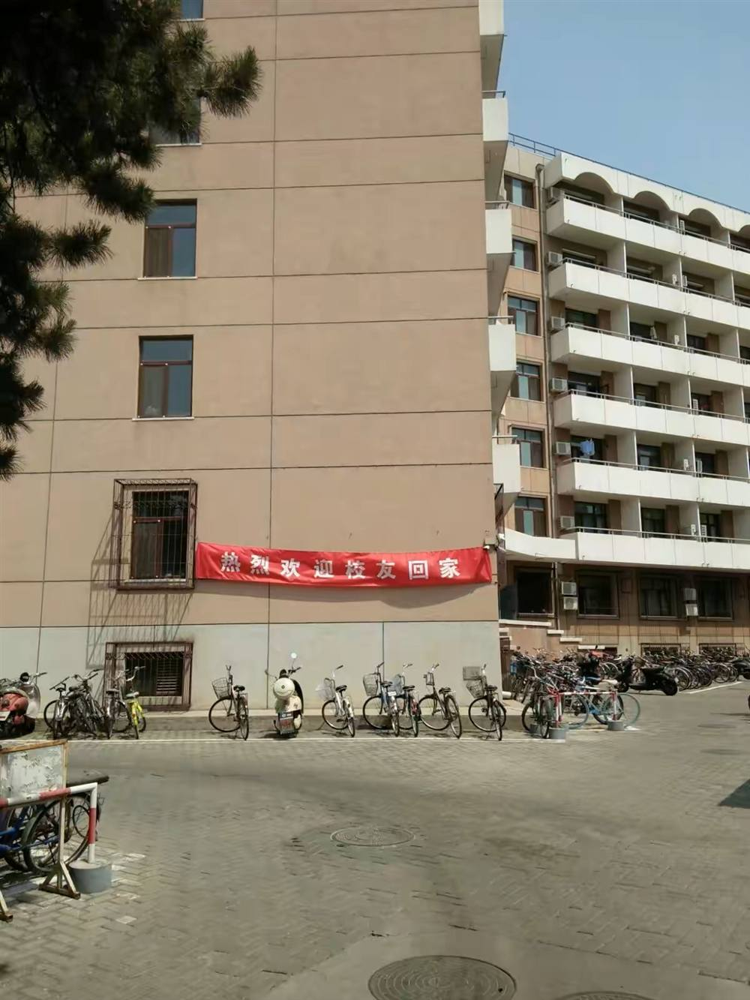


汽车在校园里绕了一个大圈，找了个位置停了下来。"爸爸的学校真大呀，你们都骑车吧！"垚垚拖着他的滑板车，指着路边停放着的各款共享单车对我说。大家响应他的号召，各自找了一辆单车骑了起来。我们边骑，边停，边看……


我们准备进近春园参观。走近门口，一位小伙子和颜悦色地问我："您老是几十周年的？"我说是来找儿子的，随后一行人就退了出来。"爸
爸，您刚才要说是四十周年的，他们可能会信的。"垚垚的婶子开玩笑地说。"不是，要说五十周年的。"垚垚妈妈说。她俩这玩笑一开，倒真的触动了我的思绪："是呀，如果不是发生了文化大革命，说不定我今天真的被邀请和垚垚爸爸一起来参加校庆呢！""真的呀，爷爷？"垚垚也来了劲。"我是一九六六年的高中毕业生，本来我们毕业考试都考过了，正在准备高考，当时我们的志愿表都填好了。我的第一志愿填的就是清华大学！要不是发生了文化大革命……"听到这里，儿媳们都一阵沉默。垚垚却逼问我："没考取呀，爷爷？是不是没考取呀？"小家伙见我面有不悦，竟安慰我说："爷爷，没考取就没考取，我爸不是替你考取了吗？"
是呀，儿子圆了我的大学梦，圆了我的清华梦！

说着说着，我们走到了校医院。望着医院，我想起了二十五年前的往事：一九九二年九月初，我和老伴送儿子到清华大学入学，当时儿子还是
一个刚满十六岁的孩子。我们俩陪伴他到这个医院来做体检复查。而和我们结伴而来的老乡，因为担心她的儿子复查有问题，恳求我们陪伴她几天，以便等她儿子的体检结果。那几天，我们住在学校招待所，每天都陪着那位提心吊胆的母亲到医院来打探消息。
这曾经熟悉的医院，外貌似乎没发生多大的变化；儿子却一晃眼过了不惑之年！望着望着，我陷入了沉思。
"爷爷，干嘛看这么长时间呀，走呵！"

我们继续骑骑、停停、看看。
公园般的美景让我们驻足、流连。


儿童乐园里，垚垚玩单杠、荡秋千，久久不肯离开。


我们继续骑骑、停停、看看，累了，就歇会儿。

儿子在艺术博物馆参加活动，我们去那儿参观。在博物馆，我们爷孙三人拍照留念。

我们受邀，参加九七届毕业生校庆宴会。

二〇一七年五月
欢呼十九大
正值十九大召开之际，我和老伴相约于十月十九日上午来到天安门广场，以感受大会的氛围。有感而发。
欢呼十九大
民盼九州同。
广场游人涌，
城楼彩饰红。
中央谋略远，
领袖巨篇宏。
跨进新时代，
长征在路中。


二〇一七年十月
深秋的土城
节过寒露，时值深秋。正午时分，土城公园内，秋阳杲杲，暖气融融。人行道上游人如织（注一），小月河边钓者成排（注二）。
草本葱茏，鲜花怒放。海棠硕果累累——分明深秋；垂柳枝叶青青，胜似仲春！
是秋？似春？
惜乎平仄难辨，律韵不通，借以老干体记之。
注一：公园附近数十家写字楼的职员，中午集聚公园里散步。
注二：小月河贯穿公园，传为元朝大都都城护城河。
土城深秋
园囿午时忙。
银杏枝还绿，
垂杨叶未黄。
渔翁提钓竿，
游客解衣裳。
漫步行人道，
浑身暖气扬。

秋高云雾淡。

园囿午时忙。

银杏枝还绿。（原句"喇叭花正红"，不合平仄。）

垂杨叶未黄。
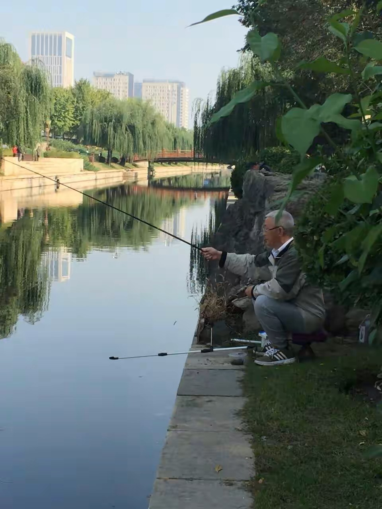
渔翁提钓竿。

游客解衣裳。

漫步行人道。
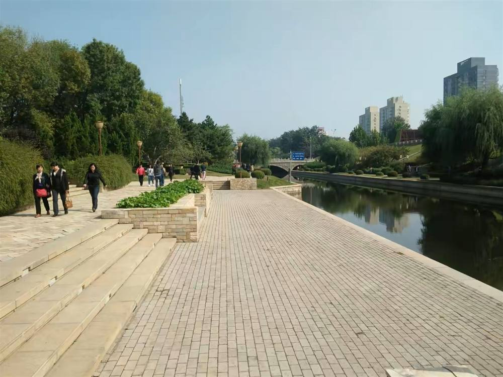
浑身暖气扬。
二〇一七年十月
大觉寺
晚秋的十一月二日，天气晴朗，风和日丽。我和老伴、儿子有幸游览了大觉寺。
大觉寺位于京郊阳台山。林木葱葱，山石嶙嶙，环境优雅。
寺庙历史悠久，人文厚重。始建于辽代，经明清两朝复建、改建，颇具规模。
大觉寺是一座皇家寺庙，气势恢宏。庙内多处匾额、碑刻的铭文，出自乾隆、雍正、慈禧之手，还留下了不少皇帝与大觉寺的传说和故事。
相传乾隆还是雍亲王的时候，曾在大觉寺修行。一次做功课时打盹入睡，竟然笑出声来。烧火的小和尚迦陵用寺庙法器戒尺打醒了弘历。此后，雍亲王溜回了皇宫。
弘历登基不久，不但没记恨小和尚，还下诏册封迦陵为大觉寺住持。
庙里最高处修有一座宝塔，传说是迦陵住持的墓塔。而闻名京城的一棵被称为"王"的玉兰树，就是迦陵亲手栽培的。
玉兰树，和包括一棵千年的银杏树在内的一百多株古树，是大觉寺闻名于世的一大主因。人们来此，仲春赏玉兰，深秋看落叶，乃人生一大趣事耳！
大觉寺
堂前殿内客摩肩。
乾隆御笔题额匾，
僧侣文牒掌教鞭。
皎皎玉兰年过百，
巍巍银杏岁逾千。
莫言寺院烟香断，
遐迩闻名享宇间。
二〇一七年十一月十一日

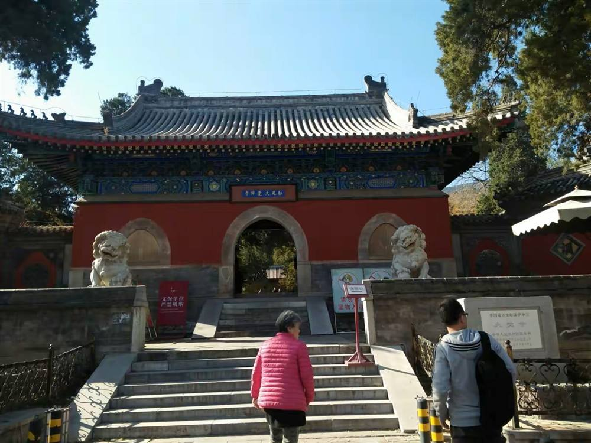


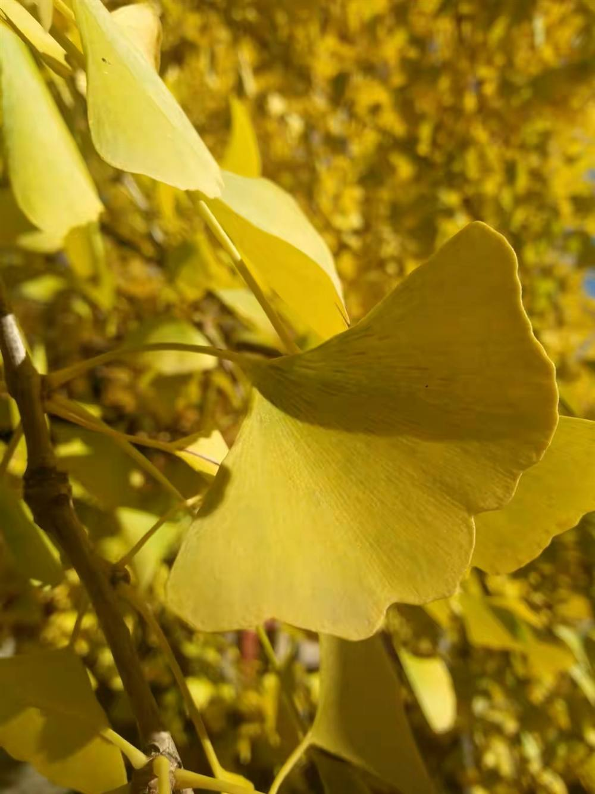
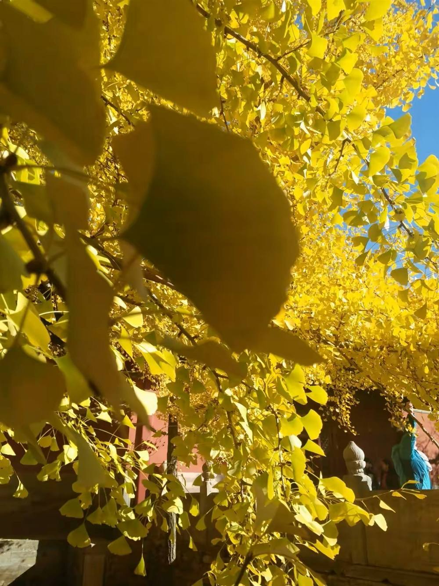

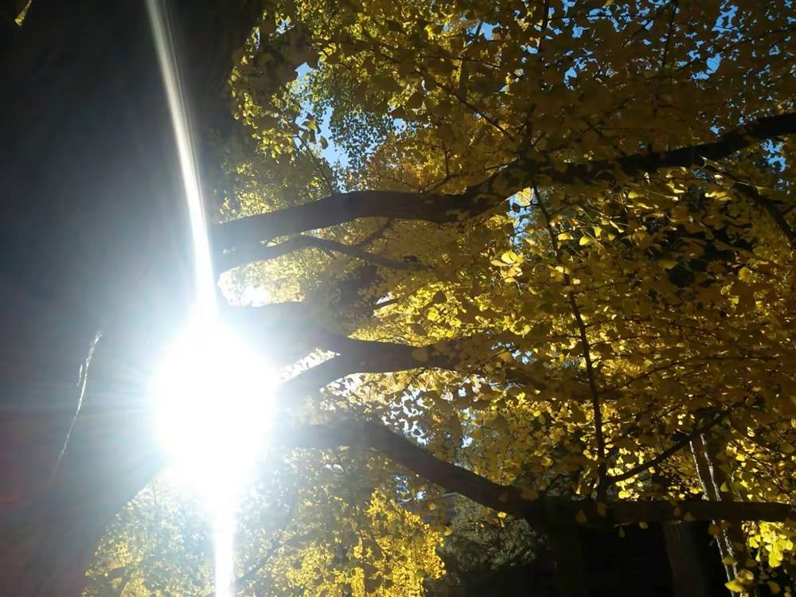

金光穿洞

节临冬至，时过申牌。
晴空万里，阳光明媚。

万岁山上，楼台亭阁金光闪闪；昆明湖畔，官道幽径人流匆匆。
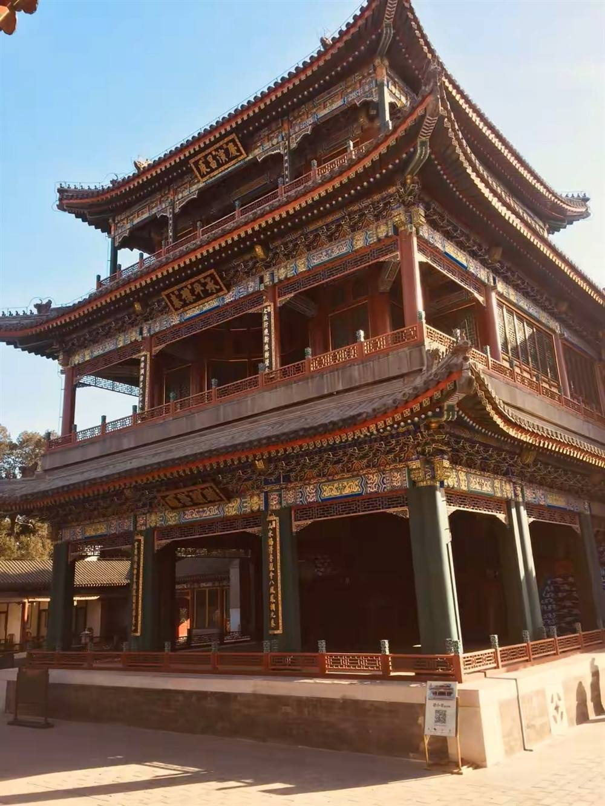


饱览了晚清金银玉器、盆景古玩，出得文昌院，一路紧步疾走，直奔十七孔桥——为的是一睹传说中的"金光穿洞"。
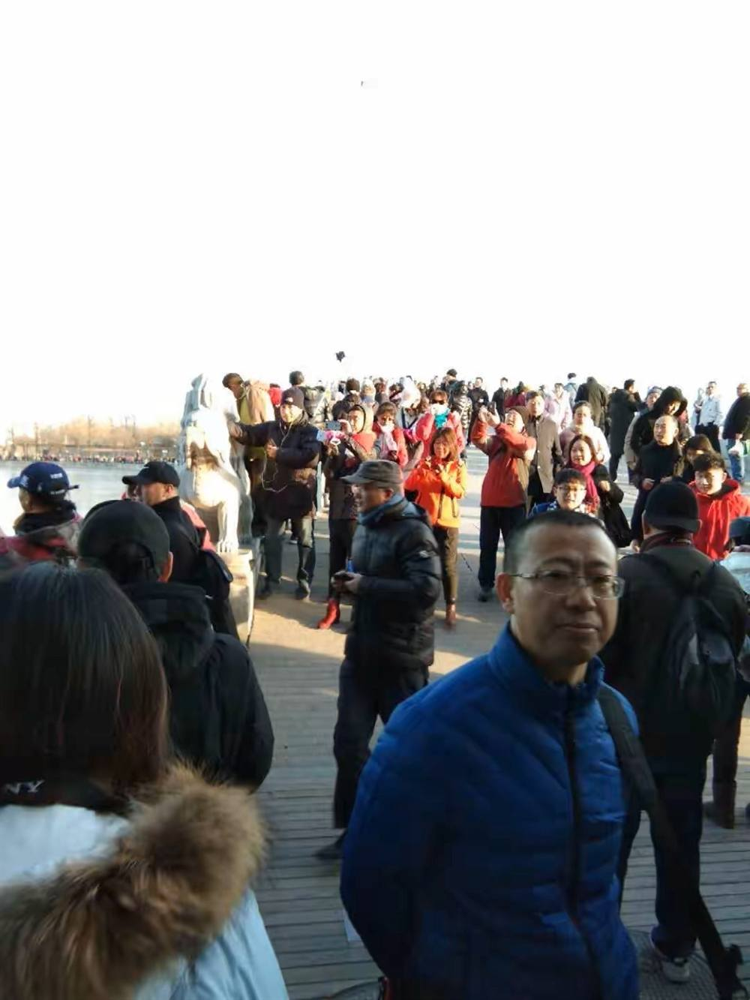
一路上，各色游人手握手机，举着自拍杆，扛着三脚架，赶考似的朝着同一个目标。只见十七孔桥上人们摩肩接踵，热闹非凡。

而更多的人挤在桥西头南湖岛的湖滨路上，看上去水泄不通，足有千人以上。
毋庸置疑，那儿肯定是观赏、拍摄"金光穿洞"的最佳点。
据说，金光穿洞奇观一般是在下午四时左右出现，持续时间只有二十分钟左右，所以人们会提前来到湖滨，以抢占最佳位置。
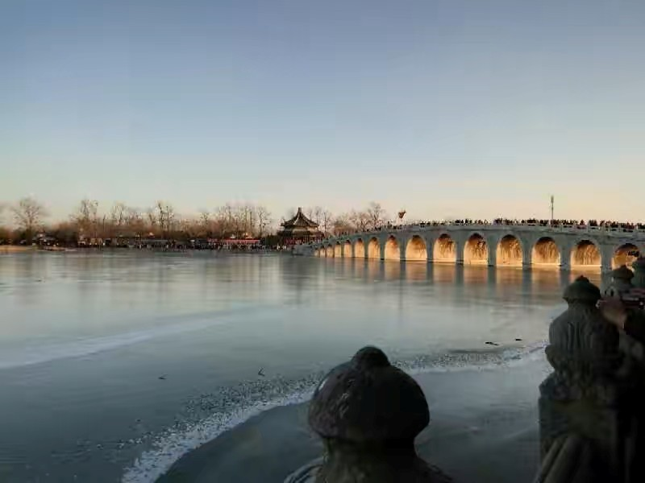
我三步并着两步，迅急穿过桥面，右拐挤入湖滨路。
湖滨路上里三层、外三层，人们朝向十七孔桥高举着手机、相机，脚下却似打桩了似的，后来者休想往前半步（靠近栏杆）。而一旁的工作人员不停地催促："往前走，往前走！"
往前走，挤走了几十米，一如先前无法挤近栏杆，试着举起手机，均被面前的人挡住视线。
只听人群中不时有人说：还有半小时，还有二十分钟……
湖滨路左侧的南湖岛沿上也站满了人。虽然地势高了许多，却被各种树木的枝条挡住了一部分视线。我爬上爬下，试着找了几个位置，不是站不稳，就是看不清——都是先到者弃之不用的位置。
天无绝人之路。正在心急如焚的时候，面前有人从里层的栏杆处往外挤出，瞅准机会，她的位置转瞬被我取代。

这一刻，金光穿洞留在了我的手机里。
金光穿洞是自然现象。
金光穿洞是先人们留给我们的千古奇观。
十七孔桥建于乾隆年间，距今两百八十多年。它是连接昆明湖东岸和南湖岛的一座长150米、有十七个大小不同桥洞的石拱桥。建桥的先人精巧设计，让每年冬至前后几天下午四时（酉时正）左右的阳光，正好穿过桥洞，照射在洞壁上，而形成如金一样的光芒。
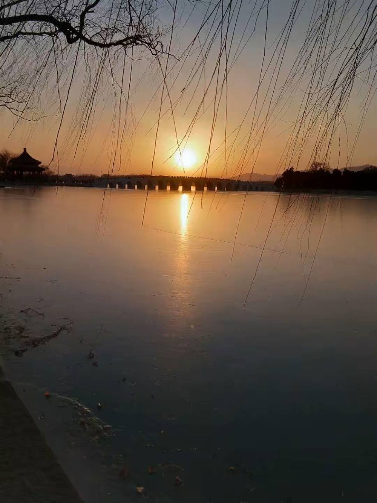
离开南湖岛、返回昆明湖东岸的时候，放眼西方，夕阳沐浴的十七孔桥一片金光。

桥上的石狮，似乎在说：欢迎下次再来！
二〇一八年十二月十六日
栅栏快递
一场疫情炙烤着每一个人的神经，改变了所有人的正常生活，还催生了许多奇巧古怪的新鲜事。
疫情的发展和防控的加强，网购成为人们的主要购物方式。
可是封锁后，快递小哥不准进入小区。于是，在被封的小区西门外和小区栅栏间，形成了一块"发货地"。
从清晨至傍晚，几乎京城的各家快递公司的车辆云集于此。套一句往日说惯了的话：栅栏外形成了一道风景线。
不是一道美丽的风景线，而是一处繁忙的风景区。
大部分快递车小巧玲珑，赤橙黄绿青蓝紫各色俱全。
韵达、速达、能达，你挨我挤；圆通、中通、国通，彼走此来。
速尔、跨越、闪送，京东、顺丰、百世。
偶尔大块头德邦停靠外围，时有小电动盒马挤进圈内。
宅急送来去匆忙，食享会早晚不歇。
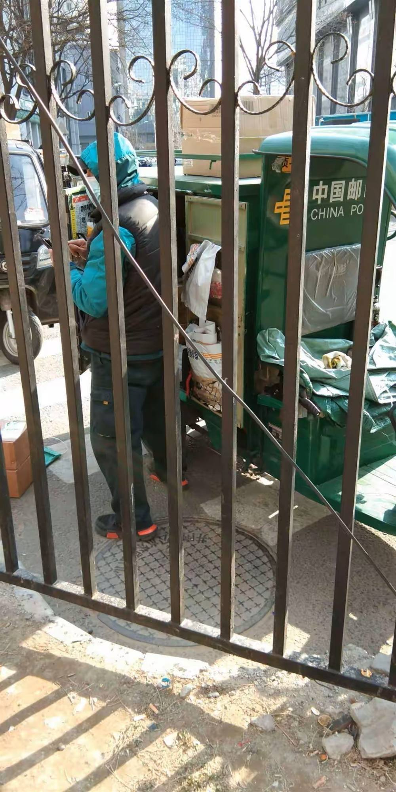

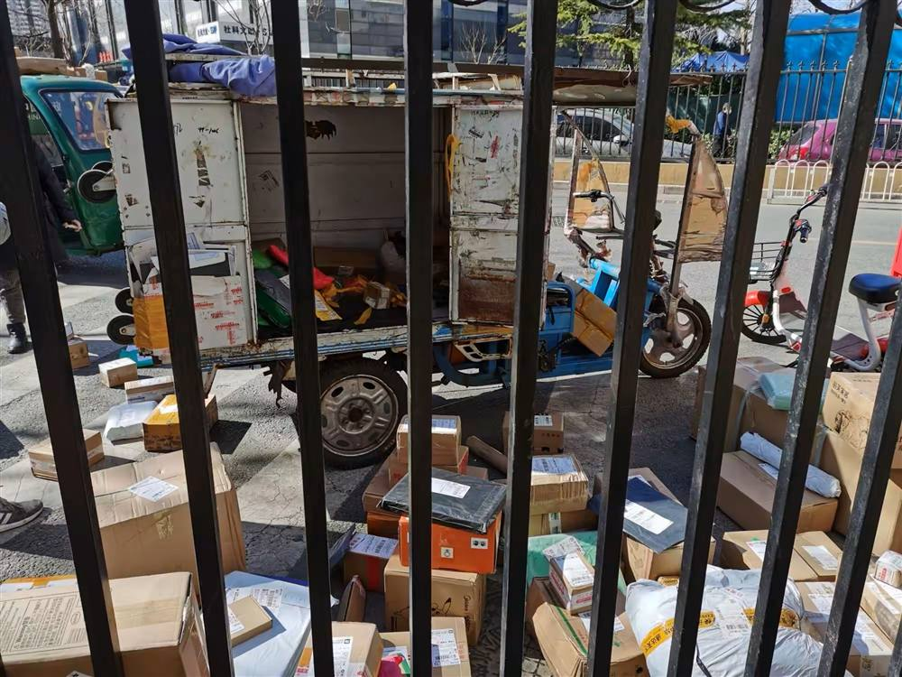


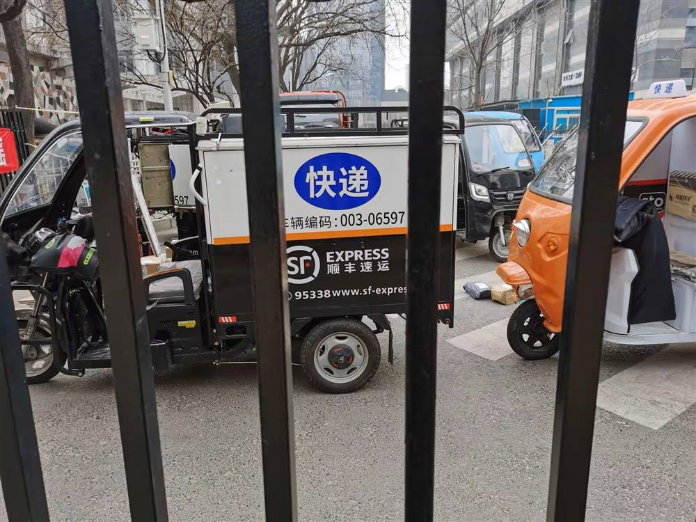


一天到晚去栅栏取货的人络绎不绝。
来到栅栏边，取货人朝着栅栏外五颜六色的快递车提高嗓门地喊："京东！"或"百世！"又或"顺丰！"栅栏外有人应答了，取货人则报出楼房号、房号。一会儿，快递小哥找到货后传给取货人。
小而薄的东西从两根栅栏的缝隙间插入，大而厚的物件则要从栅栏尖尖的顶上递接。
若是又大又厚又重的物件，体弱力小的人只得望货生叹，返回家换人。
更有奇者，栅栏内外竟有反向操作！若留心观察，不时会发现有人从栅栏内将货物递出栅栏外。不知是什么意思？

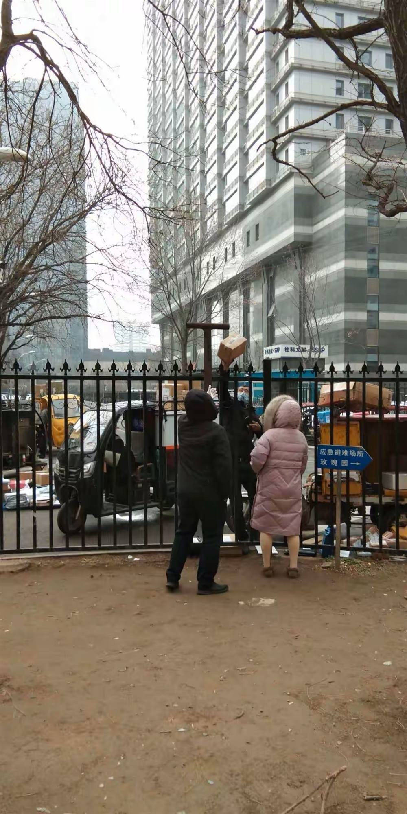
旬月来，吾一家老少七口窝在屋里，吃喝拉撒等一应物货，皆从空中购得。儿媳老伴轻点手指，跑断了我的双腿！一会儿包裹，一会儿生鲜！
一天少则三五次，多则十来趟，忙得不亦乐乎！出则九五罩口鼻，入则七五喷脚手！有时候刚取下口罩，换上拖鞋，电话又来了！
呜呼，幸甚！此乃人生一际遇也。顺口溜以记之。
栅栏快递
（新韵）
隔空购物应时兴。
小区封锁物流塞，
开放栅栏车辆通。
家韵达能达百世，
宅急送闪送京东。
才从邮政取包裹，
又叫顺丰递蒜葱。
二〇二〇年三月十日
避雨

下午五点多去玫瑰园锻炼，走走步，做做操，活动活动身体。正准备慢跑的时候，雨来了。
公园里游客不多，约摸二三十人，不约而同匆匆走到有一块顶盖的平台上。大概六点半左右，雨势加大，耳畔哗哗地响个不停，颗颗水珠溅在平台上，几乎形成水雾。风把雨推向平台中心，二十多人不得不收缩聚集在一起——有老人，有小孩……
三四十分钟后，雨渐停。躲雨的男女老少，"各人回家，扁担开花"。
即兴顺口溜以记之：
避雨
平台点点珠。
雨来留游客，
相聚冇亲疏。
二〇二四年七月一日晚
25号楼活动室开张啦
二〇二四年十二月二十一日上午十时，小区活动室开张啦！

上午十时前，25号楼物业经理闫丽媛携其子，提前来到25号楼活动室，为活动室开张作最后的准备工作。
十时正，25号楼部分居民、居民家的小朋友，兴高采烈地齐聚活动室。
裕中西里小区工作人员纪大伟，代表居委会前来祝贺和观摩。
活动室里，几个小朋友在忘情地跳绳。
乒乓球室里热闹非凡，不但有人对打，还玩起了老少双打呢！
热闹非凡的活动室引来了一批批的居民来观摩。大家对物业经理的工作大加赞扬，纷纷表示支持闫经理的工作，期望活动室会越来越兴旺！
今后，闫经理计划进一步扩大活动室规模，增加图书阅读、棋类活动等项目。
这活动室看起来简单，其实是一场大变化、大改进。
多年来，地下室里灯光昏暗，杂物横流。闫经理到任后，大刀阔斧，彻底清理。

上图是经过打扫清理后的一间地下室。当前的活动室，就是如上图一样的地下室房间——但是没打扫清理前，比上图要脏乱几倍！
一个单位的工作好丑，首先取决于单位的领导。
闫经理十月中旬到任，仅仅两个月时间，竟然让一个一盘散沙、死气沉沉的物业单位，因陋就简办起了居民活动室，简直是个奇迹。
老年大学
二〇二四年十二月十六日

今天，上完了本学期最后一堂课。班主任和任课朱老师招呼学员们在教室内合了影，大家纷纷招手：明年春季再见。
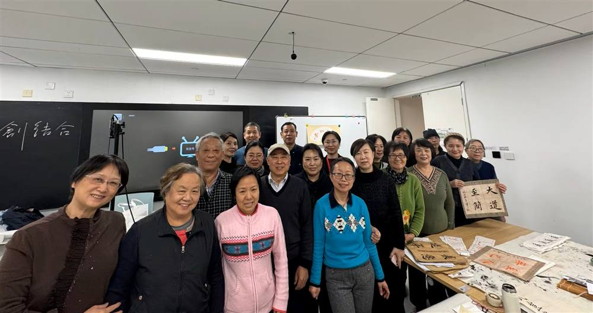
今天上课的学员合影，部分学员请假未到。
我对老年大学心仪已久。前几年试图报名，因种种原因未能如愿。眼看秋季开学在即，在老学员刘伯雄的帮助下，捞到了最后一个名额，正式入学国家老年大学，成为魏公村校区2024年秋季欧楷九成宫基础班的一名学员。
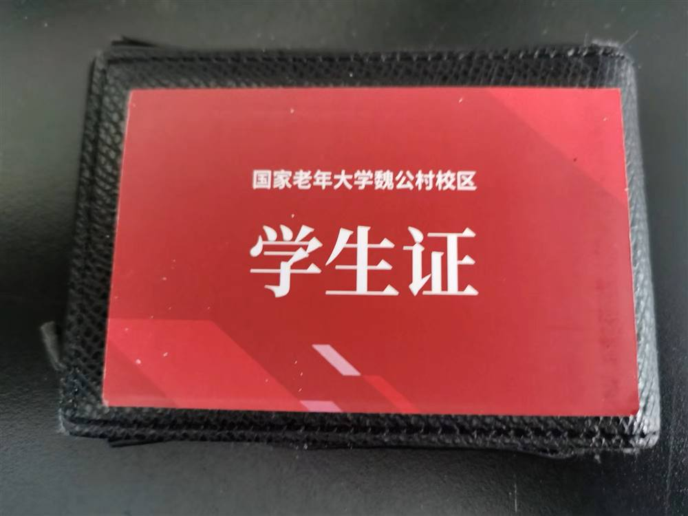
幸运的是，我上的这所老年大学是国家老年大学。
国家老年大学是全面贯彻落实党的二十大精神，办好人民满意教育、积极应对人口老龄化的具体举措，也是我国老年教育事业改革发展的重要里程碑。
国家老年大学旨在促进老年人厚德修身、终身学习、主动健康、乐享生活、积极作为，不断满足老年多样化学习需求，努力为实现老有所学、老有所乐、老有所为创造更好条件。
国家老年大学在全国设有多个校区，其中主校区是魏公村校区。
魏公村校区位于北京市海淀区魏公村路2号，与北京理工大学相望，离我家住地仅六公里。
九月九日下午一点多，我收拾好毛笔和宣纸，背着书包去上学了。
在住地附近的马甸北站乘坐695路公交车，二十分钟的样子，就在中国农业科学院站下车。步行不足十分钟，经过北京理工大学和地铁魏公村站，远远地就看见马路对面一栋高楼矗立在马路边，楼房墙体写着"国家老年大学"的巨幅大字。
穿过马路就到学校了。
巧合的是：孙子垚垚去德国念书，正好今天下午动身。老年大学下午三点开学，所以，我没去飞机场送行。祝愿孙子在德国学习进步，健康成长！
教室在学校大楼的509室，宽敞明亮，可供三十多名学员学习。
更幸运的是，任课朱老师是我国当代书法艺术名家。
下午三点，正式上课。
老师简单地介绍了欧楷的特点，就让我们大家静下心来各自写字。
我原以为开学总得有个仪式，至此才弄明白：原来我是一个插班生。
这个班早在去年秋季就开学了，今天是第三学期开学第一堂课。
明年三月，我将回到学校参加第四学期的学习。
我们这个班一学期上十二节课，每周一下午三时至四时半为一节课。由于中间节假日推迟了两节课，所以延至今日才上完十二节课。
我本平庸之辈，平生所学均难以精进，又年老手抖。虽有老师手把手地教，十二个课时下来，进步不大。
书法是一门艺术，且高深。像我这老头，只能说是学写字、写字玩、写字打发时间。
不过，学任何事都要有恒心。写字光靠老师教是不成的，一节课写不了几个字。
所以，九月九号上课以后，在家里几乎每天我都会写一两个小时。
写的纸一大摞了！


还特地买了两张水写纸，写的字无法计数！
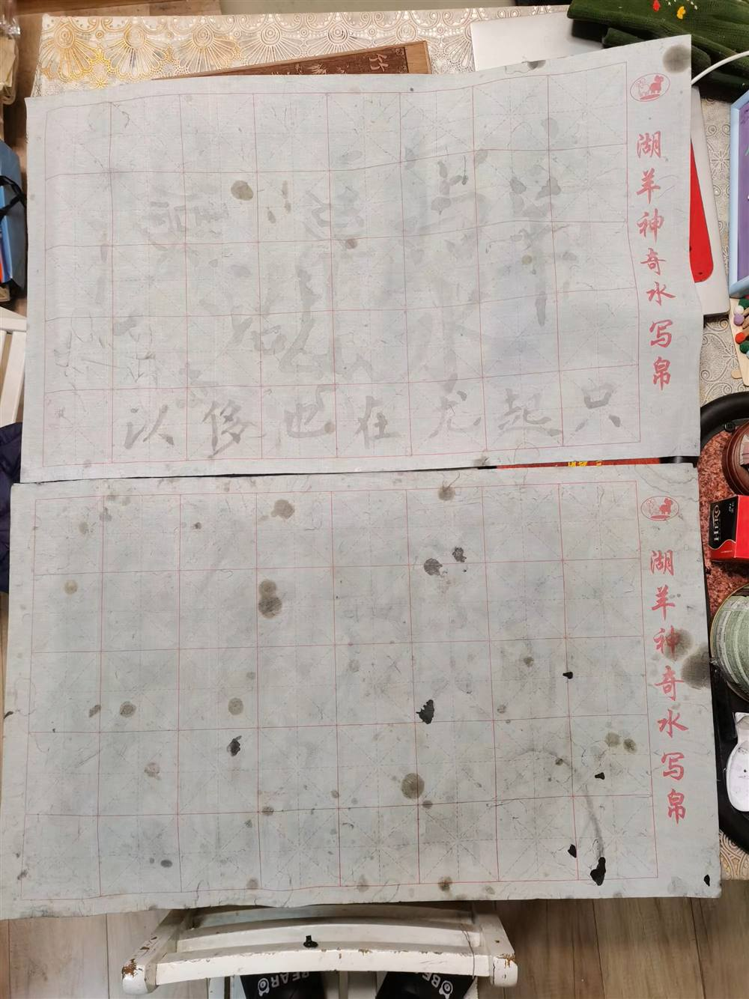
功夫不负有心人。虽无大进，却有小小变化。
下面是第一、二节课写的字。

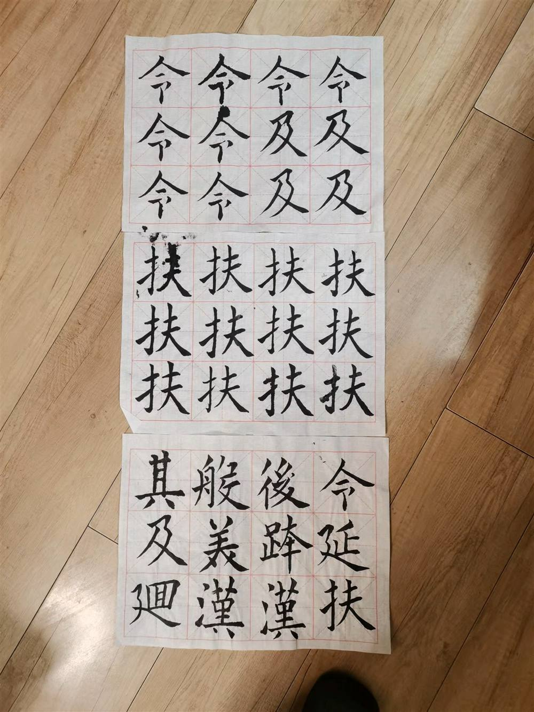

感觉最近写的好一些。
课堂上老师教的。

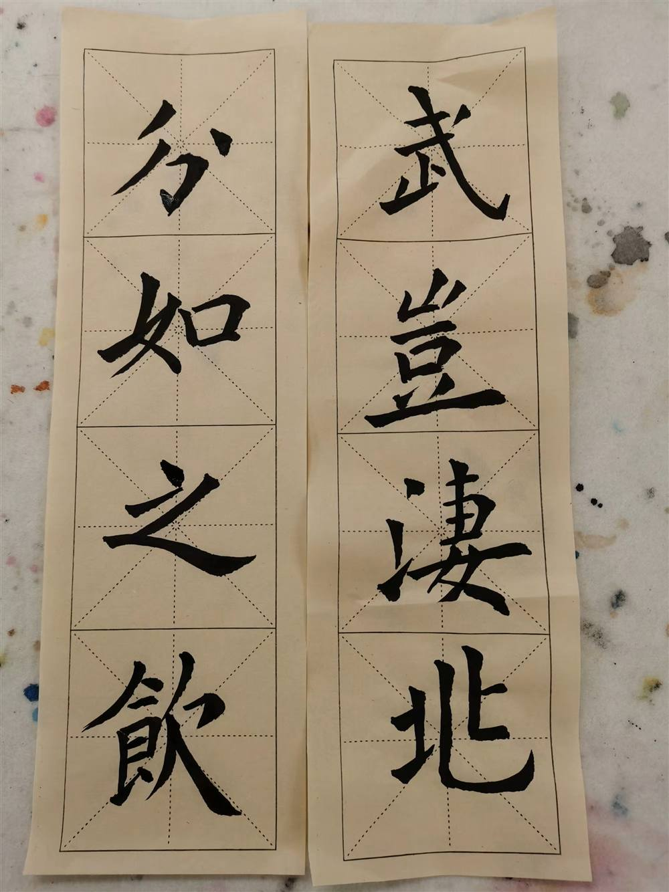

不是课堂上教的字，自己选写的。
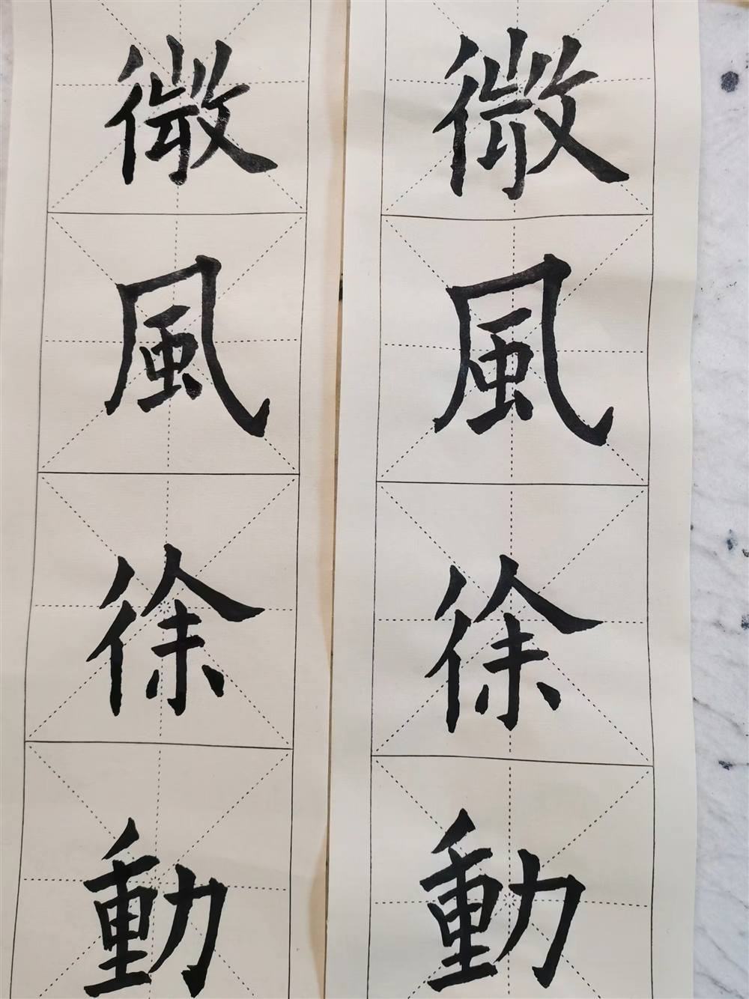


还有水写纸上乱涂的。


巧合得很：上第十节课的那一天，即二〇二四年十二月二日，是我七十七周岁生日。
生日背着书包去上学，比吃三个鸡蛋一碗面更有味！
傍晚放学回到家里，老伴为我下了一碗面，放了三个荷包蛋。
还特地加了一大瓢猪油！
香港一日行
出国，是许许多多人的梦。
退一步而求其次，出境亦是许许多多人的梦。
我就有这样的梦。
二〇〇六年七月三日，为送回国探亲的女儿返美，有幸到香港一游。
七月四日九时许，目送女儿的飞机离开香港后，我和老伴又马不停蹄地、自由自在地四处游逛，傍晚就游兴未尽地离开了香港。
尽管在香港只逗留了二十几个小时，却感慨良多！
一 出关进关
七月三日九时许，我们一行乘车直抵罗湖海关出境大厅。早在女儿回国前，得知她将由香港返美的行程后，我们花了一千元办了两张"团体旅游"的港澳通行证。由于持此证不能单独出境，又在出境大厅现场每人花100元办了临时组团的团体出境签证。十时过，我们才跟随着熙熙攘攘的人流，排队等候出关。
由于是第一次出关，心里难免有点紧张。我一只手提着旅行包，一只手紧紧地捏着通行证，目不转睛地盯着队伍前头一个个接近"关口"的人，留意有没有人被刷下来。好不容易和海关人员面对面了，那人接过通行证，只不过看了看，也没检查行李，我便顺利出关了。
数分钟后，在香港海关工作人员的导引下，我怀着同样忐忑不安的心情，在几乎和深圳海关一模一样的香港海关前排队等候检查。和出关一样，虽然忍受着等待的煎熬，却很顺利地进关了。
折腾了两个多小时，我长长地嘘了口气：终于到香港啦！我不由自主地向后一望，仔细一想：这罗湖海关，只不过是人为地用钢筋水泥筑建的一幢幢房子和用不锈钢钢管焊接的一排排栅栏。"这边"和"那边"原本是一地呵？！出关和进关，充其量只不过数百步之遥，竟足足走了两个多小时！实在令人不可思议！
"关"这个东西，从小就深深地印进了脑海里。
小人书里"虎牢关三英战吕布"的"关"，和"关云长过五关斩六将"的"关"一样，当是一座座防守严密的城池；天下第一关——山海关，和成语"一夫当关，万夫莫开"里的"关"，当是一个个依险修筑的坚固的防御工事。这些都是实实在在的有形的"关"。还有许许多多无形的"关"：穷人将快要过年的那几天叫"年关"，迷信将婴儿的一百天叫"百日关"，各行各业将全力解决某一难题叫"攻关"，文革中动不动斥责"走资派"企图"蒙混过关"……
然而，对于任何没有通行证的中国人来说，即使是伍子胥再世，也休想混过罗湖海关！
事实上，任何梦想去香港的中国人，办一张通行证是极其简单的！只不过要花一点冤枉钱罢了！而大城市的公民办的叫"自由行"的通行证，只要二百元，比我们小地方公民办的"团体旅游"要少三百元！到了罗湖
海关，想要单独出关，小地方的公民就要像我一样，再花一百元钱、多耗一些时间，办一个临时组团的签证就可以出关了。待一到香港就知道，所谓"团体旅游"，根本就是一个子虚乌有的东西——像国内任何一个地方一样，一个人想要去那里，就可以去那里！无非是让那些有门道的单位或个人，不费吹灰之力就赚走了一百元钱！
既然任何梦想去香港的中国人都有办法过得了关，为什么要多花那么多冤枉钱、浪费那么多时间呢？既然"这边"和"那边"本是一地，为什么要花那么多人力物力财力筑关呢？
罗湖海关应当休矣！
期待有一天，想去香港就像想去北京、上海一样！
但愿这一天早日到来！不会再等九十九年吧？
二 地上地下
地图上的香港只不过一个弹丸之地，面积只有我们武穴的一半，人口却接近七百万，密度大得惊人。每天还有无数的游人。当时我猜想：香港的交通一定很拥挤吧？
时过午正，我们三人随着人流上了"广九东线"火车。这列火车不似我们平常坐的火车，倒是和北京的地铁差不多，只不过在地上行驶而已。我和老伴稀里糊涂地听着女儿的指挥，在一个叫"红磡"的车站下了车。下车后才知道：这儿是九龙半岛，和我们要去的旅馆还隔着海呢！说话间，女儿又指挥我们上了一辆的士。数分钟后，小车驶入一条隧道——隧道好长好长，司机告诉我们：这是在海底穿行。不一会儿，当车子停下的时
候，司机又告诉我们：铜锣湾到啦！铜锣湾是香港最热闹的地方之一，它和九龙隔海相望，那中间就是著名的维多利亚港！
在旅馆稍作休整，我们便去逛街。
地铁是香港最妙的交通工具。它共有六条线路，隔海将香港岛、九龙半岛、大屿山岛紧密地联系在一起。
香港的交通部门想了许多促销办法，使游人既方便简捷又节约省钱。我们每人买了一张"二十四小时随意坐"的乘车卡。凭着这张卡，我们从这一站坐到那一站，从那条线路换到这条线路，时而地下，时而地上。
妙的是，几乎所有的地铁站上面，都是香港著名的地方：不是"购物天堂"，就是"美食一条街"，亦或繁华的闹市、美丽的港湾。
下午四时许，我们在地铁"港岛线""铜锣湾"站上车，在"金钟站"下车上街。鳞次栉比的高楼大厦，排列着世界各大金融机构。在"美国银行"门前，女儿孩子似地欢天喜地："这是我的开户行！"旋即在自动取款机上取了几千元港币，竟没收取一分钱手续费！在那儿，我们还参观了香港廉政公署。我们边走边看，又从"中环站"出发，乘坐"荃湾线"到达九龙半岛的"旺角"。在旺角，我们游览了"西洋菜街"——那儿商店林立，游人如织，较之北京的王府井大街，有过之而无不及！傍晚，从旺角乘坐三站地铁，一会儿就到了著名的"尖沙嘴"。在海边，我们依栏而眺，对面香港岛的夜景一览无余！五颜六色的霓虹灯，把九龙半岛、香港岛连成一片，真让人流连忘返、美不胜收！晚上九时四十五分，在尖沙嘴广场，我们还有幸观看了据说是世界上独一无二的水幕表演呢！
更妙的是，连接香港岛和大屿山岛的地铁"东涌线"，不仅穿越海底，大部分时间里，还一直沿着海滨在地上行驶。而同样从"香港"站出发，到香港机场叫"机场快线"的一条铁路线，大部分路段则与之并行。机场快线其实就是又一条地铁，只不过完全在地上行驶而已。
七月四日上午九时许，女儿飞离香港后，我和老伴就在机场乘坐"机场快线"列车，到铁路和地铁的交叉站"青衣"站，换乘地铁到"东涌"站。在东涌站，我们又换乘公共大巴，到一个叫"大澳"的岛屿，游览了香港原汁原味的渔乡风光。
下午两点多钟，我们从大屿山返回香港，乘坐了地铁"东涌"线全程。列车在地面行驶的时候，凉风习习。透过车窗，近处的大海在面前徐徐而过，远处的群山和列车同行，交织成了如诗一般的五颜六色的画卷：蓝的是天，白的是云，碧的是海，青的是山！
令人意想不到的是：地铁竟然和轮船码头连在一起！
我们想乘船去澳门。
下午四时许，我们在地铁"东涌线"的起点站香港站下车，旋即换乘"港岛线"，在"上环"站下车后，凭着旅客的指引，我们在地下通道里穿行。走呀走，几分钟后，竟然走到了去澳门的轮渡码头！真让我们喜出望外！原以为走这条地下通道，只是去码头的方向，肯定要"上路"后，或步行，或乘车，再去码头。于是，我们买了船票，依依不舍地离开了香港。
虽然我们在香港只逗留了一天，香港的交通却留下了深刻的印象。由地铁、铁路、的士、公交巴士（我们去机场乘的是公交大巴）、轮船，乃
至飞机组成的交通网，方便、快捷、安全、通达。它不会给你制造像我们省会武汉那样挤上公汽的机会，也不会留给你像首都北京那样遭遇堵车时的感受。
香港的交通，OK！
三 路人警察
对于大多数中国人来说，香港是个陌生而又神秘的地方。
我曾经多次去过深圳。在罗湖边界乘车经过的时候，眼望着在连绵起伏的山峦间、时而被郁郁葱葱的林木掩映的、用铁丝绞成的一段段网状隔离物（不知通电了没有），和间隔一定的距离就耸立着的一个个岗楼（有时能看见里面有站着持枪的人），心里总是充满了神秘感——尤其在一九九七年以前。
如今，香港回归九年了，神秘感虽然不似从前，但是，猜想它和"这边"的风土人情总会大大的不同——毕竟英国帝国主义在那里殖民统治了整百年！毕竟它还是一个特别行政区！毕竟它还在实行资本主义！
这一次，可要好生的体察体察！嘿！还真有许许多多的不同！
七月三日午后，我们在地铁"红磡"站下车，女儿招来了一辆红色的士。当我打开小车右后的车门、坐进汽车的时候，一眼看见前面司机位置上坐着的，竟是一个头发花白的老头！后来我在铜锣湾的街边漫游，不经意间又发现：停在路边等候顾客的四五辆的士司机，竟有两个是满脸皱纹的老者。
如此多的六七十岁的老头，在大街上开的士，在我们"这边"简直不可思议！是香港的人生活困难，非得爷爷、外公出来打工补贴家用？还是我们"这边"老人娇嫩高贵，该要颐养天年？
香港的街道和马路看起来较窄，非北京上海可比——即使是我们武穴的明珠大道、永宁大道，也比它们气派得多！林林总总的店铺，花花草草的招牌，形形色色的霓虹灯，匆匆忙忙的行人，倒是和国内的一些城市相差无几。但是在香港的街上行路，没有像在国内的一些城市那样，动不动要站在斑马线上久等，更没有时时要提防汽车、摩托车、自行车会撞到身上来的那种担心，甚至于"谨防小偷"的戒训，也被忘掉在九霄云外。总之，让你有一种安全感。
香港的路牌比北京上海的要差得多。北京的街头街尾、街左街右，都在显著的位置立有路牌，上面不但清清楚楚地写着某某大街、某某大路，还用箭头表示东西或南北的方向。稍有地理知识和方向感的人，就能根据路牌的指示找到想去的地方。香港的路牌小而不起眼，也不告诉你东南西北——也许是受殖民统治的影响，不少街道的名字稀奇古怪，让你过眼即忘。为了记住我所下榻的旅馆那条街道的名字，我像小学生似的又是背诵，又是默写，到现在仍然记不起一个字来。在这陌生的地方行路，就靠问人了。
香港的路人和警察，百分之百的有问必答，和蔼可亲。
七月四日上午十点多的时侯，我和老伴从地铁东涌站上来，打算到大澳去看一看，却茫然不知去向。稍后，我走近一位警察先生，向他说明了我的意图。那警察胖胖的，中年人。他和言悦色地告诉我要乘23路大巴
，见我略有迟疑，便主动提出来给我们带路，并一直把我们送到23路车站。感激之余，让我想起发生在几天前的一件事。那天，我和女儿在上海火车站附近寻找汽车总站，准备在那儿购买回武穴的汽车票。在茫茫人海中找到了一位警察同志，向他说明了我的意图。那警察胖胖的，中年人，高高地站在一家门面的台阶上，一只手握着对讲机，目不下视地挥起另一只大手（差一点碰到我的头上），随意地指了个方向，面带愠色地说："拜托了，用你自己的眼睛看看吧，那儿有个牌子！"我一头雾水，只好悻悻地离开他。在香港，向过路的人问路，会象问警察一样使你满意。有一次，我拦住了一位行色匆匆的年轻人，试图打听哪儿有便宜的旅馆。小伙子不厌其烦地告诉我什么地方会有，该坐什么车；怕我不太明白，又去找来笔和纸，详详细细地写给我。
……
令我特别感慨的是：香港行政机关的光辉形象，大大出乎我的想象：全港最高的大厦，或者回归后新建的全港最漂亮的单门独院，五星红旗和紫荆花旗在楼顶上高高飘扬，时尚的大门两边蹲着两只雄壮的石狮，站着两名威武的士兵，在最显眼的地方挂着金漆大牌，全新的高档轿车驶进驶入，西装革履的达官贵人来往穿梭……
事实上，如果从我所见到的每一个行政机关里，抽取最强的一项拼凑一起，也不能满足我所构想的光辉形象。
出于好奇心，也出于某种思考，第二天上午，我和老伴在澳门的大街小巷漫步，刻意寻访澳门的行政机关。在一条几米宽的小街道，一间极普通的建筑物上面，标有"印务署"的字样。在它门前的地上，用白色油漆画着五块长方形的小块，旁边写着："停车位"三个字。
"这是澳门的印务署？一共只有五辆车？"我问老伴，也问自己。
"应该是吧？那上面不是有招牌？"老伴好像不是在回答我，倒像是在自己问自己。
"也许，也许这是后门吧？"我俩同时自言自语。
二〇〇六年八月二十三日
2011香港日记
CZ310航班误点二十多分钟，于九时九分左右起飞，飞行约三小时后，比预定时间提前到达了香港机场。
和女婿会合后，我们在机场乘坐机场快线到九龙站，换乘地铁东涌线，在奥运站下车。步行数分钟，穿过一个商场，就到了女儿的住宅——帝柏海湾一号楼39层B室。
溜溜很瘦，见到我没有特别的兴奋，好似天天常见的亲人一样。晚饭的时候还特别给我夹菜，晚上居然缠着我要讲故事，和我睡在一起。
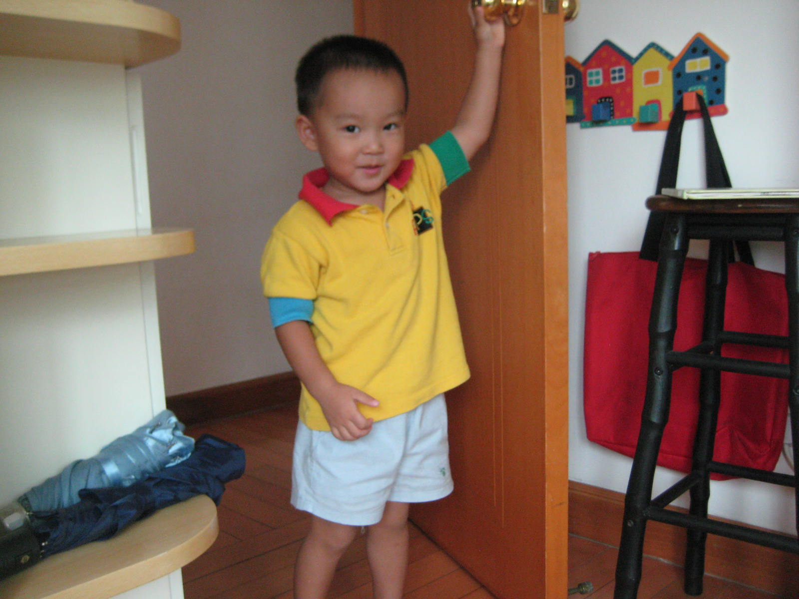
妹妹也不是听说的那么胖，白白的，常笑着。

女儿也很瘦，显得很憔悴，我心里有点酸酸的。
二〇一一年七月九日
吃过早茶，女儿和溜溜带我去溜的幼儿园。
在东涌线奥运站上车，九龙站下车，仅一站的路程，一会儿我们就到了幼儿园。
幼儿园的全称是柏基国际幼稚园/幼儿园。听女儿说，一个月要交六千多元，还只上半天，太贵了。而九月一日就要换一个了——那个幼儿园是全天制的，只要两千多元，而且就在住宅的附近，不用乘地铁了。
下午，和女儿、溜溜三个人去游泳了。游泳池有室内的，也有室外的。室外有一个大的，有几个小的，水都很浅，最深的地方不超过一米三吧？水都很清，几乎看不见一点渣子。
玩了个把小时，我就出场了。溜溜玩兴正浓，不肯罢休，我就在会所里等她们了。
游泳池是会所的一部分。除了游泳池，会所内还有健身房、乒乓球室、羽毛球场、壁球房，还有阅览室、两个儿童游乐园等等。这些场地有的随便进，有的要收费。比如：我进游泳池一次就要花港币25元，而溜溜只要有大人带着就可以随便进入了。会所有两层，游泳池在底层。
平时理解，会所应是比较高级的住宅区才会有的。北京的住地裕中西里就没有，好像何三那个明天第一城也没有。在美国新泽西的泽西市，就是一栋楼里有一个会所，不过比较简约。海云爷的住地深圳鹏兴花园（一期）似乎有一个，不过比这儿的要逊色得多。这个会所是帝柏海湾和它的姊妹楼柏景湾两个住宅区共有的。一共有九栋楼，按照住户数估算，相当于二十栋裕中西里我们住的楼那么多，估计和整个裕中西里住户数差不多。九栋楼和会所的占地面积可能只有裕中西里的四分之一到三分之一吧，但是会所却显得宽敞大气。从女儿住房俯视，会所很养眼。

在这两个住宅小区合围的"弹丸之地"内，还有一个面积比会所还要大的奥海公园。如果去这个公园里走走，一定会使你忘记你现在是处身于高楼大厦的包围之中。

早上起来就没见菲佣，晚上睡觉前也没见她回来。女儿告诉我，菲佣今天休假。
二〇一一年七月十日
小外孙女出生于2010年11月25日，正好比垚垚小五个月，一晃就七个多月了。
她们给她取的大名叫刘雨禾，小名冰冰，都是和她哥哥刘阳禾、溜溜相对应的。我一见到她，脱口就叫她妹妹。
妹妹很乖，常常张着口，笑嘻嘻的，很少听到她的哭声。

妹妹很灵便。因为在北京带垚垚，见到的婴幼儿就多了，七个多月的，鲜有妹妹这么灵便的。妹妹在三百六十度之内，摸爬翻转，卧蹲坐立，十分自如。

妹妹很聪明，这么小的人就知道跟人打招呼，还会做鬼脸呢！
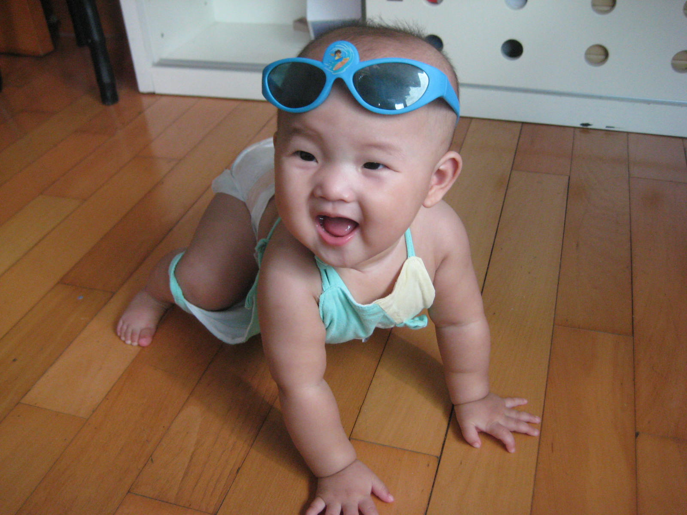
妹妹好像能认人了，有时要她妈妈，对菲佣显得很依顺。
菲佣浅黑色的皮肤，五短身材，四十四五岁的样子。由于言语不通，三天来没什么交流。
下午带溜溜去会所。他玩转了两个儿童游乐室，很开心。
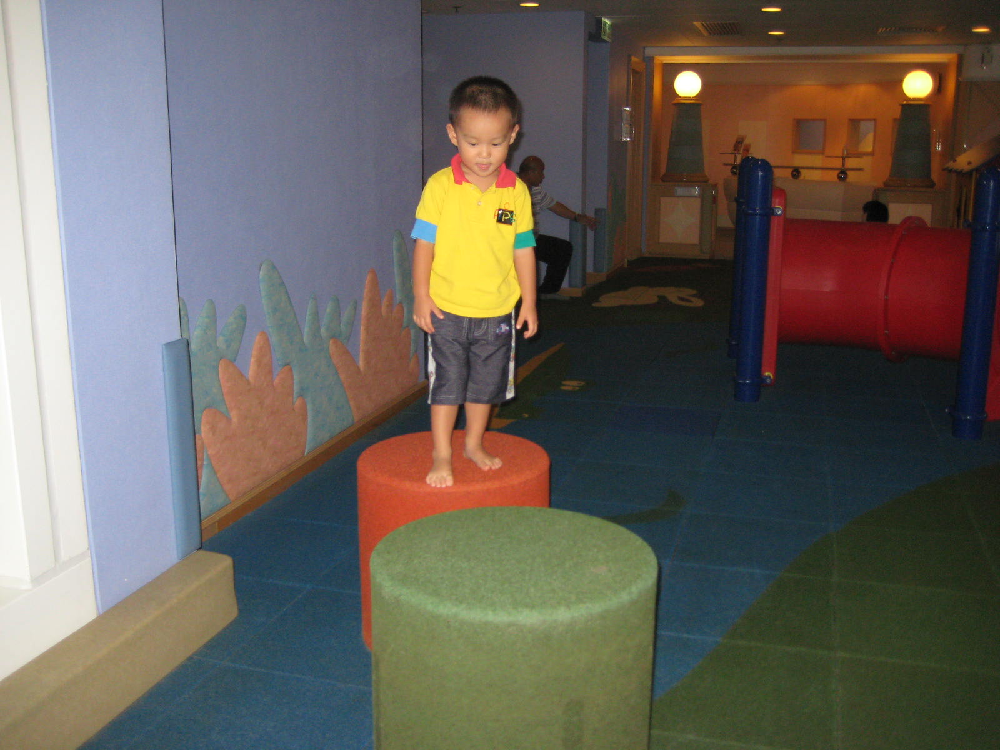
二〇一一年七月十一日
帝柏海湾四栋楼全部坐北朝南，高五十层。女儿所住的一号楼是最西的一栋。她的住房三十九层B座，是朝南向的房子。由于一号楼南面和西面都没有其它高楼，所以站在主卧室和另一个卧室（我现在就住在这个卧室）的窗前，可以清清楚楚地看到九龙站的高楼、尖沙嘴的建筑群，还能看到部分维多利亚港和香港岛的大部分。

在主卧室朝西望，能看到一大片海湾和远处的山峦。而朝下看，新油麻地避风塘的全景尽收眼底。
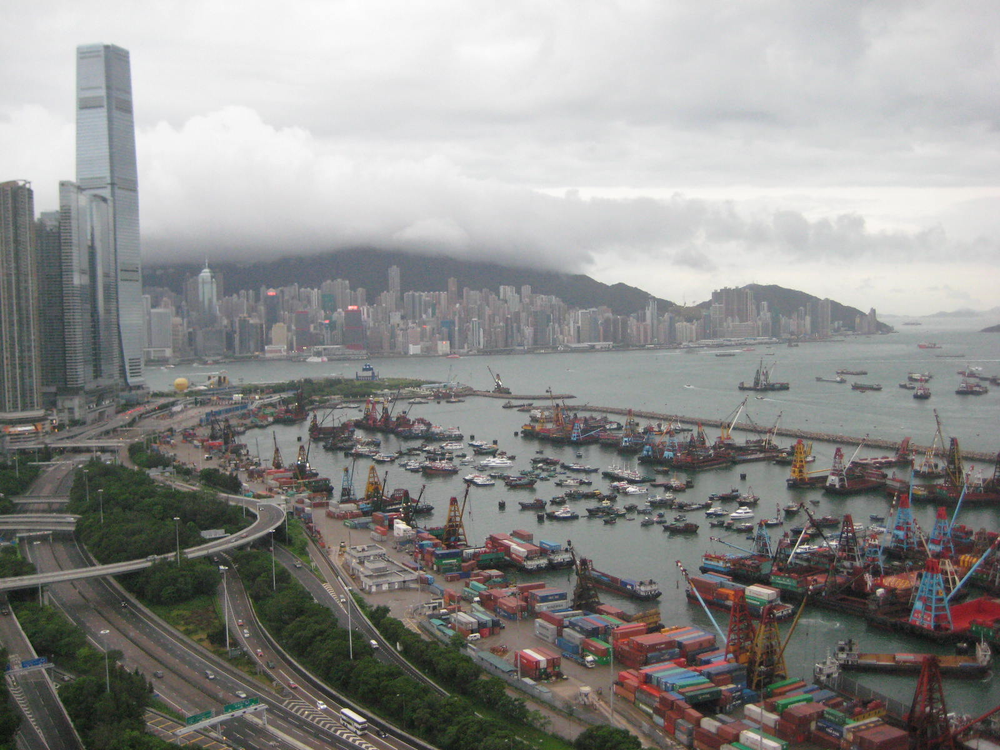
在窗前无数次地看下面的避风塘和海湾，觉得离这儿很近很近，横过几条马路就是了。总想去看个究竟。下午，溜溜睡着后我就下楼了。
按照心想的方向大约走了半个多小时，几条马路一条也没横过去。问了几个行人，不是听不懂话，就是不知道。后来在一个懂普通话的保安的指导下，才弄明白了走法。
到海边的确很近——不须走出高层地下（UG），从地铁E出口下去，几分钟就到了。
避风塘就是在海湾人工建筑的、供船只（主要是渔船）躲避台风的地方。网上查得：油麻地避风塘建得很早，原地址在现在的地铁奥运站那儿，后来填海造地，使其西移至现在的位置，因而就称它为新油麻地避风塘了。
站在避风塘的北岸，塘内的船只只只可数。不过，都是装集装箱的货船，几乎没看到一只渔船。
防波堤当是避风塘最重要的建筑了。它就是用来抵挡台风的一堵石墙。要是从游览的角度形容它，当之无愧可称作国人近来常说的一道亮丽的风景线。
真的，从高处、远处看，它就是海湾中的一道风景线。走近它，看到的是一块又一块硕大的石头。
避风塘的东面、南面和北面都和陆地相连，西边就用无数大石头从海湾底部垒起一道石墙，以阻挡风浪，而在南北两头各留一个开口，以便船只进出。
走上防波堤，尽管每块石头大小不一、形状各异且高低不平，但是块与块之间啮合得非常牢靠，绝无松动。坡面很宽，所以走在上面没有丝毫的怯意。凡露在表面的石头，几乎都被人刻上了诸如"某某在此一游"的留言。可见防波堤是游览的好去处，的确是建在海湾中的一道美丽的风景线。


二〇一一年十一月十二日
中午，带妹妹去奥海公园。奥海公园位于会所的南面，柏景湾西边的UG层上。中午游园的人不多，显得很安静。

吃过中饭，和女儿一道带着溜溜、妹妹去油麻地给妹妹领护照。女儿住所属香港行政区的油尖旺区，想必油麻地是该区行政机关所在地。
领了护照后，又去旺角给妹妹办回乡证。回乡证是香港居民往来内地的证件，由设在旺角的中国旅行社代办。

傍晚，和女儿、溜溜、妹妹一道到P层散步。P层是UG上面一层，是一层平台——帝柏海湾四栋楼连在一起的平台，也就是帝柏海湾区域的奥海城的顶部。在这个平台上，有树木，有花草，简言之，就是一个空中花园。从P层往南，还建有一个网球场和一个法式喷泉。
刚到香港的第二天，女儿就带我去了溜的幼儿园，本意就是想让我这几天接送溜溜。我则选择了在家看妹妹的任务，让菲佣去接溜溜。
今天是溜溜这学期最后的一天。我想送他去上学，也有点纪念的意思吧！我对溜溜说：爹爹送你去幼儿园。今天是你在这个幼儿园上最后一天学，记住，是爹爹送你去的。
幼儿园就在地铁九龙站旁边。
从幼儿园出来，就直奔那座最高的大楼。我想近距离地看看大楼，围着它转了一圈，看见进进出出的人都是上班的模样，几乎没有游览的人，只好敬而远之。说来惭愧，连它姓什名谁都没弄清楚。想照张相，离它又太近。后来在它旁边的花园里，发现有一块石碑，上面刻有"环球贸易广场"六个字。心想，也许这就是大楼的名字吧？就在这里照张相，留个纪念吧！想找个人帮忙，望了半天，也没见一个游人，只好自己给自己照了。一连拍了五六张，也没一张像样的。
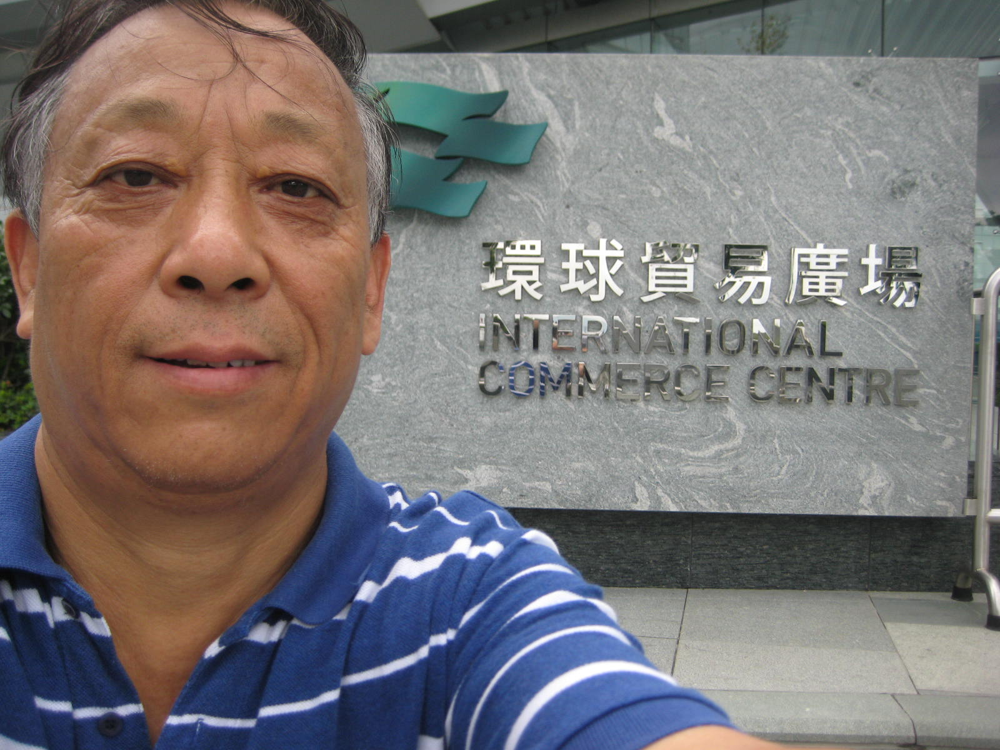
查网得知：这座大楼是地铁九龙站的发展项目，环球贸易广场是它的中文名称。高484米，是全港第一、世界第四高楼，有118层，是当今世界层数最多的大楼。全球最高的六星级酒店位于它的最顶十五层。
大楼位于海边。从海边往北走，肯定要不了多长时间就可以到新油麻地避风塘。一边想，一边决定沿海边走回家。
大楼旁边有好几条马路，没看到有直通海边的。"往北一条一条地跨过去，总会到海边吧！"心里想着，不知不觉走入了一条单向行车道。行车道的右侧也有一条人行道，沿着人行道往前走，心想前面总会有交叉路口，可以换一条靠北的路，然后再换。可是走呀走，路上只有对面驶来的一辆又一辆汽车，却没有一个行人；路好像没有尽头，没有一条和它相交的路；而且这条路常常在地平线下，有时就像在深沟里一样，两边就像峭壁一样。走着走着，心里就害怕起来；回头吧，又有点不甘心，只好麻着胆子往前走。大约走了二十多分钟，马路渐渐露出地平面，奥海城就在前面，心里一块石头落了地。在接近奥海城的路段，离开了马路，走进了奥海城。
这是一次令人后怕的行程。
下午，乘溜溜睡着的时候，再次逛了樱桃街公园。
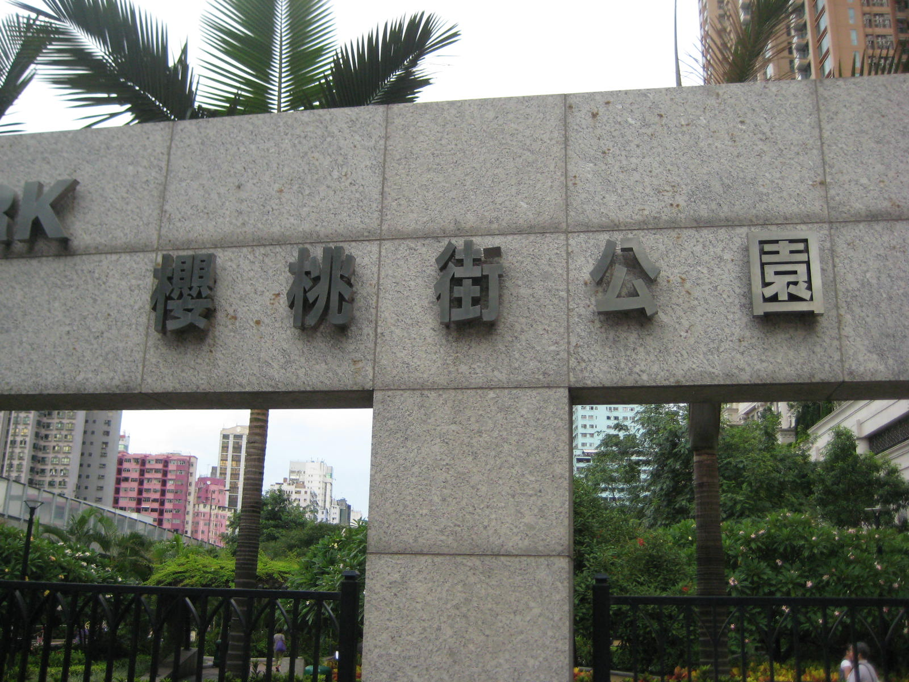
晚饭后，和女儿、溜溜乘车到了尖沙咀。维多利亚港的夜景，的确迷人。

二〇一一年十一月十四日
我想去油麻地看看。
下午，乘溜溜睡着后，一个人下了楼。
昨查谷歌地图得知，油麻地在住地的东南方。由是，向东先走樱桃街，至亚皆老街转而向南。一路上信步而行，边走边看。走过了好几条街，记得有上海街、广东道、炮台街等，看到了油麻地警署、油麻地街市。也不知道到的地方是不是油麻地，或者说，是不是到了油麻地的核心区域。
这些街道大多是老街，没有高楼大厦，路面也不宽，繁华而杂乱，繁华中透出古朴，虽杂乱却显得自然。
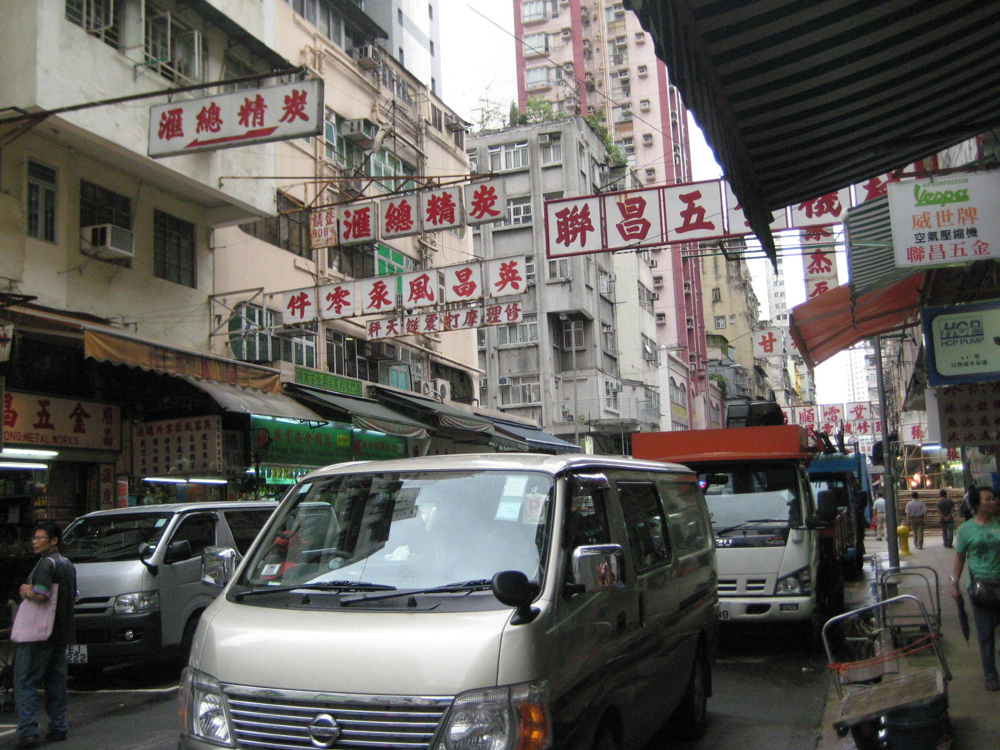
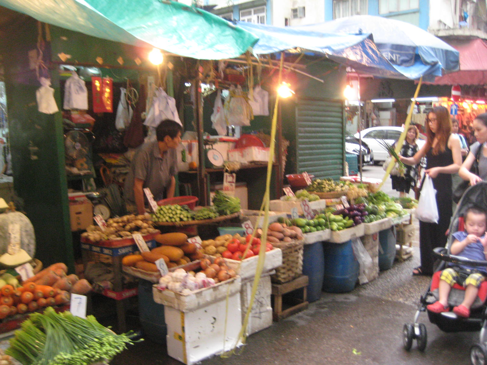
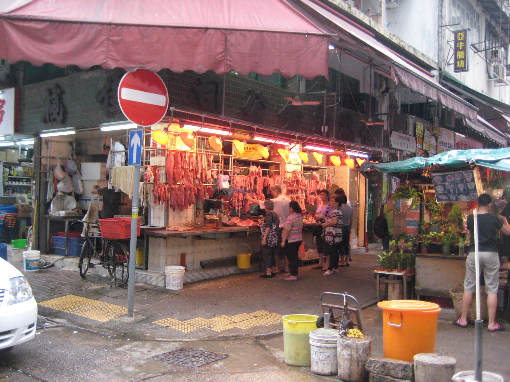

在没有来之前，是想象不出来的。走走看看，不由勾起了儿时的记忆：儿时的武穴街浮现在我的面前——似乎和油麻地差不多，只是街道的数
量少些罢了。如果当时的和以后一届一届的领导人，能把旧城原封不动地保存下来，说不定武穴这个"长江边的古镇"，也会惹来如织的游人。看看走走，不由又想起十多年前我参加过的武穴市的"门前三包"工作（这项工作好像一直都未曾停止过）。如果按照当时武穴市的标准，整个油麻地的街道恐怕没有一条是符合要求的，统统予以关闭，先治好"脏、乱、差"再说话。要论卫生、整洁、有序，除了刘家巷以外，现在武穴街的街道，哪一条都比油麻地的好得多！
走走看看，渐渐地高楼大厦就多起来了，不知不觉地就走到尖沙咀了。累了，坐上十二路公交车就回家了。
二〇一一年十一月十五日
今天星期六，女儿休息。我们带着溜溜去旺角给垚垚买奶粉。和美国的中国城类似，香港的街上有很多药店，而这些药店不光卖药，还卖其它类型的商品。这儿所有的药店内，无一例外都有大量的奶粉出售。给垚垚买的奶粉牌子叫什么皇牌恩加健3段，大多数药店均有出售。我们看了几个店，虽然它们在同一条或相邻的街上，价格却不尽相同：卖得最高的是189元一罐，我们花185元一罐买了五罐；后来在另一条街上又以183元一罐的价钱买了五罐。也不知会不会还有更低的价钱。

在周生生金店，给垚垚奶奶买了一副耳环。
旺角离女儿的住处其实不远。买完了东西，走了一会儿就上了人行天桥，人行天桥直通奥海城。
下午本想去大角咀看看，却意外地逛了三个公园。三点多钟的时候，从奥运站B出口下去，冒着小雨胡乱地走了几条街，到了大角咀道。雨没有停的意思，心想到了大角咀道，也算是到了大角咀吧，于是顺着原路回到了B出口，准备回家。
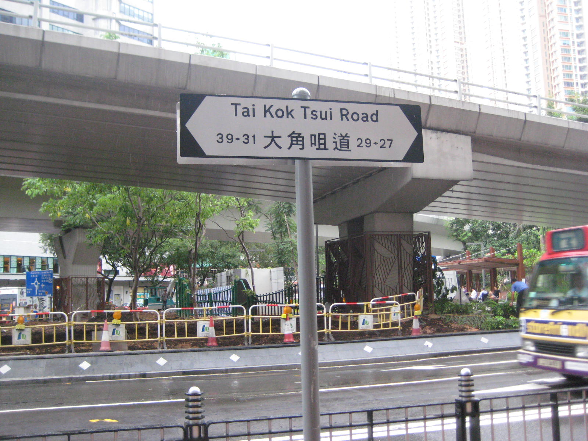
这时看见B出口外的人行天桥向北还有好长一段，就想去走走看看。走不多远，就有指示路标，示意前方可达南昌公园。在人行天桥的尽头，没看到去南昌公园的相关指示。按照一个保安告诉我的走法，下了人行天桥后，跨过马路（路的东边），在一条小道上一拐两拐，就走进了一个公园。围着公园走了一圈，在它的正门才知道：这不是南昌公园，而是乐群街公园。公园虽小，却建有几个亭台水榭，别有一番风情。

雨已不下了，还是想找到南昌公园。于是离开乐群街公园，返回到那条马路。这时才看清楚，原来这儿的马路正在维修，有几处设有路障。绕过路障，终于在马路的西边看到了南昌公园的招牌。

南昌公园建在大路边，有闹中取静之意。面积较之乐群街公园要大得多，然而却鲜有人气——偌大的公园，只有三五个游人。也许像它门前的马路一样，在等待维修吧？
离开南昌公园，返回路东，准备回家。在聚鱼道上误打误撞，竟然又走进了一座公园，索性游览了一圈。这公园叫通州街公园，虽然没有乐群街公园那么精致，面积却大得多。

尽管又下起了毛毛细雨，在能避雨的地方却有很多人围在一起玩牌，显然人气比南昌公园要旺得多！